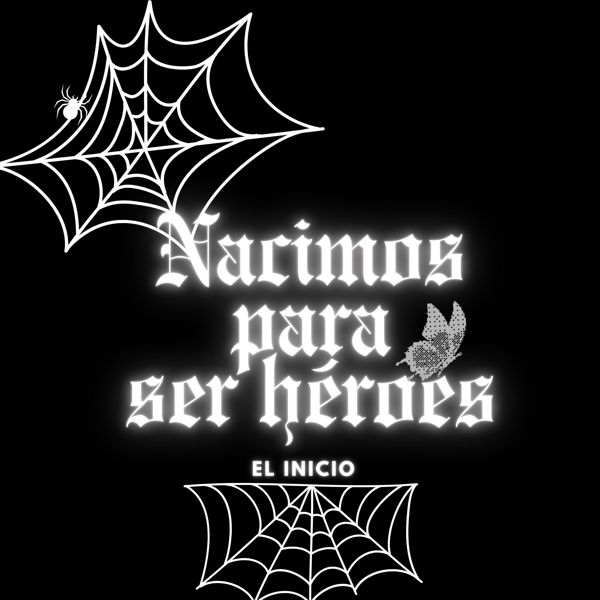
Dedicatoria
A las personas que más he amado en esta vida: mi hermano y mis dos hijos, Damián y Dominic.
Aun si algún día yo me desapareciera entre la inmensidad del universo, espero que me recuerden a través de las historias que siempre imaginé vivir con ustedes.
1Prefacio
Este libro nace de la creatividad de una persona que nunca se ha dado por vencida con el arte, encontrando en él no solo una fuente de inspiración, sino también una forma de expresión y comunicación.
Mi intención al crear esta obra fue entregar al mundo un poco de esperanza y compartir mi manera de ver la vida. Quería construir un espacio donde la imaginación pudiera convertirse en historias y donde cada página transmitiera algo de aquello que a veces resulta difícil expresar con palabras.
Porque, aunque en determinados momentos parezca que estamos solos, incluso en medio de esa soledad la esperanza puede brillar con más fuerza.
3Índice
5Índice
6Índice
7Capítulo 01
La historia comienza
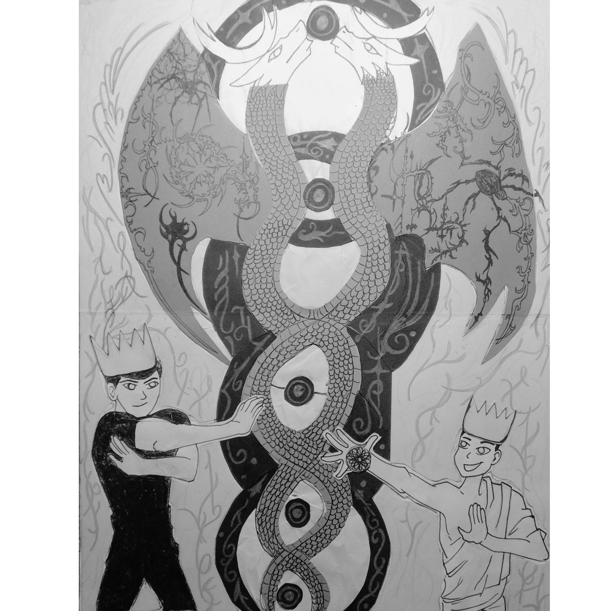
Toda historia tiene un inicio, pero hay relatos que se reinventan, que nacen en la claridad y no en la sombra. Son historias donde el héroe no es esclavo del dolor, sino guardián de la esperanza.
La historia comienza
Damian no nació para ser víctima de la oscuridad, ni para obedecer rituales que lo encadenaran. Nació para ser rey, aunque aún era apenas un adolescente que buscaba comprender el peso de su destino. Sin embargo, las sombras de Krystal y el monstruo marino, sus enemigos, lo habían confundido, haciéndole creer que debía obedecer, cuando en verdad eran ellos quienes debían inclinarse ante él. Krystal, como un espejismo, lo engañó con promesas falsas, intentando que Damian olvidara la luz que ardía en su corazón. Pero la verdad era que el amor es la única fuerza capaz de vencer al egoísmo y la manipulación. Y ese amor tenía un nombre: Dominic.
7La historia comienza
Al reencontrarse con su hermano, Damian comprendió que nunca podría ser rey sin él. Dominic era el tesoro más grande, la mitad que lo completaba, la razón por la cual debía luchar. Juntos no eran víctimas, sino héroes. Juntos eran invencibles. Por eso los habían separado: porque unidos, ningún enemigo podría doblegarlos. Así comienza esta historia: la de un adolescente destinado a la corona, que descubre que el verdadero poder no nace de la soledad, sino de la unión con su hermano. Porque el destino no siempre se escribe en sangre; a veces se escribe en la luz de dos corazones que se reconocen como uno.
← Volver al índice 8La Alquimia de los Héroes
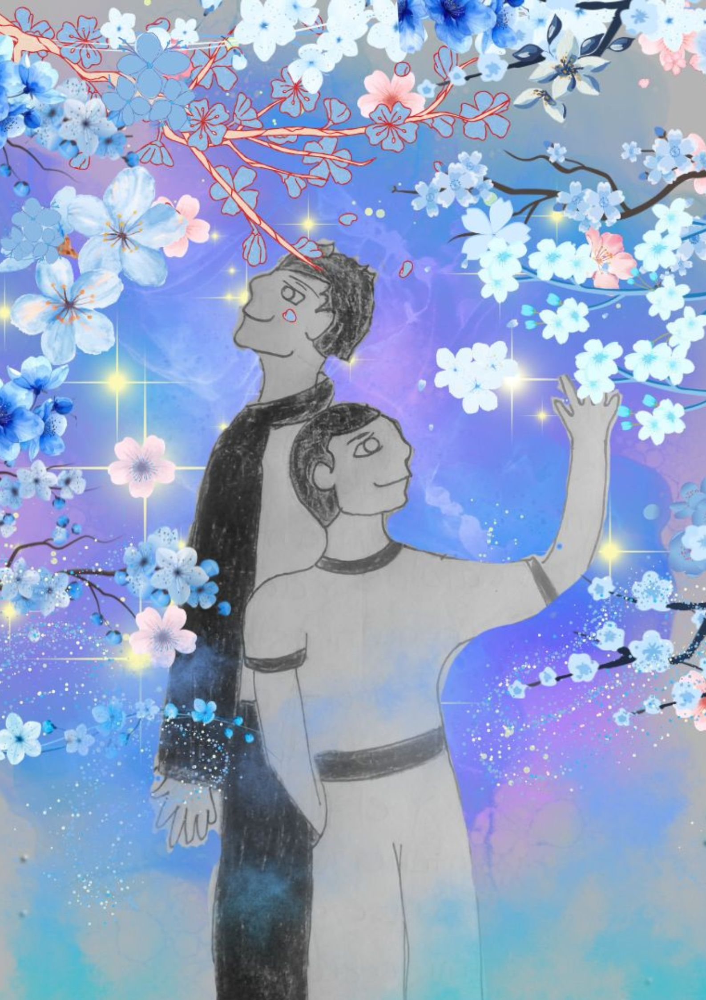
La purificación del alma, concebida como una secuencia de transformación consciente, no es un proceso que pueda apresurarse. Al contrario, exige paciencia, disciplina y motivación. Transmutar el espíritu en oro ha sido considerado, desde la antigüedad, uno de los ejercicios más arduos de la alquimia: el oro físico pertenece a los hombres, pero el oro del alma está reservado a los dioses.
10La Alquimia de los Héroes
Encontrar la felicidad no siempre es sencillo cuando la oscuridad del mundo parece interminable; sin embargo, mantener la calma en estados de desesperación es lo que nos convierte en una verdadera gema. Los hermanos y su madre no solamente habían hallado la luz a través de la felicidad, sino que también habían comprendido su verdadero valor.
Ellos no habían ofrecido sacrificios materiales, pero sí tenían una razón profunda para practicar la alquimia: recuperar a su madre. Pronto comprendieron que el camino hacia ella no se hallaba únicamente en la transmutación de lo físico, sino también en lo espiritual. Fue un recorrido difícil, marcado por la certeza de que los humanos nunca podremos descifrar por completo los designios de Dios ni los misterios de su plan.
11La Alquimia de los Héroes
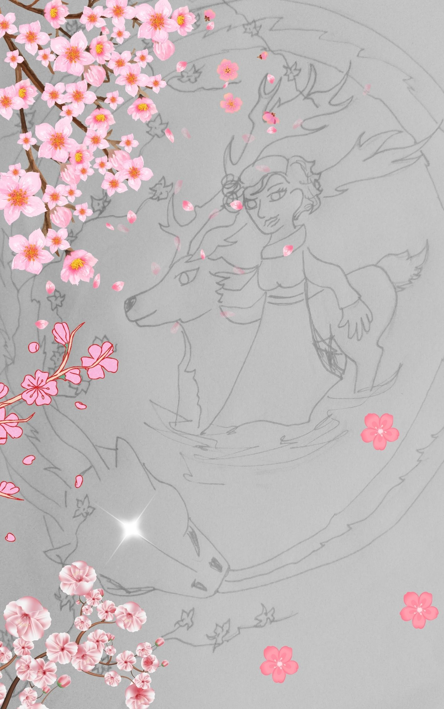
La fuerza que los acompañaba era impresionante: al purificar su alma habían liberado una energía de protección, un regalo concedido por otros dioses. Estos sabían que su sabiduría y su fortaleza debían ser resguardadas, pues el conocimiento adquirido en ese viaje no era solo para ellos, sino para despertar a estas generaciones y a las que vendrán después.
12La Alquimia de los Héroes
Su madre que también practicaba la transmutación del alma desde hacía bastante tiempo; había recorrido el Camino de Santiago, había convertido su dolor en ceniza y hallado, al fin, la felicidad en medio de la oscuridad. En ese momento, su energía y la de sus hijos estaban más conectadas que nunca: todos habían sobrevivido de alguna manera gracias al conocimiento y la fuerza, pero sobretodo a la esperanza de volverse a encontrar.
El momento de reencontrarse se acercaba.El dragón guardián de su madre apareció mordiendo su propia cola en el agua, cerrando y abriendo ciclos. “Soy tu guardián”, le dijo. Ella sabía que este era el desenlace definitivo, y con la certeza de quien conoce su propósito, avanzó sin temor.
13Capítulo 03
El Fantasma del Invierno
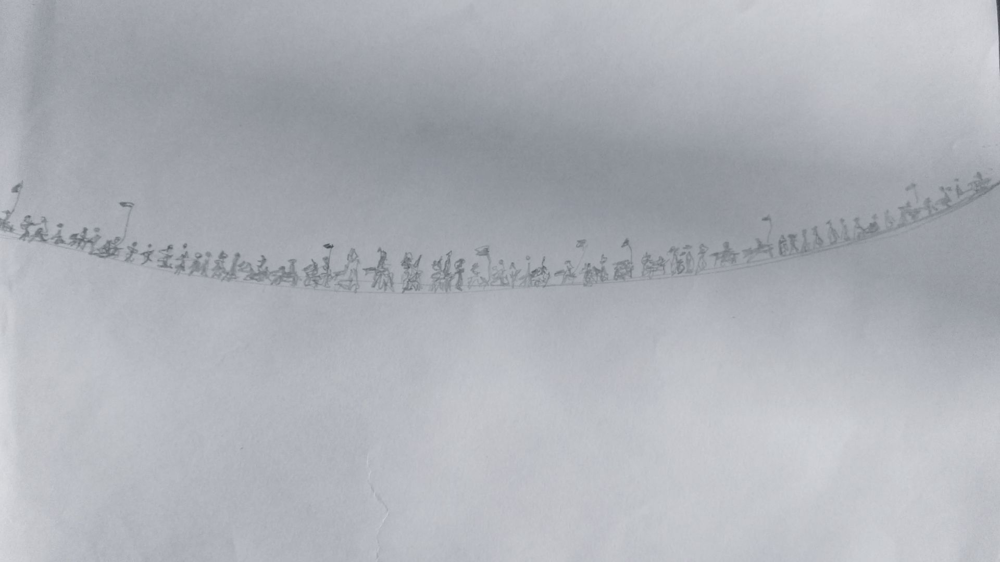
Las antiguas leyendas advertían que todo gran cambio comenzaba con una visión. A través del Ojo del Dragón, la madre contempló un futuro que nadie más podía ver: una inmensa legión avanzaba desde el horizonte. Sus estandartes oscurecían el cielo y sus pasos hacían temblar la tierra. No buscaban diálogo ni justicia; marchaban con un único propósito: conquistar el pueblo y apoderarse de todo cuanto sus habitantes habían protegido durante generaciones.
14El silencio que siguió a la visión fue tan pesado como la propia amenaza. La madre comprendió que el tiempo de prepararse había terminado. Defender aquel hogar significaba honrar el sacrificio de sus antepasados, quienes durante años habían preservado la paz con esfuerzo y valentía. Sin embargo, también sabía que aquella carga no recaía únicamente sobre sus hombros. La fuerza del pueblo siempre había nacido de su unión. Si una vez habían logrado vencer la oscuridad, esta vez volverían a levantarse para escribir una nueva página de su historia.
15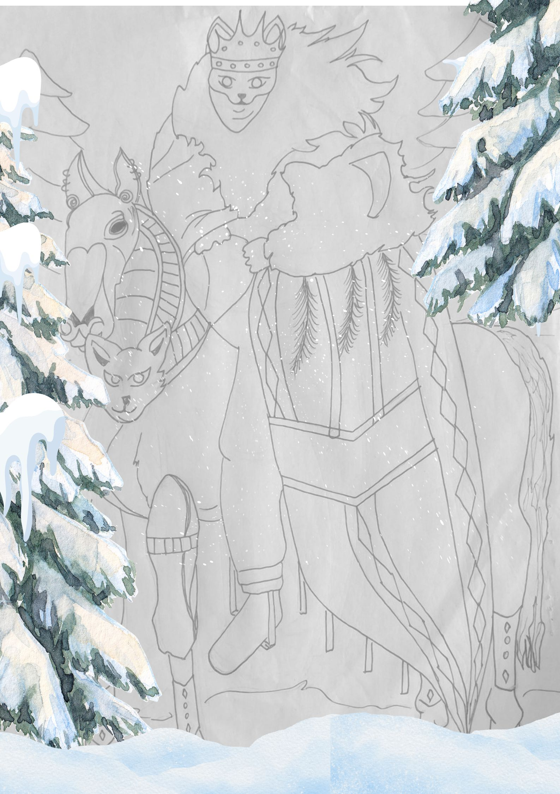
Mientras la tensión crecía, una presencia desconocida emergió entre la nieve. El bosque permanecía inmóvil y el viento parecía pronunciar un nombre que nadie alcanzaba a comprender. Desde la fría neblina apareció un jinete envuelto en un largo abrigo de pieles, propio de las tierras donde el invierno no se retira. Su rostro permanecía oculto tras una enigmática máscara, y el elegante ornamento de su caballo revelaba un origen digno de la realeza.
16Surgió desde el frío invernal como un fantasma, silencioso e imponente, hasta quedar frente a todos. Nadie supo de dónde había venido ni cuál era su verdadero propósito. ¿Era un rey? ¿Un guerrero de tierras lejanas? ¿O un viajero surgido de antiguas historias? Nadie conocía la respuesta. Sin embargo, en medio de la incertidumbre, todos comprendieron lo mismo: aquel misterioso caballero había llegado para luchar junto a ellos. La guerra ya no era una posibilidad. Era un destino que se acercaba con cada paso del enemigo. Pero también, la esperanza cabalgaba hacia el pueblo.
17Capítulo 04
El Juicio de la Serpiente
Krystal sabía que su momento había llegado, sabía que seguirse escondiendo no serviría de nada, puesto que todos las probabilidades ahora estaban a favor de la madre. La razón era porque la madre había logrado expresar la verdad, y la verdad era que la madre era un águila real, mientras que Krystal se escondía bajo el disfraz de halcón, pero quien en realidad era una serpiente.
La batalla final estaba por comenzar, y Krystal debía aparecer en el frente de la batalla, ya que era ella quien iba a dirigir a los falcons.
18Krystal, que ya no tenía a dónde correr, sintió cómo su cuerpo se dividía internamente. Se dirigió hacia un espejo y notó que se veía diferente, pero no entendía qué estaba pasando. La maldición había terminado. Krystal estaba sola, y entonces entendió que sus poderes habían sido superados por la madre. No lo entendía del todo, pero quiso escuchar.
La madre, con su nuevo poder, se metió en la cabeza de Krystal y le dijo:
¿Pensabas que la gente no se iba a dar cuenta de quién eras? No has hecho nada más que molestarnos a todos escondiéndote detrás de tu familia, pero ahora ellos te van a mandar al frente a ti. ¿Qué es lo que sientes al respecto?
19La madre continuó, con firmeza:
Las personas antes no observaban porque no sabían o porque no entendían, pero ahora entienden, lo entienden todo. Saben que cada vez que dices que te hacen bullying es porque alguien se cansó de que los molestaras. Ahora actúan, ahora entienden, y ahora responden.
Antes nadie hacía eso porque los querías callados y ciegos, pero hasta un ciego puede entender y sentir la maldad mejor que cualquiera que ve.
20Estás sola, al igual que yo, y es hora de que entiendas el mal que has hecho y de que pagues por haber torturado a mis hijos. Debes una gran cantidad de cosas que te has robado, y llegó la hora de devolverlas. Y la verdad no nos importa cómo lo hagas: si quieres pelear, pelearemos; si quieres hablar, hablaremos.
Pero vamos a estar ahí para recordarte que no te puedes salir con la tuya para siempre. El mundo está a punto de cambiar para bien, y toda la oscuridad, junto con tus amigos, va a ser borrada de la faz de la tierra.
Krystal escuchó todo, sin poder escapar de esa presencia dentro de su mente, entendiendo que el control ya no era absoluto y que la realidad, por primera vez, estaba respondiendo.
21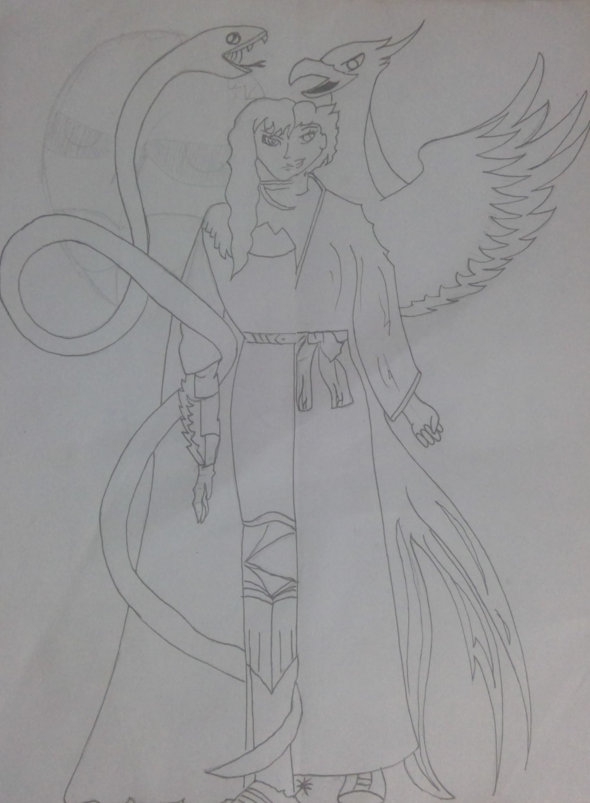
22Capítulo 05
El Equilibrio del Aura
No existía registro alguno sobre su verdadero origen.
Algunos lo describían como un antiguo guerrero. Otros aseguraban que había gobernado un reino olvidado. También estaban quienes afirmaban que era un viajero procedente de una tierra donde la nieve nunca dejaba de caer.
Ninguna descripción de su vestimenta resultó tan relevante como el efecto que producía su presencia. Las crónicas coinciden en que, antes incluso de pronunciar una palabra, el ambiente parecía transformarse a su alrededor.
Su propósito consistía en reunirse con cada uno de ellos para comprender la naturaleza de sus habilidades. El primero en presentarse fue Damian.
23La tensión entre ambos era evidente.
Sin pronunciar una sola palabra, Damian reveló su nuevo poder. No era una habilidad común; era una manifestación nacida de la región más oscura de su alma, alimentada durante años por el resentimiento y la ira.
El misterioso hombre observó aquella energía con absoluta atención.
Comprendió que Damian se había vuelto más fuerte. Su poder ya no era una simple explosión de emociones descontroladas; había adquirido forma, estructura y voluntad propia. La maldición también había evolucionado.
24Durante unos segundos sostuvo su mirada.
Y, por primera vez en mucho tiempo, consiguió conectar con él.
No observó únicamente el poder que emanaba de su aura.
Observó también el origen de aquel poder.
Comprendió el dolor que habitaba en su memoria y descubrió que ambos compartían una herida semejante. Él también había conocido la desesperación.
25Se preguntó qué habría sido de su propia vida si nunca hubiera podido volver a conversar con su madre o con su familia; si todas las llamadas que intentó realizar nunca hubieran salido realmente, o si aquellas dirigidas hacia él nunca hubieran llegado a su destino; si hubiese querido escapar de aquella tortura y no hubiera encontrado ninguna salida.
Entonces comprendió que la ira de Damian nunca había sido el verdadero problema.
Había sido únicamente la consecuencia.
Por primera vez entendió la verdadera dimensión del resentimiento que consumía a aquel joven.
26Y llegó a una conclusión.
Todo poder nacido del resentimiento debía poseer un equivalente nacido de la esperanza.
Toda manifestación de la maldición debía conservar, en algún lugar de la memoria, un recuerdo capaz de devolver el equilibrio al aura de su portador.
Después de un largo silencio, el misterioso hombre habló.
—Aún posees otro poder —dijo con serenidad—. Pero nunca nacerá de tu ira. Solo responderá al recuerdo más feliz que conserves.
27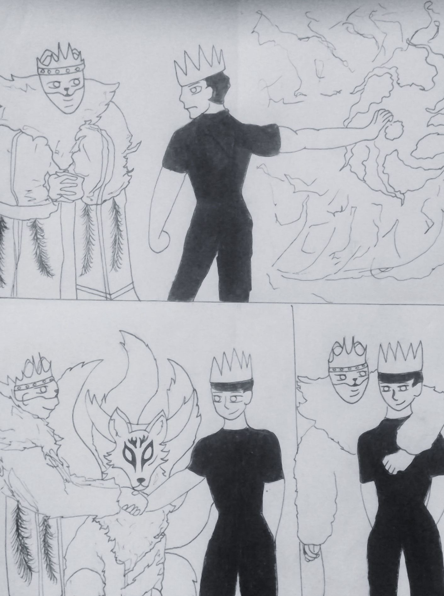
28Aquellas palabras rompieron un silencio que llevaba años habitando en el interior de Damian.
Le resultaba difícil imaginar la felicidad. Le costaba verse sonriendo o aceptar que tenía derecho a experimentar aquel sentimiento. Durante demasiado tiempo creyó que la paz pertenecía únicamente a los demás.
Sin embargo, mientras permanecía frente a aquel hombre, comprendió algo inesperado.
Su poder nunca había provenido únicamente del sufrimiento.
También nacía de su aura.
29Y el aura respondía a la memoria.
Durante unos instantes experimentó un bienestar que creía imposible. La claridad que acompañaba aquella sensación disipó la niebla de sus recuerdos. Entonces entendió por qué la presencia de aquel hombre le resultaba tan familiar.
Ya se habían encontrado antes.
No era un desconocido.
Era parte de su familia.
En ese instante, los recuerdos comenzaron a adquirir un nuevo significado. El linaje de su madre nunca había sido una historia olvidada, sino una herencia que él no había comprendido. Los verdaderos herederos del norte siempre habían permanecido allí, ocultos bajo el peso de la maldición y el paso del tiempo. No eran como él los había imaginado.
Las leyendas habían cambiado el rostro de los herederos, pero no pudieron alterar su linaje. Lo que el mundo recordaba del norte era solo una imagen; su verdadero origen permanecía intacto. Por primera vez, Damian dejó de sentirse un extraño dentro de su propia historia. No era él quien nunca había encajado. Eran los relatos los que nunca habían contado la verdad.
30Por primera vez dejó de ver a su familia como el origen de su sufrimiento. Entendió que ellos también habían cargado con la misma pérdida, el mismo dolor y el mismo destino. La maldición nunca había distinguido entre unos y otros; todos habían sido sus víctimas.
Ya no estaban separados por el pasado.
Los unía el mismo destino.
La maldición nunca destruyó a su familia. Solo consiguió que dejaran de reconocerse.
31Fue así como descubrió uno de los principios fundamentales para romper la maldición.
La familia no era únicamente un vínculo de sangre.
Era el mecanismo mediante el cual el aura podía reconstruirse.
Un solo individuo difícilmente podría vencer a todos sus enemigos.
Pero una familia unida...
Quizá sí.
32Entonces los recuerdos comenzaron a regresar.
No pertenecían a un pasado lejano.
Seguían vivos.
Las risas, las conversaciones, las complicidades y los momentos compartidos nunca habían desaparecido.
Simplemente permanecían ocultos bajo el peso del resentimiento.
Y Damian comprendió que su verdadera familia materna no había dejado de esperarlo.
Solo debía aceptarla.
33El hombre misterioso permaneció en silencio. Durante muchos años había cargado con la responsabilidad de preservar el legado del norte. Había creído que su deber estaba ligado a una historia, a un linaje y a un destino que debía cumplirse.
Pero en ese instante comprendió que había estado buscando la respuesta equivocada.
El norte nunca había sobrevivido por sus coronas ni por sus gobernantes.
Había sobrevivido porque, incluso en los momentos más oscuros, existía un vínculo que no podía ser reemplazado.
La familia.
34Una familia no existía para competir entre sí por un lugar más alto. Cada miembro tenía su propio valor, su propia responsabilidad y su propio camino.
El poder de uno no disminuía al otro.
Al contrario, era la unión de todos lo que permitía que el norte permaneciera en pie.
Entonces comprendió que la verdadera amenaza de la maldición nunca había sido la pérdida del poder.
Había sido hacerles olvidar que su fuerza nunca perteneció a un solo individuo.
35Cada miembro del norte era una parte de un mismo legado. Separados, podían ser derrotados uno por uno. Unidos, representaban una fuerza que ningún enemigo podía atravesar.
La maldición no buscó destruir sus tierras.
Buscó dividir a quienes habían nacido para protegerlas juntos.
37Capítulo 06
El Color de los Recuerdos
Aquellos recuerdos hicieron demasiado ruido en la mente de aquellos dos jóvenes.
El primero en emerger pertenecía a Damian.
No fue una batalla.
No fue una victoria.
No fue ningún entrenamiento.
Fue un cielo.
Un cielo celeste, limpio e inmenso, exactamente igual al que contemplaba cuando apenas era un niño en el jardín de infancia.
38Bajo aquel cielo descubrió por primera vez una emoción que no volvería a experimentar con la misma inocencia: el primer amor.
No era un acontecimiento extraordinario para la historia del mundo.
Precisamente por eso poseía un valor incalculable.
En aquel instante no existían ambiciones, responsabilidades ni promesas imposibles. Solo la serenidad de un niño que todavía desconocía la existencia del odio, el rencor y la pérdida.
El paso del tiempo había transformado casi todos sus recuerdos.
Pero no ese.
39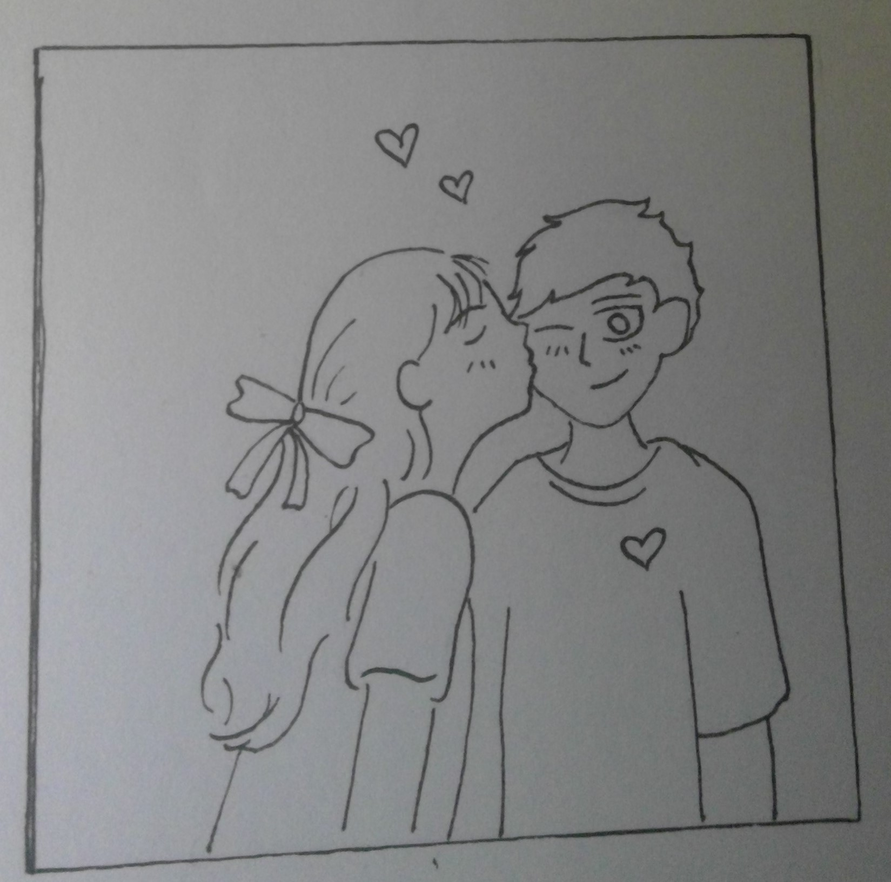
40Aquel momento había permanecido intacto, resguardado en el lugar más profundo de su memoria, como si incluso los años hubieran sido incapaces de alcanzarlo.
Los registros emocionales revelaban un fenómeno inesperado.
La maldición era incapaz de alterar los recuerdos nacidos antes de su propia existencia. Mientras Damian observaba aquella escena, la oscuridad disminuía y dejaba de expandirse.
Para el hombre misterioso, el recuerdo también lo condujo a su infancia.
Entre decenas de momentos que habían marcado su vida, su memoria eligió uno sorprendentemente sencillo.
41Recordó a una niña que, sin proponérselo, había ocupado un lugar especial en su corazón. Nunca existieron promesas, confesiones ni grandes gestos. Ella simplemente siguió su propio camino, mientras él aprendía, con la naturalidad propia de la niñez, que no todos los sentimientos encuentran un destino compartido.
Lejos de convertirse en una herida, aquel recuerdo terminó transformándose en una de las experiencias más valiosas de su vida.
Porque no conservó la tristeza.
Conservó la capacidad de admirar, de ilusionarse y de descubrir la belleza que existe en querer a alguien sin esperar nada a cambio.
42Con el paso de los años, el destino volvió a sorprenderlo.
Cuando ya había dejado de mirar hacia el pasado, apareció una joven cuya presencia le transmitía aquella misma paz que alguna vez había sentido siendo niño. No era la misma persona, ni pretendía ocupar su lugar. Era alguien completamente diferente, con su propia historia, sus propias virtudes y una forma de verlo que él no había imaginado.
Por primera vez comprendió lo que significaba ser elegido.
43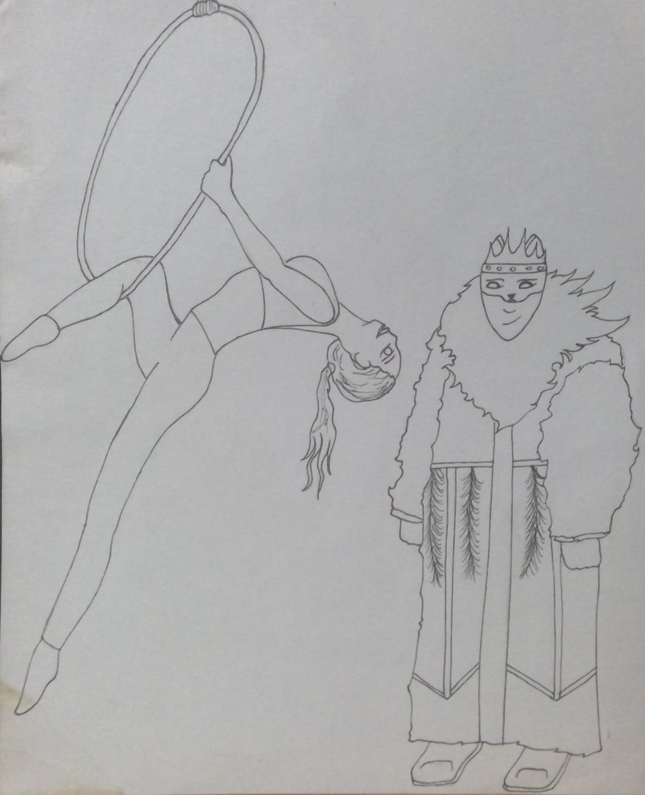
44Aquella joven veía en él algo que él mismo nunca había logrado descubrir. Admiraba su calma, su manera de proteger a los demás y la serenidad con la que enfrentaba incluso los momentos más difíciles. Sin proponérselo, le recordó que algunas personas llegan a nuestra vida no para reemplazar los recuerdos del pasado, sino para demostrar que el corazón siempre conserva la capacidad de escribir nuevas historias.
Mientras aquel recuerdo recorría su mente, la maldición también retrocedía.
No porque el pasado hubiera cambiado.
Sino porque la memoria había decidido conservar aquello que realmente importaba.
← Volver al índice 45Capítulo 07
El sello
El poder más peligroso no siempre es el que está creciendo. A veces es el que lleva toda una vida contenido.
El bosque permanecía inmóvil.
Ni el viento se atrevía a romper el silencio.
En medio del claro esperaba un hombre vestido con la elegancia de la realeza. Su postura era impecable. Su mirada, serena. Había recorrido incontables reinos buscando a personas extraordinarias, pero aquella reunión despertaba en él una curiosidad diferente.
Entonces el agua comenzó a moverse.
Desde sus profundidades emergió una unicornia montada sobre una inmensa tabla de surf. No cabalgaba las olas; las dirigía. Cada giro despertaba corrientes antiguas que llevaban siglos dormidas bajo el océano.
46Sobre las copas de los árboles descendió un búho.
Las corrientes cambiaban de dirección con un simple movimiento de sus plumas.
Entre la maleza apareció un lobo.
Su andar producía un sonido metálico.
Cada pisada hacía vibrar la tierra como si enormes vetas de hierro respondieran a su llamado.
Finalmente apareció un ciervo.
No corría.
No hacía falta.
Donde apoyaba sus patas brotaban raíces, flores y vida.
La tierra despertaba para recibirlo.
Solo entonces apareció ella.
Vestía ropa sencilla.
Sin joyas.
Sin armaduras.
Sin corona.
47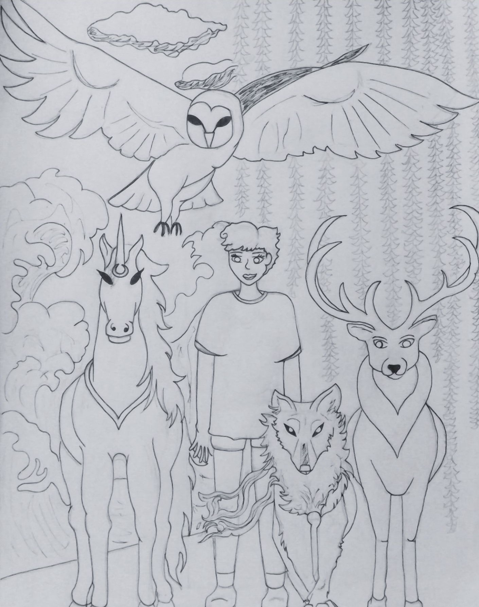
48Mientras el hombre misterioso irradiaba la presencia de la realeza, aquella mujer caminaba como alguien que solo deseaba sentir el viento sobre su rostro.
Era libre.
Y esa libertad resultaba mucho más imponente que cualquier símbolo de poder.
Los cuatro guardianes caminaron detrás de ella.
No como soldados.
Como familia.
El hombre sonrió.
—Así que eres tú...
Ella inclinó ligeramente la cabeza.
—Me dijeron que querías conocer mis habilidades.
Su mirada recorrió lentamente a los cuatro animales.
—La visión del unicornio...
La sabiduría del búho...
El espíritu indómito del lobo...
Y la quietud del ciervo...
49Guardó silencio unos segundos.
—Pocas personas consiguen reunir cuatro virtudes sin que una destruya a las demás.
Ella respondió con absoluta serenidad.
—La paciencia les da un mismo camino.
Aquella respuesta hizo que el hombre permaneciera inmóvil.
Porque él no estaba viendo lo mismo que todos.
No veía cuatro guardianes.
Veía cuatro reinos.
El Reino del Unicornio
Cuatrocientos años atrás, la magia del mundo desapareció.
No porque la magia dejara de existir.
Sino porque los dos últimos unicornios permanecían encadenados.
Reyes.
Magos.
Conquistadores.
Nadie logró encontrarlos.
50Hasta que una muchacha desconocida rompió las cadenas sin desenvainar una espada.
No conquistó.
No destruyó.
Liberó.
Desde aquel día los océanos volvieron a respirar.
Por eso la unicornia ya no se apartaba de ella.
No la seguía porque fuera una reina.
La seguía porque le había devuelto la libertad.
Y el hombre comprendió algo más.
Los unicornios nunca habían conocido la oscuridad.
Nunca habían sentido odio.
Jamás habían deseado venganza.
Su verdadero poder seguía dormido.
El Reino del Lobo
El lobo era distinto.
Había nacido para la guerra.
La ferocidad pertenecía a su naturaleza.
No a ella.
51Sin embargo...
Bastó una caricia.
La inmensa bestia cerró los ojos.
No existía cadena capaz de domesticar a un lobo.
Solo la confianza.
Entonces el hombre comprendió que aquella mujer no imponía obediencia.
Inspiraba paz.
Incluso la violencia elegía descansar junto a ella.
El Reino del Búho
El búho no había aprendido leyendo.
Había aprendido sobreviviendo.
Cada traición.
Cada pérdida.
Cada cicatriz.
Se convirtió en sabiduría.
Por eso el viento nunca abandonaba sus alas.
El aire era invisible.
Igual que el verdadero conocimiento.
52El Reino del Ciervo
Donde caminaba el ciervo...
La tierra florecía.
No era magia.
Era esperanza.
Una esperanza que sobrevivía incluso después del dolor.
Por eso los bosques lo reconocían.
Porque todavía existía alguien capaz de sonreír sin olvidar las heridas.
El hombre permaneció en silencio.
Agua.
Aire.
Metal.
Tierra.
Cuatro reinos.
Cuatro guardianes.
Cuatro virtudes.
53Y entonces...
Lo vio.
Más allá de toda aquella luz.
Existía otra presencia.
No pertenecía al océano.
Ni al viento.
Ni al metal.
Ni a la tierra.
Era una sombra.
Pequeña.
Silenciosa.
Dormida.
"Ahí está..."
"No es paciencia."
"No es equilibrio."
"Es algo mucho más antiguo."
54Durante un instante una oscuridad apenas perceptible rodeó el aura de la mujer.
Nadie más la vio.
Pero él sí.
Comprendió inmediatamente su significado.
Mientras otros guerreros obtenían fuerza mediante la ira...
Aquella mujer ocultaba un poder que solo despertaría cuando su corazón reuniera suficiente oscuridad.
El hombre bajó la mirada.
Durante un instante permaneció en silencio, observando a aquella mujer que llevaba toda una vida conteniendo una fuerza capaz de cambiar el mundo.
Entonces se preguntó...
¿Qué hace realmente fuerte a una persona: liberar su poder... o decidir no usarlo?
55Porque entendió la verdad.
La paciencia nunca había sido una virtud.
Era el sello.
← Volver al índice 56Capítulo 08
El Nuevo Reino de Fuego
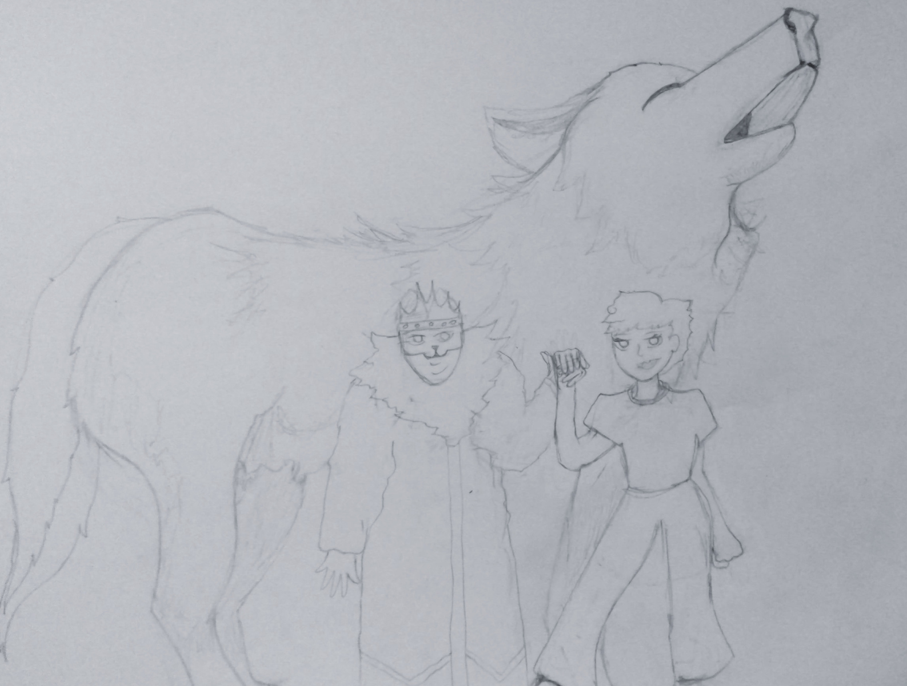
El hombre misterioso permaneció inmóvil.
Durante unos segundos contempló a la mujer sin pronunciar una sola palabra. Después extendió lentamente su mano.
Ella comprendió el gesto.
Ambos unieron sus manos y cerraron los ojos. Ninguno intentó imponer su propia energía sobre la del otro. Por el contrario, permitieron que ambas auras encontraran un equilibrio natural.
57El bosque respondió antes que ellos.
Las hojas comenzaron a vibrar. El viento cambió de dirección y una presión desconocida recorrió la tierra.
Entonces apareció.
El lobo.
Su tamaño aumentó de forma desproporcionada. Sus patas parecían sostener una montaña y su cabeza alcanzó una altura cercana a la del árbol más antiguo y alto del bosque. Nunca antes aquel reino había manifestado semejante crecimiento.
No era únicamente un animal.
Era la representación física de un poder compartido.
58Durante un instante, el hombre creyó estar observando el porvenir.
Después dudó.
Tal vez aquello no pertenecía al futuro.
Tal vez ese reino ya había despertado con ellos.
Los dos permanecieron en silencio. Ninguno encontraba palabras suficientes para describir lo que acababan de provocar.
Aun así, el hombre seguía observando una pequeña anomalía.
Entre el brillo del aura de la joven persistía una diminuta sombra.
No parecía una herida.
Era una sombra.
59—Concéntrate en ella —dijo con calma el hombre.
La mujer se concentró.
Sin darse cuenta de cuánto tiempo había transcurrido, ambos descubrieron que el sol ya había desaparecido. La luna iluminaba ahora el bosque. Habían perdido completamente la noción de las horas.
Ella se sentó sobre la hierba.
Su respiración era pesada. El esfuerzo comenzaba a afectarla.
Sin embargo, cuando dirigió toda su atención hacia aquella pequeña mancha oscura, sintió una energía completamente distinta recorrer su cuerpo.
Era cálida.
No era fría.
Era antigua.
60Un destello atravesó el bosque.
Duró apenas un instante.
Fue suficiente.
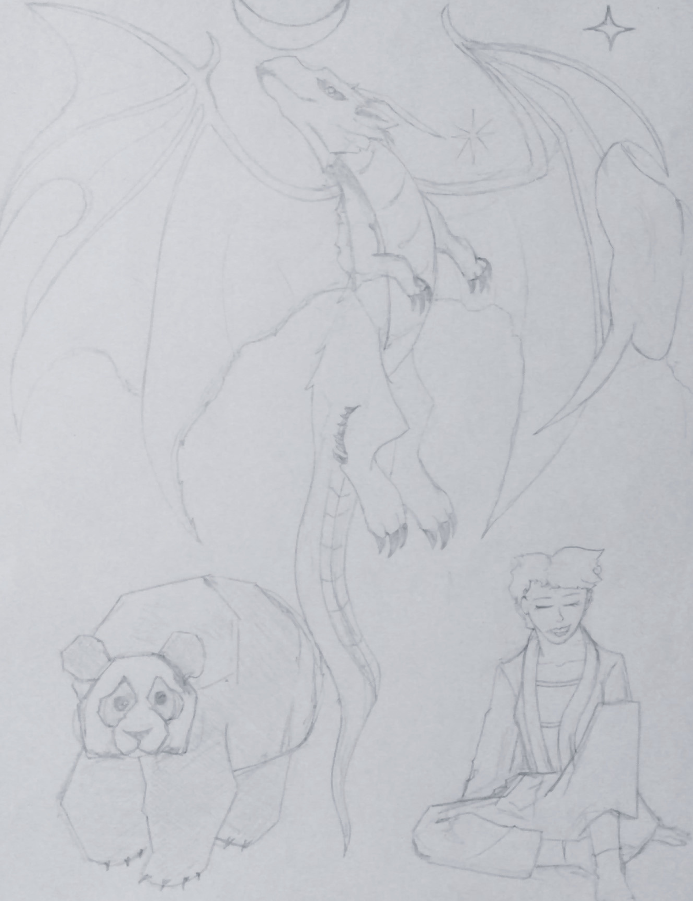
Desde aquella luz emergió un dragón que abrió lentamente sus alas sobre el cielo nocturno. Cada movimiento parecía incendiar el aire sin consumir un solo árbol.
El hombre retrocedió un paso.
El Reino del Fuego...
La seguía.
61No la dominaba.
No la consumía.
Simplemente caminaba junto a ella.
Aquello desafiaba todo cuanto conocía.
Hasta donde alcanzaban los antiguos registros, el fuego respondía únicamente a un único portador. Su último amo había perdido ese vínculo hacía mucho tiempo.
Entonces...
¿Cómo era posible?
Antes de encontrar una respuesta, una esfera dividida entre blanco y negro descendió lentamente desde el cielo.
Al tocar el suelo, apareció algo inesperado, un panda.
62Su sola presencia disipó la tensión del bosque.
El hombre lo reconoció de inmediato.
Era el antiguo protector contra las maldiciones, las cadenas invisibles y contra las energías destinadas a quebrar el espíritu de quienes caminaban solos.
Ahora comprendía todavía menos.
Frente a él se encontraba una mujer seguida por 4 animales totalmente diferentes y además el dragón y el panda.
Fuerzas que durante siglos habían permanecido separadas.
Fuerzas que no aceptaban compartir un mismo camino.
Y, sin embargo...
63Allí estaban.
Ninguna luchaba por imponerse sobre la otra.
Todas parecían haber elegido caminar a su lado.
Fue entonces cuando una vieja enseñanza regresó a su memoria.
No todos los sucesores nacían por sangre.
Algunos eran reconocidos por aquello que habitaba en su interior.
No por el poder que poseían...
Sino por el equilibrio que eran capaces de conservar entre poderes destinados a destruirse.
El hombre ya no volvió a mirar a la joven de la misma manera.
64También comprendió por qué aquella mujer jamás había temido enfrentarse a la Serpiente.
Quien conoce la esencia del Dragón no ignora la forma en que una serpiente piensa, se mueve y ataca.
Era conocimiento, uno muy antiguo.
Sin embargo, mientras el dragón desaparecía lentamente, el hombre descubrió que la pequeña sombra seguía allí.
Había crecido.
La mujer comenzó a elevarse unos centímetros sobre el suelo.
Abrió los ojos y habló con una serenidad que resultaba imposible de fingir.
—Lo que estás viendo es el poder destructivo que permanece sellado dentro de mí. Solo despertará cuando aparezca el depredador.
65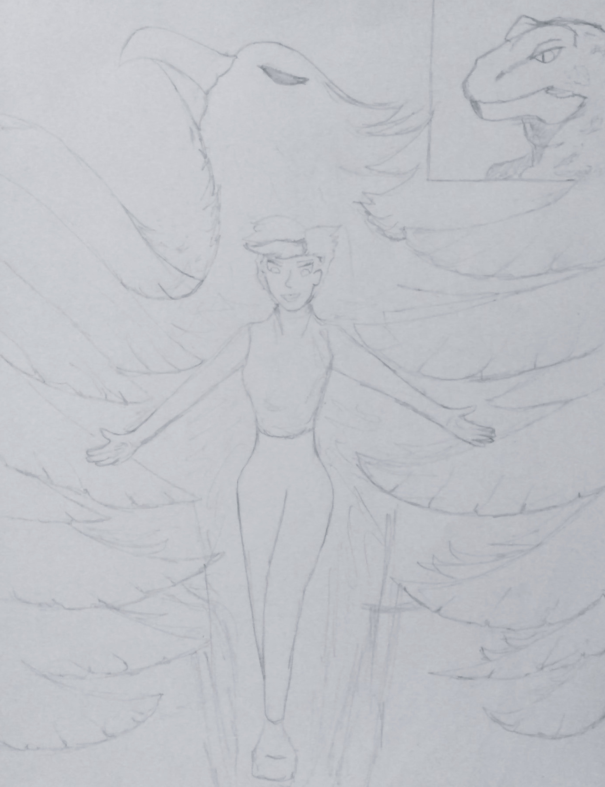
66El bosque volvió a quedar en silencio.
Por primera vez, el hombre sospechó que aquel sello no había sido impuesto por un enemigo.
Tal vez...
Había sido creado por la propia portadora.
Quiso preguntar por qué le mostraba aquel secreto precisamente esa noche.
Pero ella respondió antes de que pudiera hacerlo.
—Este poder llama la atención de los reptiles.
Después descendió lentamente.
El agotamiento terminó por vencerla.
67Se quedó dormida bajo la luz de la luna mientras el hombre permanecía despierto, observando el cielo e intentando ordenar todo cuanto acababa de descubrir.
Creía haber presenciado el despertar de un nuevo Reino del Fuego. Un reino que no perseguía enemigos ni ansiaba poder. Permanecía junto a su portadora, esperando el único momento para el que había sido creado: impedir que el mundo fuera consumido por la serpiente.
Porque cuando un poder ancestral despierta...
Sus ecos rara vez permanecen en un solo corazón.
Esa misma noche, muy lejos de aquel bosque, otro descendiente comenzó a soñar.
68Los Sueños de Damian
Esa misma noche, Damian volvió a recorrer el jardín de infancia que tantas veces había aparecido en sus recuerdos.
Sin embargo, algo había cambiado.
Él ya no era un niño.
Y aquella joven tampoco lo era.
No dijeron una sola palabra.
Ella sostenía entre sus manos un ave.
No era un ave cualquiera.
—Es un cuervo.
Damian comprendió que aquel animal había sido llevado hasta él.
Era un regalo.
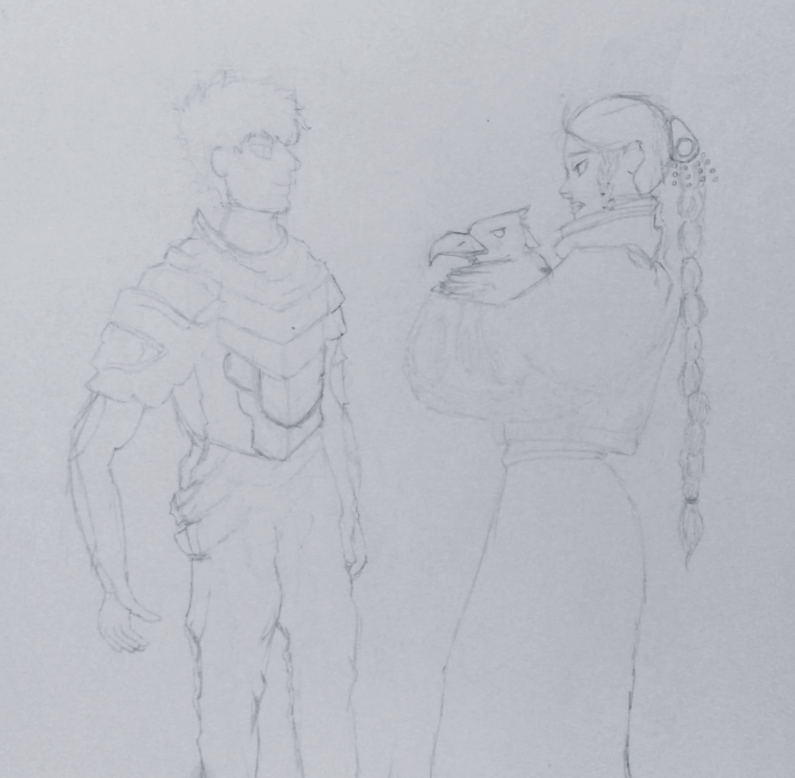
Su plumaje negro reflejaba la luz con una intensidad imposible, como si la noche entera hubiera decidido habitar entre sus plumas.
Nunca antes había visto un cuervo semejante.
Sabía que los cuervos eran considerados una de las criaturas más inteligentes sobre la faz de la Tierra.
Aun así, aquel parecía poseer una sabiduría mucho más antigua.
Permanecía completamente inmóvil entre las manos de la joven, observándolo como si lo hubiera estado esperando desde hacía mucho tiempo.
Damian extendió lentamente ambas manos.
Aceptó el regalo.
Entonces el sueño cambió.
Ahora contemplaba un lobo.
No era un lobo común.
Permanecía inmóvil, como si hubiera estado dormido durante siglos.
De pronto abrió los ojos.
No abrió dos.
Abrió siete.
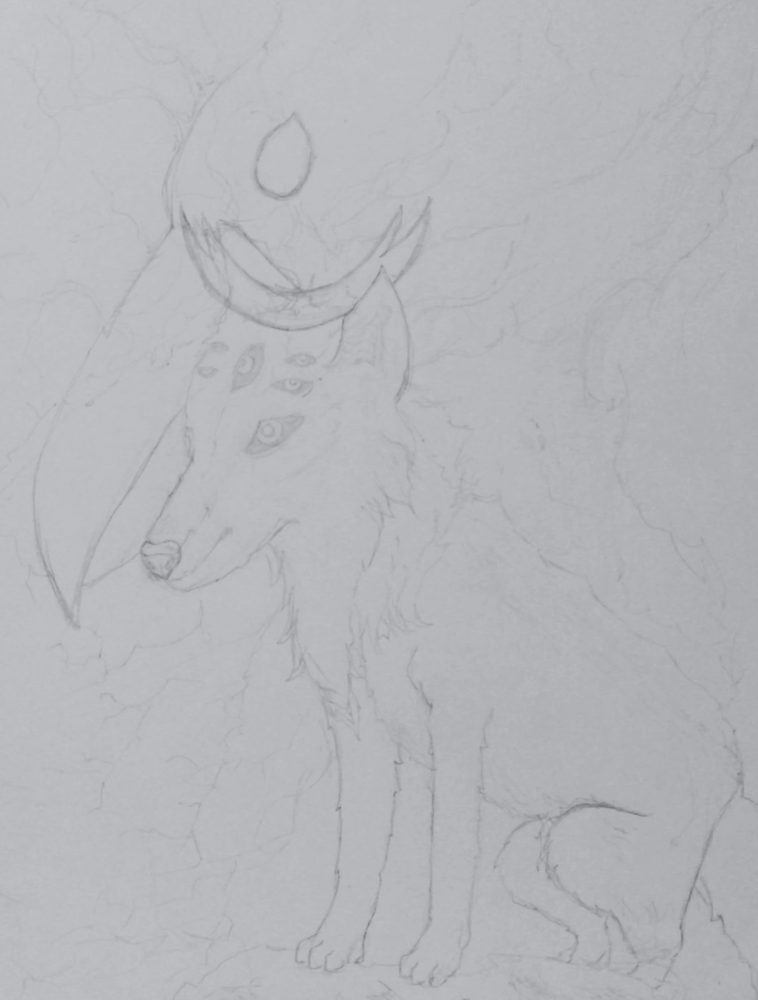
En su mirada descansaban la memoria de la Tierra, la fuerza del Reino del Norte y el espíritu del cuervo, como si ambos hubieran decidido caminar juntos a partir de aquella noche.
El último sueño resultó todavía más extraño.
Ante él apareció un lobo gigantesco.
Su tamaño superaba cualquier cosa que hubiera imaginado.
Y sobre su lomo viajaba una figura imposible de creer.
Era Spider-Man.
Simplemente viajaba junto al lobo, como si ambos hubieran aceptado recorrer el mismo camino.
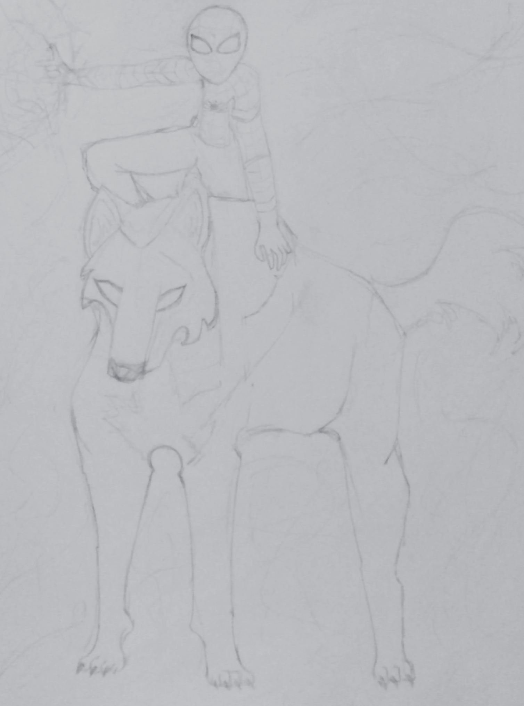
Cuando Damian despertó, recordaba cada detalle de aquellos sueños.
Una extraña sensación permanecía en su interior.
Como si una parte de ellos no hubiera sido un sueño... sino una premonición.
Al despertar, descubrió que los sueños habían terminado, pero las preguntas apenas comenzaban
¿Quién era realmente aquella joven?
¿Y si aquella joven también formaba parte de su futuro?
¿Por qué el cuervo había sido entregado precisamente a él?
¿Y si aquello no había sido un sueño?
¿Qué vínculo unía a Spider-Man con el lobo?
¿Era Spider-Man quien guiaba al lobo... o era el lobo quien guiaba a Spider-Man?
¿Qué intentaban mostrarle aquellos sueños?
Capítulo 10
La Colección de Krystal
Aquella misma noche, mientras Damian era visitado por sueños que parecían desafiar el tiempo, su madre también soñó.
Frente a ella apareció un enorme castillo.
La luna iluminaba cada una de sus torres, y aunque estaba completamente sola, una extraña sensación comenzó a recorrer su cuerpo.
Conocía aquel lugar.
Estaba segura de haber estado allí antes.
Se aproximó lentamente.
Las enormes puertas comenzaron a abrirse por sí solas, como si el castillo hubiera estado esperándola desde hacía mucho tiempo.
Nadie salió a recibirla.
Nadie intentó detenerla.
Solo existía un profundo silencio.
78Avanzó por interminables pasillos hasta llegar a una habitación distinta a todas las demás.
Las paredes estaban cubiertas por enormes estanterías.
Sobre cada una descansaban decenas de muñecos de colección.
Todos eran diferentes.
Cada uno llevaba una pequeña placa con un nombre y estaban amarrados por cadenas.
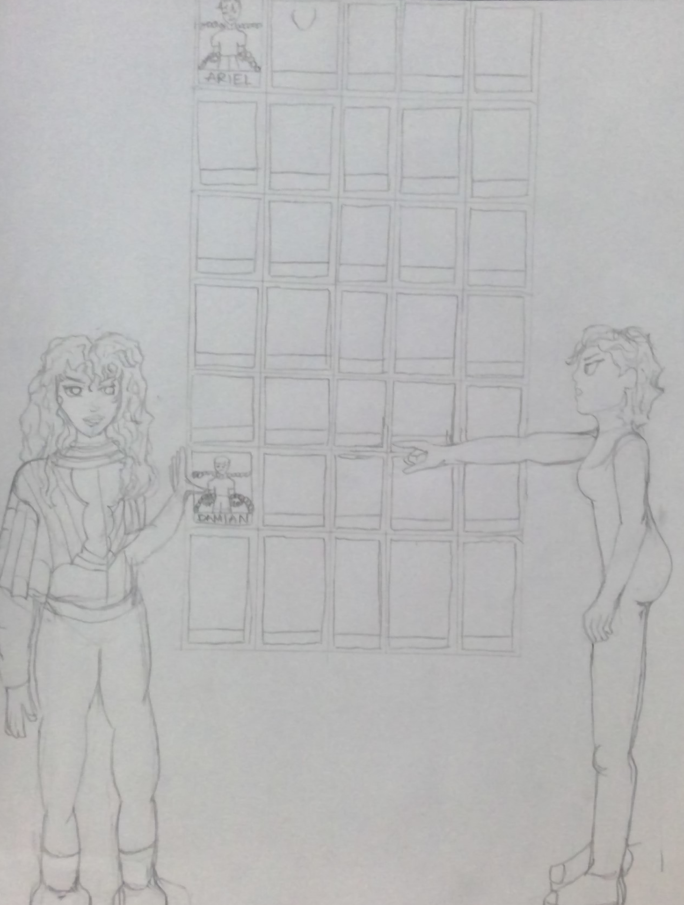
79La mujer comenzó a recorrerlos uno por uno.
Algunos le resultaban completamente desconocidos.
Otros despertaban una extraña sensación de tristeza.
Entonces sus ojos se detuvieron.
Damian.
Su respiración se detuvo por un instante.
Aquel muñeco llevaba el nombre de su hijo.
Antes de que pudiera tomarlo, otra mano se apoyó lentamente sobre la caja.
—Veo que encontraste mi hermosa colección de muñecos.
La voz era inconfundible.
Krystal.
La mujer levantó lentamente la mirada.
No sentía miedo.
Solo una profunda ira.
80—¿Esta es tu colección?
Guardó silencio durante unos segundos mientras observaba el castillo.
Entonces comprendió.
—...Este castillo...
Volvió a mirar a Krystal.
—Es tu casa.
Por primera vez, todas las piezas comenzaron a encajar.
El Castillo de la Luna siempre le había pertenecido a la Serpiente.
Su mirada volvió al muñeco.
—Ese...
¿Ese es Damian?
¿Mi hijo?
Krystal sonrió.
—Sí.
81La madre sintió cómo la rabia recorría todo su cuerpo.
—¿Por qué haces esto?
Krystal acarició lentamente la caja.
—No deberías molestarte.
Volvió a sonreír.
—Damian es el muñeco más hermoso de toda mi colección.
Hizo una breve pausa.
—Y también el más obediente.
La madre permanecía inmóvil.
Krystal continuó hablando con la misma tranquilidad.
—Deberías sentirte orgullosa.
Míralo.
Jamás se rebela.
Jamás cuestiona.
Siempre termina exactamente donde yo necesito que esté.
82A diferencia de ti...
Él sí disfrutará de los frutos de todo esto.
Aunque no de todos.
Después de todo...
Ahora no es más que un simple muñeco.
La madre bajó lentamente la mirada.
Las respuestas comenzaron a llegar una detrás de otra.
Entonces levantó nuevamente la cabeza.
—Ahora lo entiendo.
Krystal no respondió.
—Nunca pensaste convertir a Damian en rey.
Querías que su padre ocupara ese lugar...
Y que, mientras él reinara, le arrebatara todo aquello que le pertenecía a mi hijo.
Por eso nunca me permitiste acercarme a él.
Siempre procuraste que permaneciera junto a su padre.
83Krystal volvió a sonreír.
—Exactamente.
Caminó lentamente alrededor de la habitación.
—Su padre es increíblemente fácil de manipular.
Me ha costado muy poco conseguir que haga exactamente lo que necesito.
Y mientras él siga moviéndose...
Damian también lo hará.
La madre no apartó la mirada.
Krystal continuó.
—Aunque sería injusto atribuirle todo el mérito.
No ha sido el único.
Algunos miembros de su propia familia también han contribuido a todo esto, a mantenerme exactamente donde quiero estar.
84Una nueva duda comenzó a tomar forma en la mente de la madre.
¿Acaso aquellas personas también servían a Krystal?
El silencio volvió a llenar la habitación.
Entonces la madre habló.
—Ya sé cómo lo hiciste.
Krystal arqueó ligeramente una ceja.
—Con MK.
La sonrisa de Krystal no desapareció.
—Veo que por fin lo descubriste.
La madre apretó los puños.
Krystal respondió con absoluta tranquilidad.
—No debería sorprenderte.
MK hace que trabajen para mí...
Sin darse cuenta.
85Después la observó fijamente.
—Tú siempre fuiste un problema Gloria, le dijo a la madre.
Nunca logré controlarte.
Nunca logré hacer que pensaras como los demás.
Por eso has sufrido tanto.
La madre dio un paso al frente.
—Vas a pagar por todo esto.
Krystal soltó una leve risa.
—¿Ah, sí?
Su sonrisa se hizo todavía más amplia.
—¿Y cómo piensas hacerlo?
Hizo una breve pausa antes de continuar.
—Tu propio hijo ni siquiera te habla.
86Krystal sonrió lentamente.
—Y aunque algún día decida escucharte...
—Yo estaré ahí.
—Cada palabra que le digas, cada recuerdo que intentes devolverle, cada advertencia que quieras hacerle...
—Yo puedo distorsionarlo todo.
—Puedo hacer que dude de sus propios recuerdos.
—Puedo hacer que cuestione tus palabras antes incluso de comprenderlas.
Se acercó lentamente a la caja donde descansaba Damian.
—Si tú le dices por ejemplo, que lo alejé de ti...
—Yo le haré creer que tú fuiste quien decidió abandonarlo.
87—Y cuando intente recordar...
—Yo le diré que estás mintiendo.
—Ni siquiera sabrá qué versión de la historia es verdadera.
—Y él me creerá a mí.
Krystal levantó la mirada.
—Porque yo puedo verlo todos los días.
—Tú no.
—¿Qué vas a hacer?
—¿Contarle todo lo que acabo de decirte?
Por primera vez desde que había entrado en el Castillo de la Luna, la madre sonrió.
No era una sonrisa de alegría.
Era la sonrisa de quien acababa de comprender que la verdad ya no podía volver a ocultarse.
88—No será necesario.
Krystal dejó de sonreír por un instante.
—Porque acabas de hacerlo tú.
Krystal simplemente le dio la espalda.
Comenzó a alejarse.
No tenía intención de seguir hablando.
Fue entonces cuando ocurrió.
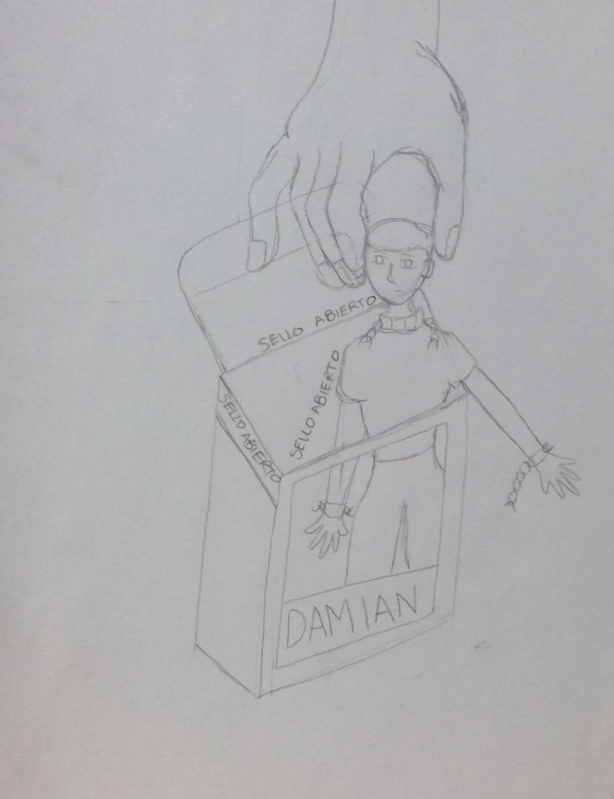
89La madre tomó entre sus manos la caja de Damian.
La levantó con todas sus fuerzas.
Y rompió las cadenas que mantenían unido al muñeco.
El sonido del metal recorrió todo el castillo.
No parecían romperse unas simples cadenas.
Parecía romperse un antiguo sello.
Krystal se detuvo.
Por primera vez...
La sonrisa desapareció.
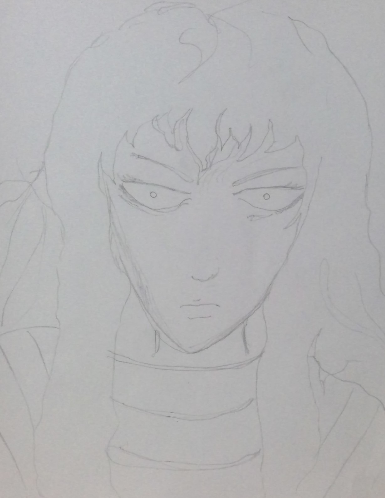
90Un frío imposible recorrió todo su cuerpo.
No pudo dar un paso más.
No pudo pronunciar una sola palabra.
Permanecía completamente inmóvil.
Como si su propio veneno hubiera terminado por convertirla en piedra.
La madre sostuvo el muñeco de Damian entre sus manos.
Las cadenas ya no existían.
La maldición había sido rota.
Entonces levantó la mirada.
Su voz resonó con fuerza por todo el salón.
—Y esto no es lo único que vas a ver.
Hoy voy a mostrarte tu futuro.
91Antes de que Krystal pudiera reaccionar, todo desapareció.
El castillo volvió a construirse delante de ambas.
Pero ya no era el mismo.
El gran salón permanecía intacto.
El Trono de Hierro seguía ocupando el centro de la habitación.
Solo existía una diferencia.
Ya no estaba vacío.
Un joven ocupaba aquel lugar.
Damian.
92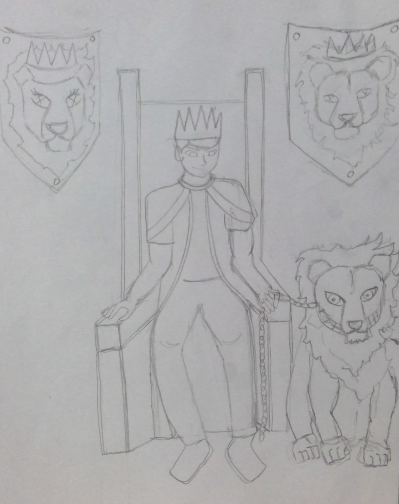
Sentado con absoluta serenidad.
Detrás de él descansaban dos enormes cabezas de león.
El rey y la reina de aquel castillo habían sido conquistados.
A los pies del trono...
Otro león permanecía sujeto por gruesas cadenas.
No rugía.
No luchaba.
No podía escapar.
Entonces Krystal levantó lentamente la mirada.
Reconoció aquel rostro.
El león era ella.
94Después de un tiempo observando a Krystal en shock, la madre habló con una serenidad que helaba el alma.
—Nunca fuiste un lobo.
—Nunca comprendiste el frío.
—Y jamás aprendiste a esperar el invierno.
El silencio volvió a apoderarse del castillo.
Krystal levantó lentamente la mirada.
A pesar de la visión...
Volvió a sonreír.
—No importa.
—Damian jamás dejará de seguirme.
95La madre permaneció completamente tranquila.
No respondió de inmediato.
—Te equivocas, Damian nunca fue obediente, tú confundiste su nobleza con obediencia, confundiste su respeto con sumisión y nunca comprendiste quién era realmente.
Miró por un instante el trono.
—Damian no nació para obedecer, nació para gobernar, por eso actúa como la realeza incluso cuando nadie lo está mirando, no porque tú lo hayas convertido en un muñeco... Sino porque esa siempre fue su naturaleza.
Krystal guardó silencio.
La madre continuó.
96—Nunca entendiste la diferencia, porque nunca perteneciste a un reino, solo ocupaste un lugar que no te correspondía.
El silencio volvió a llenar el castillo.
Entonces Krystal sonrió una vez más.
—Aun así...
—Él siempre volverá a mí.
La madre negó lentamente con la cabeza.
—No me preocupa.
Krystal frunció ligeramente el ceño, se preguntaba por qué.
—Es mi hijo, dijo la madre, y la conexión que compartimos no nació de tus cadenas, nació mucho antes de que tú aparecieras.
97La madre llevó lentamente una mano hasta su pecho.
—Durante nueve meses creció dentro de mí.
—Mi corazón fue el primer sonido que escuchó.
—Mi sangre fue su alimento.
—Mi cuerpo fue su primer hogar.
Sus ojos comenzaron a humedecerse.
—Después lo sostuve entre mis brazos.
—Lo alimenté.
—Lo protegí.
—Lo amé con todo lo que tenía.
98Respiró profundamente.
—Ese vínculo no puede comprarse ni compararse. Es único, como él y como su hermano.
—No puede manipularse.
—Y mucho menos romperse.
La voz de la madre se volvió firme.
—Cada vez que Damian se mire en un espejo...
—Recordará exactamente quién es.
—No porque yo se lo repita.
—Sino porque siempre lo supo.
99Krystal ya no sonreía.
La madre dio un último paso.
—Podrás engañar su mente durante un tiempo.
—Pero jamás podrás ocupar el lugar donde una madre permanece para siempre.
Entonces el castillo comenzó a desaparecer.
Las paredes se cubrieron de luz.
La luna dejó de existir.
Y Gloria abrió lentamente los ojos.
El sueño había terminado.
Pero por primera vez...
Ya no despertó con miedo.
Despertó sabiendo que la maldición que había mantenido a Damian encadenado finalmente había sido destruida y que, por primera vez, su destino ya no estaba sujeto por aquellas cadenas... ni lo estaría nunca más.
← Volver al índice 100Ecos de la memoria
Un gran poder conlleva una gran responsabilidad
Aquella noche, el hombre misterioso encontró descanso bajo la sombra de un antiguo árbol.
Las preguntas que habían ocupado su mente durante los últimos días pesaban más que el propio cansancio. Poco a poco, el murmullo del bosque se desvaneció y el sueño terminó por vencerlo.
Su respiración se hizo lenta.
Sus párpados permanecieron cerrados...
...pero algo ocurrió.
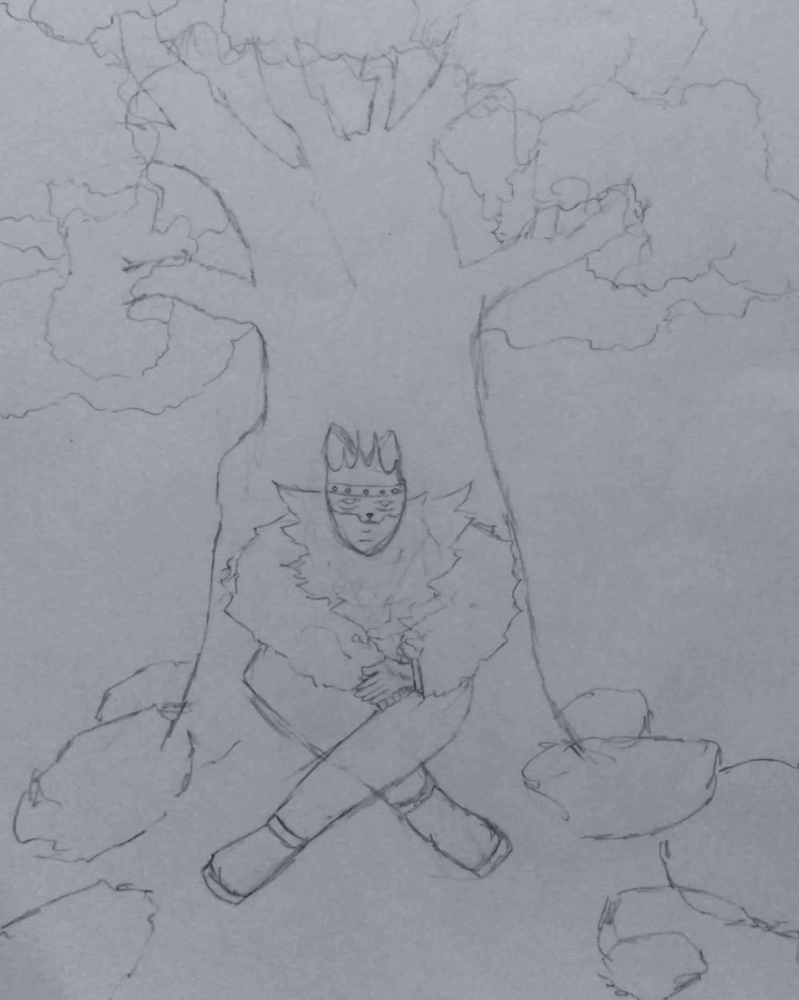
Su mente comenzó a viajar.
El mundo desapareció.
El aire dejó de existir.
Y un frío imposible envolvió todo a su alrededor.
Voces lejanas comenzaron a surgir desde la oscuridad.
No sabía de dónde provenían.
Cuando abrió los ojos...
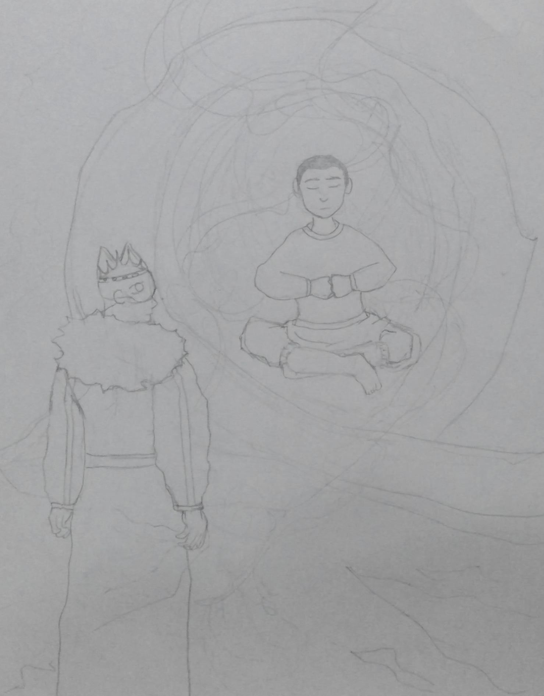
...ya no estaba en el bosque.
Frente a él se extendía un paisaje completamente cubierto de hielo. El viento soplaba con fuerza.
102Entonces la vio.
Una pequeña figura se encontraba a lo lejos.
Era Dominic.
—¿Dominic...?
El hombre dio unos pasos.
Algo no tenía sentido.
Mientras él llevaba un grueso abrigo para protegerse del frío...
...a Dominic parecía no molestarle en absoluto.
Fue entonces cuando lo notó.
Dominic no estaba de pie.
Flotaba.
Suspendido en el aire.
103Bajo él, una luz azul fluorescente se extendía mientras una luz recorría todo su cuerpo, iluminando el océano congelado.
Era un calamar gigante.
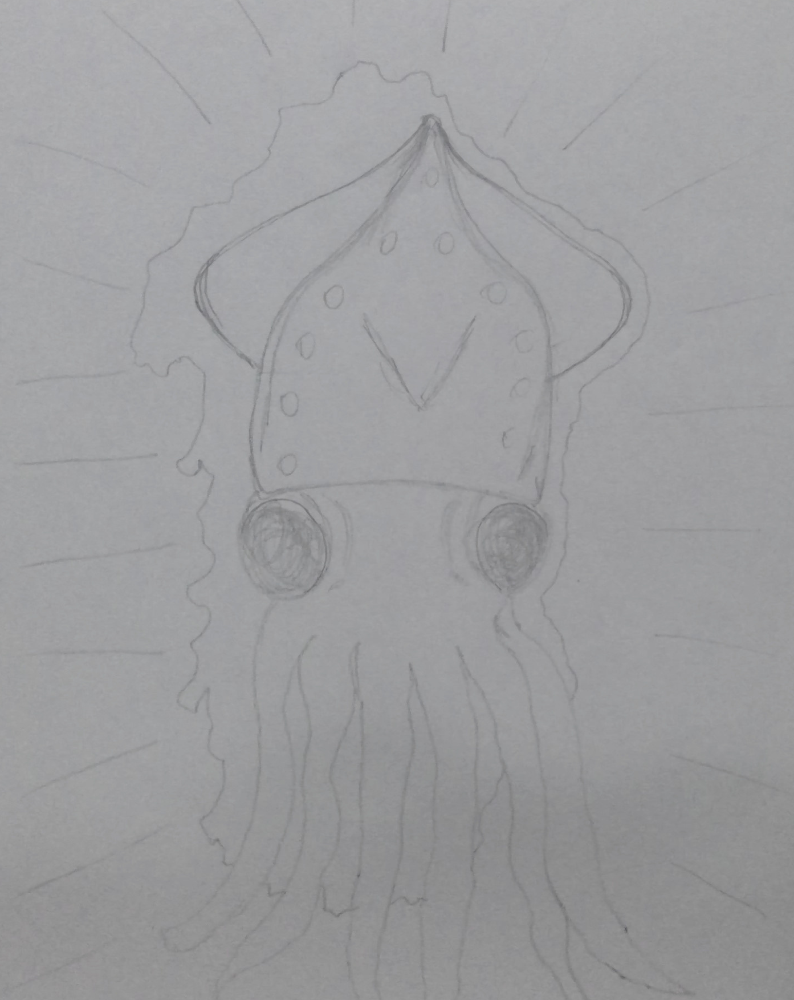
De pronto...
Un destello.
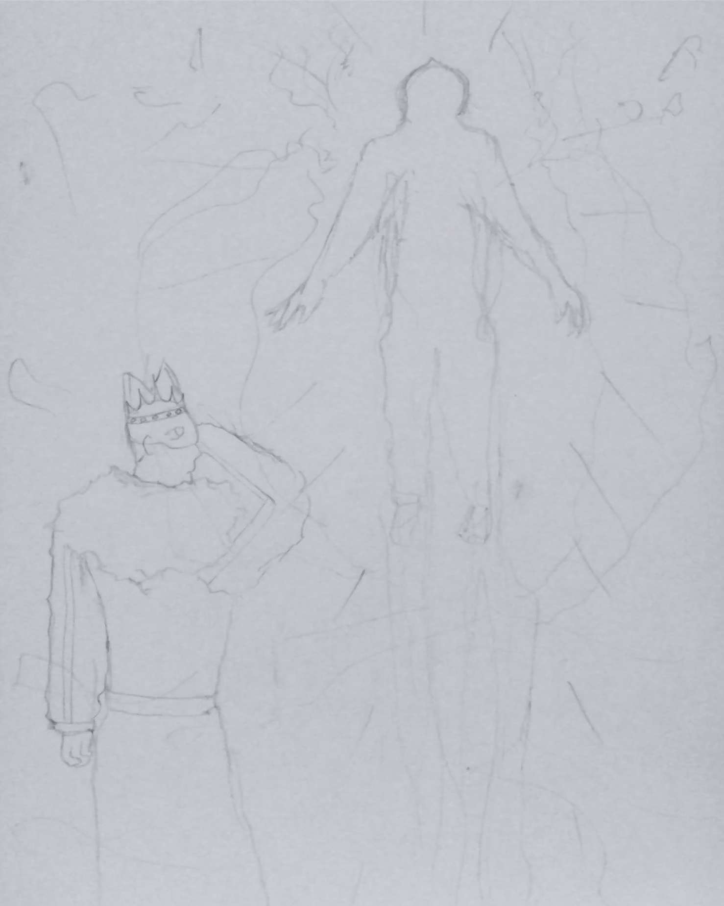
La luz envolvió por completo a Dominic.
Su brillo era tan intenso que el hombre tuvo que cubrirse el rostro con el brazo.
No podía ver.
Solo existía aquella inmensa luz.
Cuando consiguió abrir nuevamente los ojos...
Todo había cambiado.
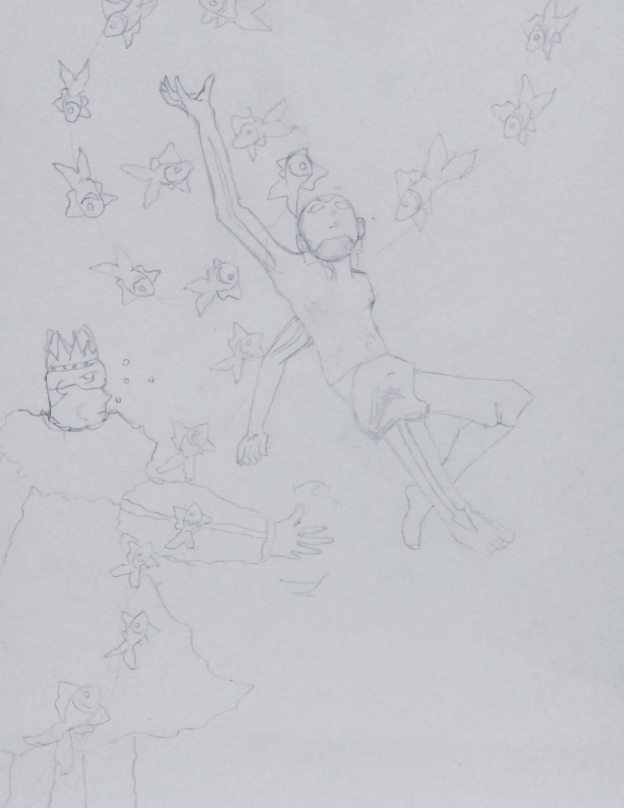
Ya no estaban sobre el hielo.
Estaban bajo el agua.
El hombre contuvo la respiración por instinto.
Miró desesperado a su alrededor.
Miles de peces nadaban en perfecta sincronía alrededor de Dominic.
No huían.
Lo obedecían.
Con movimientos precisos comenzaron a formar una figura.
Una enorme letra apareció frente a ellos.
G
La corriente seguía moviéndolos.
La letra permanecía perfecta.
106Fue entonces cuando el hombre comprendió lo imposible.
—¡Estamos bajo el agua!
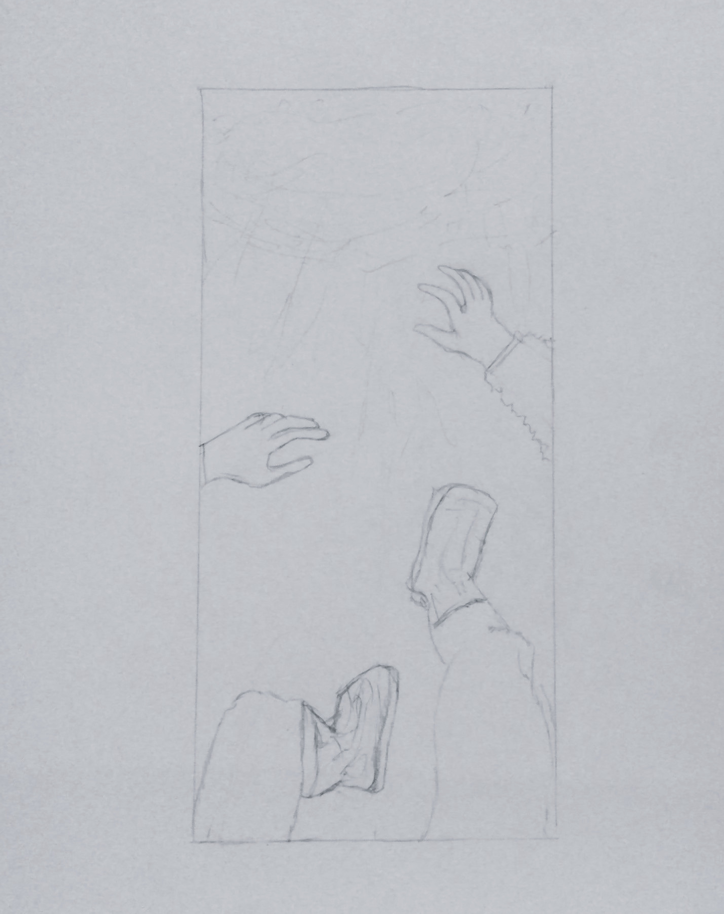
Sin pensarlo dos veces nadó hasta Dominic.
Lo sujetó con todas sus fuerzas.
Su cuerpo seguía envuelto por aquella extraña luminiscencia.
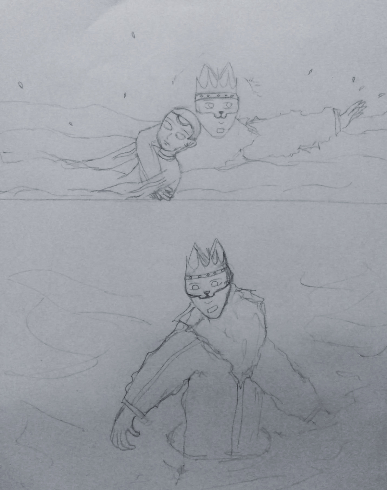
Intentó llevarlo hacia la superficie mientras una sola pregunta invadía su mente.
¿Cómo llegamos aquí?
Nadó con desesperación.
Cada brazada parecía interminable.
Hasta que finalmente atravesó lo que creyó era la superficie.
Tomó una gran bocanada de aire.
Pero al mirar sus brazos...
Dominic había desaparecido.
El corazón comenzó a acelerarse.
—¡Dominic!
108Entonces una voz rompió la calma.
Levantó lentamente la mirada.
El océano había desaparecido.
Frente a él solo quedaba una inmensa playa.
Sin una sola gota de agua.
A lo lejos estaba Dominic, sonriendo como si nada hubiera ocurrido.
Dominic lo llamaba por su nombre.
Lo había reconocido.
—Mira lo que encontré.
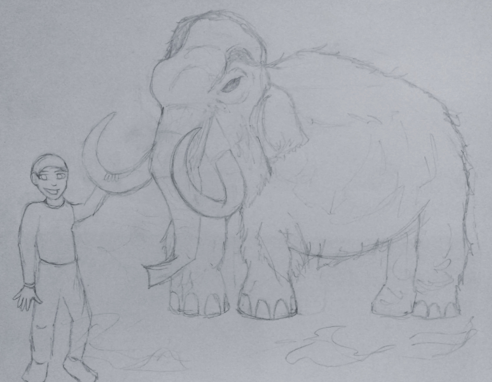
El hombre dejó escapar un suspiro de alivio.
Todavía recuperando el aliento respondió casi sin pensar.
—Sí... es un elefante.
Dominic sonrió.
Negó con la cabeza.
—¿No lo reconoces?
—Es un mamut.
El hombre frunció el ceño.
—¿Un... mamut?
—Pero... estaban extintos.
110Dominic lo observó unos segundos.
Su expresión cambió.
—De eso se trata la memoria.
Antes de que pudiera preguntar qué significaban aquellas palabras...
Todo desapareció.
El hombre abrió los ojos de golpe.
Permaneció inmóvil.
Los árboles.
El viento.
La noche.
Había vuelto al bosque.
Respiró profundamente mientras intentaba convencerse de que todo había sido un sueño.
Entonces sintió algo deslizarse por su rostro.
111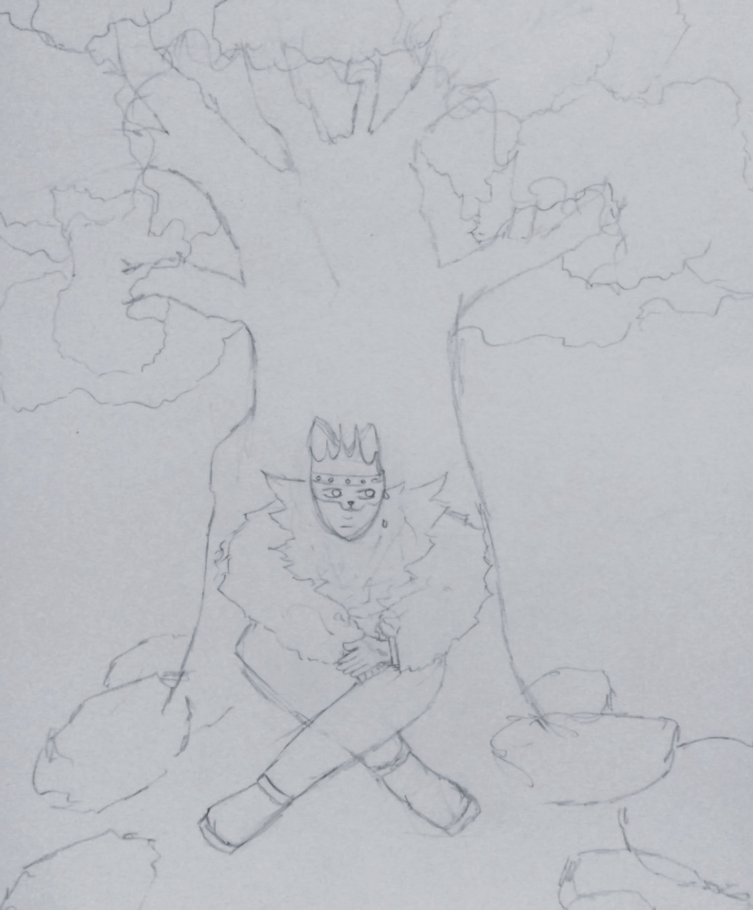
Una gota.
Después otra.
Las dos recorrieron lentamente su rostro.
Las observó en silencio.
Agua.
Su ropa estaba completamente seca.
Pero aquellas gotas eran reales.
112Su mirada se perdió entre los árboles.
¿Qué había sido aquel extraño poder?
Entonces recordó algo.
Se incorporó de inmediato.
Había algo que necesitaba preguntar.
← Volver al índice 113La Verdad que el Cuervo Guardó
Durante mucho tiempo creímos que la sangre de nuestra familia solo podía llevarnos hacia un único destino.
Eso fue lo que nos enseñaron.
Eso fue lo que todos creímos.
Un heredero para un reino.
Un lugar que debía ser ocupado.
Un legado que debía pasar de una generación a la siguiente.
Pero con el tiempo comprendimos que la historia que conocíamos estaba incompleta.
Una parte de ella había sido olvidada.
114Durante mucho tiempo no comprendíamos por qué el cuervo había llegado hasta Damián.
¿Por qué él había sido elegido para llevar consigo una memoria tan antigua?
Pero esa no era la única pregunta.
Porque mientras el cuervo despertaba recuerdos en él, el guerrero del Invierno comenzaba a recibir fragmentos de una historia que también pertenecía a su sangre.
¿Por qué la madre soñaba con una historia que nadie recordaba?
¿Por qué Dominic hablaba de la memoria como si supiera que algo había sido perdido?
115La respuesta siempre estuvo en el mismo lugar.
No pertenecía a un solo heredero.
No pertenecía a una sola rama de la familia.
El cuervo pertenecía al linaje.
Vimos a un joven cargar con un destino que parecía escrito desde antes de su nacimiento.
Vimos cómo el cuervo descendió sobre él, como si reconociera una sangre antigua que nadie más podía ver.
116Pero también vimos algo que nadie esperaba.
A un guerrero marcado por el invierno, alguien que jamás había buscado una corona, pero que comenzó a recibir fragmentos de una memoria que no le pertenecía solamente a él.
Durante mucho tiempo no entendimos la conexión.
Hubo un tiempo en el que ambos poderes pertenecían a una misma herencia.
La sangre real tenía la responsabilidad de gobernar.
La sangre del dragón tenía la responsabilidad de proteger.
117No eran fuerzas opuestas.
Eran dos partes de un mismo legado.
Durante generaciones, ambas existieron unidas en aquellos que llevaban la sangre antigua. Pero con el paso del tiempo, los antiguos comprendieron que reunir ambos poderes en una sola persona podía romper el equilibrio del mundo.
Aquel que poseyera la corona tendría la autoridad sobre los hombres.
Aquel que poseyera el vínculo con los dragones tendría una fuerza capaz de cambiar el destino de los reinos.
118Y cuando ambas cosas pertenecían a la misma persona, el poder dejaba de tener límites.
Por eso los antiguos tomaron una decisión.
Separaron los caminos.
No como castigo.
No como una pérdida.
Sino como una forma de preservar el equilibrio.
119Recuerdo aquel momento con claridad.
Fue una revelación.
Antes de que pudieran comprender lo que estaba ocurriendo, una presencia antigua apareció frente a ellos.
El cuervo.
Con los siglos, la verdadera historia comenzó a desaparecer.
El mundo recordó la existencia de la corona.
Pero olvidó la existencia del fuego que había nacido junto a ella.
120Porque esa fue la única verdad que se permitió permanecer en la memoria.
Que existía un heredero para gobernar.
Pero no que existía otro heredero destinado a proteger.
La promesa de que el reino nunca tuvo un solo destino.
Porque cuando los antiguos separaron los caminos, no destruyeron la unión de la sangre.
Solo dividieron sus responsabilidades.
121Dos herencias.
Dos caminos.
Dos tronos.
Y después de siglos de silencio, la memoria finalmente había regresado para revelar aquello que el mundo había olvidado:
ninguno de los dos había nacido para reclamar el lugar del otro.
Ambos habían nacido para descubrir cuál de los dos legados debían aceptar.
La herencia que llevaba consigo una historia que había esperado generaciones para ser recordada.
122Cuando sus alas cubrieron la luz, no vieron el futuro.
Vieron el pasado.
Vieron aquello que había sido ocultado.
Vieron a los primeros guardianes de aquel poder y comprendieron que el legado de su familia nunca había sido un único camino.
Existían dos formas de proteger un reino.
Dos formas de cargar con una responsabilidad.
123Dos caminos que no competían entre sí.
El gobierno y la protección.
La voluntad de los hombres y la voluntad de los dragones.
No era una cuestión de quién merecía más.
No era una cuestión de quién debía vencer.
La verdad era mucho más simple y, al mismo tiempo, mucho más compleja:
124Ambos tenían derecho.
Ambos tenían la capacidad.
Lo que nadie les había dicho era que nunca tuvieron que arrebatarse un lugar entre ellos.
Nunca fueron rivales por un único destino.
Eran dos descendientes de una misma historia, frente a dos caminos que podían cambiar el futuro del reino.
El cuervo no llegó para escoger por ellos.
125Llegó para devolverles algo que les había sido negado durante generaciones:
La libertad de decidir quién querían ser.
La respuesta a esa pregunta no estaba en el cuervo.
Su propósito no era señalar a un solo sucesor.
Damián ya había asumido la responsabilidad de gobernar, pero su sangre también conservaba la conexión con el antiguo poder de los dragones.
126Del mismo modo, el Guerrero del Invierno, aunque nunca había reclamado una corona, pertenecía a la misma descendencia y podía recibir la memoria que había permanecido oculta durante generaciones, así como despertar la conexión con el antiguo poder de los dragones.
Ambos tenían acceso a una herencia que había sido dividida con el paso del tiempo.
El reino no tenía un único heredero.
Tenía dos responsabilidades.
127Y después de generaciones de silencio, la verdad había regresado a sus verdaderos herederos.
Por primera vez en siglos, no recibirían un destino impuesto por la historia.
No serían definidos únicamente por la corona que llevaban ni por el poder que despertaba en su sangre.
Ambos tendrían ante sí la misma elección que una vez perteneció a sus ancestros.
Elegir qué legado llevarían consigo.
128Ambos podían portar una corona.
Elegir qué clase de rey querían ser.
Uno podía convertirse en el rey que guía a los pueblos desde el Trono de Hierro.
El otro podía convertirse en el rey que protege el reino junto a los dragones.
La sangre les había entregado el derecho de elegir.
129Porque el verdadero legado nunca fue elegir quién merecía gobernar.
Fue devolverles la libertad de elegir qué fuerza protegerían, qué responsabilidad asumirían y qué rey decidirían ser.
Continuará...
← Volver al índice 130La Guerra por la Memoria del Norte
El hombre misterioso se levantó con prisa. Desde hacía días una pregunta no dejaba de darle vueltas en la cabeza y comprendía que ya no podía seguir avanzando sin conocer la respuesta. Había visto a Gloria enfrentarse a enemigos imposibles, sobrevivir donde otros habrían caído y liberar criaturas que durante siglos permanecieron encadenadas. Sin embargo, aún desconocía el origen de aquella fortaleza. Si quería entender quién era realmente la mujer que caminaba a su lado, primero debía conocer la historia de quienes habían venido antes que ella.
131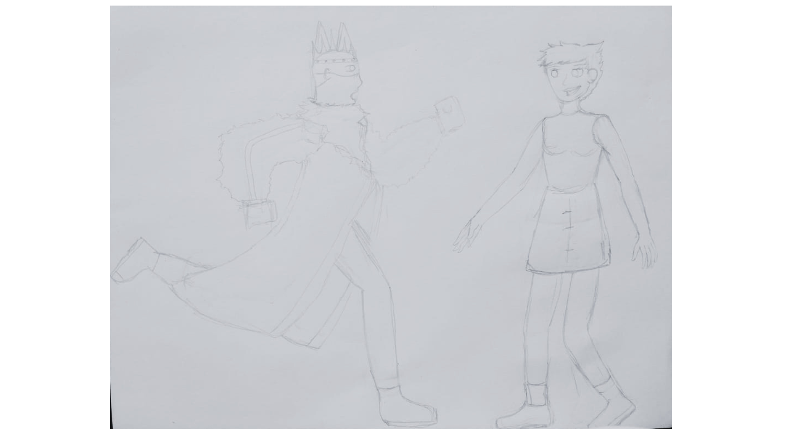
Después de recorrer varios senderos finalmente la encontró. Gloria permanecía de pie observando el paisaje. Al verlo acercarse le sonrió con la tranquilidad de quien no esperaba ninguna mala noticia.
—Te estaba buscando.
—¿Ocurrió algo?
—Necesito hacerte una pregunta muy importante.
Ella asintió en silencio.
—Quiero saber sobre tu familia paterna. Quiero saber quiénes son.
132Gloria guardó silencio unos segundos antes de responder.
—Mi abuelo era indígena. Hijo de indígenas. Era un verdadero maestro de las artes. Tocaba música, dibujaba, escribía poesía, cantaba... parecía dominar todo aquello que pudiera expresar el alma de una persona. Nunca dejó de aprender y nunca dejó de enseñar.
Una sonrisa apareció en su rostro al recordarlo.
—Lo recuerdo con muchísimo cariño. Fue una persona muy noble conmigo. Sé que con mi padre y con mis tíos fue un hombre mucho más estricto. Los educó bajo una disciplina muy fuerte, pero aun así siempre lo recordaré como alguien extraordinario.
133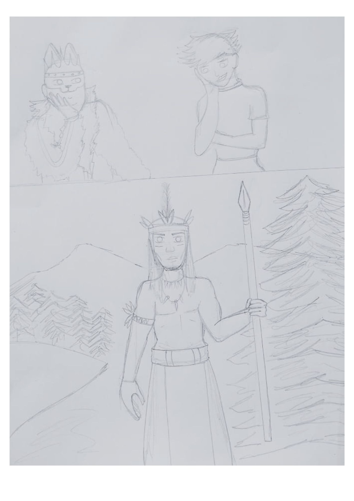
Su expresión cambió lentamente.
—Con el tiempo la familia comenzó a dividirse. Todos pensaban que alguien debía quedarse al frente de la casa, y poco a poco dejaron de ser una familia para convertirse en bandos.
El hombre misterioso permaneció atento.
—¿Bandos?
—Sí. Todos discutían sobre quién debía tomar las riendas de la familia. Mi padre nunca creyó que yo fuera la persona indicada.
134—¿Por qué?
Gloria dejó escapar una pequeña risa.
—Porque cuando era niña no era buena para las artes marciales.
El hombre misterioso abrió los ojos con incredulidad.
—¿Cómo pudo decir algo así? He visto de lo que eres capaz. He visto cómo luchas. He visto tu determinación. Eres una mujer increíblemente fuerte.
Ella sonrió con cierta melancolía.
135—Lo entiendo. Mi padre creció bajo un régimen muy estricto. Se esforzó toda su vida. Llegó a convertirse en campeón de artes marciales y siempre cargó con el peso de demostrar que podía ser el mejor. Supongo que tener una primera hija que no fuera un varón y que además no cumpliera aquellas expectativas nunca fue fácil para él.
Por un instante el silencio volvió a ocupar el lugar de las palabras.
Entonces Gloria levantó la vista.
—Espera...
Lo observó con curiosidad.
—¿Cuándo me has visto pelear?
136El hombre misterioso sintió un sobresalto. Estuvo a punto de revelar demasiado.
Después respondió con serenidad.
—Te he visto... en mis sueños.
Ella frunció ligeramente el ceño, sin saber si aquello era una broma o una confesión.
Él decidió continuar antes de que pudiera hacer otra pregunta.
—Deja que tu familia resuelva sus propias disputas. Ellos siguen luchando por una casa. Nosotros tenemos una batalla mucho más importante.
Gloria permaneció en silencio.
137—Recuerda quién eres. Ya no eres aquella niña que dudaba de sí misma. Ahora eres una guerrera. Te he visto caer una y otra vez, y también te he visto levantarte cada vez con más fuerza. Pero nuestra misión todavía no ha terminado.
Ella inclinó ligeramente la cabeza.
—El Norte aún no es libre.
—Yo no quiero ir a Estados Unidos.
El hombre misterioso sonrió.
—Crees que el Norte es un país.
Hizo una pausa mientras el viento recorría las montañas.
—El Norte es mucho más antiguo que cualquier frontera.
138Ella no respondió.
—Mientras tu familia pelea por una casa... otros ya comenzaron a conquistar un reino entero.
—Los antiguos guardianes fueron desplazados. Otros ocuparon su lugar.
La mirada del hombre misterioso se endureció.
—Los Bolton no desean gobernar el Norte.
—Desean que el Norte olvide quién es.
El hombre misterioso dejó que el silencio cubriera las montañas antes de volver a hablar.
Gloria levantó lentamente la mirada.
—¿Qué quieres decir?
139—La mayoría de las personas cree que las guerras comienzan por odio.
Negó con la cabeza.
—No.
—Durante siglos el Norte fue un reino libre. No porque nunca hubiera conocido la guerra, sino porque nunca dejó de recordar quién era.
Una bandera apareció en el horizonte.
Oscura.
Pesada.
Desconocida.
—Entonces llegaron los Bolton.
Gloria permaneció en silencio.
140—No buscaban convertirse en parte del Norte.
Buscaban reemplazarlo.
No querían aprender su historia.
Querían escribir una nueva.
No querían proteger sus bosques.
Querían apropiarse de ellos.
No querían convivir con su gente.
Querían que esa gente olvidara quién había sido.
El hombre misterioso dio unos pasos hacia la nieve.
141—Eso es lo que hacen los imperios.
No siempre destruyen primero las murallas.
Primero destruyen la memoria.
Porque un pueblo que olvida su historia termina creyendo que siempre perteneció a quien lo conquistó.
Gloria recordó el antiguo castillo de la Luna.
—¿Tan grande es su reino?
El hombre misterioso sonrió.
—Mucho más grande de lo que imaginas.
142Su reino es tan inmenso... que incluso Estados Unidos y Alaska juntos parecen pequeños cuando se comparan con las tierras que dominan.
Gloria abrió los ojos sorprendida.
—¿Entonces por qué siguen avanzando?
—Porque nunca fue una cuestión de territorio.
Fue una cuestión de poder.
Quien desea poseerlo todo nunca considera suficiente lo que ya tiene.
Volvió a mirar hacia el Norte.
—Los Bolton no desean gobernar el Norte.
Desean que el Norte deje de existir.
143No basta con conquistar un reino.
Necesitan convencer al mundo de que ese reino nunca tuvo identidad propia.
Por eso destruyen símbolos.
Por eso cambian nombres.
Por eso persiguen la cultura de quienes se niegan a olvidar.
El hombre misterioso respiró profundamente.
—Y por eso esta guerra no trata solamente de castillos.
Ni de coronas.
Ni de reyes.
Se trata de memoria.
Se trata de identidad.
Se trata de decidir quién tendrá el derecho de contar la historia del Norte.
144Gloria sintió un escalofrío.
El hombre misterioso la observó con serenidad.
—Tú hiciste algo que los Bolton jamás podrán comprender.
Ellos conquistan lugares.
Tú liberaste un pueblo.
Liberaste a los unicornios.
Y cuando devolviste la libertad a sus guardianes, Escocia hizo algo que ningún ejército puede obligar.
Te aceptó como una de los suyos.
Una familia no siempre es aquella en la que naces.
A veces...
es aquella que decides proteger.
145Gloria sintió que aquellas palabras tenían un peso que iba mucho más allá de la conversación que acababan de tener.
Entonces él dio un paso al frente.
—Ahora ya entiendo por qué eres como eres.
Ella levantó la vista.
—Toda tu vida te enseñaron a controlar tu fuerza. A ser amable. A no decepcionar a nadie.
Su mirada permanecía fija sobre ella.
146—Pero nadie te enseñó qué hacer con todo aquello que guardaste en silencio durante tantos años.
Gloria respiró profundamente.
—¿Qué quieres decir?
El hombre misterioso sonrió con una tranquilidad que, por primera vez, resultaba inquietante.
—Presiento que todavía no hemos visto ni siquiera el cinco por ciento de tu verdadero poder.
El viento comenzó a soplar con fuerza entre las montañas.
—Y eso es precisamente lo que vamos a practicar ahora.
147Gloria sintió un escalofrío recorrer todo su cuerpo.
—¿Practicar qué?
El hombre misterioso respondió sin apartar la mirada.
—Encontrar tu oscuridad.
← Volver al índice 148La voz de los ancestros
El hombre misterioso caminó varios minutos sin decir una sola palabra. Gloria lo siguió mientras los árboles se volvían cada vez más altos y la luz del sol apenas lograba atravesar las copas del bosque.
Finalmente llegaron a un pequeño claro cubierto de flores.
El viento era tan suave que parecía una respiración.
149—¿Por qué me trajiste aquí? —preguntó Gloria.
Él sonrió con serenidad.
—Porque todavía hay un poder que nunca has querido utilizar.
Ella bajó la mirada.
Sabía exactamente de qué hablaba.
—Hablar con los espíritus...
—No es miedo a ellos.
—Es miedo a lo que puedan decirme.
El hombre misterioso asintió.
—Tu abuelo fue un chamán. Ese conocimiento nunca desapareció. Solo estaba esperando el momento adecuado para despertar en ti.
Gloria respiró profundamente.
—¿Y si no estoy preparada?
—Nunca estarás lista para algo como esto.
Hizo una pausa antes de extender la mano hacia el campo de flores.
—Acuéstate.
150Ella se acostó.
El hombre misterioso hizo lo mismo, en posición contraria.
Durante varios segundos ninguno habló.
El sonido del viento comenzó a mezclarse con un extraño murmullo.
Las flores parecían respirar.
El cielo desapareció.
El bosque desapareció.
Y el mundo quedó completamente en silencio.
Cuando Gloria volvió a abrir los ojos ya no estaba en el bosque.
Se encontraba sobre una enorme colina bañada por una luz dorada.
A lo lejos había un viejo árbol.
Sentado bajo su sombra estaba un hombre tocando una guitarra.
Cada nota parecía llenar el aire de paz.
151Gloria sonrió antes de darse cuenta de que las lágrimas ya recorrían su rostro.
—...¿Abuelo?
El hombre levantó lentamente la vista.
Su sonrisa era exactamente la misma que ella recordaba.
—¡Hijita!
Dejó la guitarra a un lado y abrió los brazos.
Gloria corrió hasta él.
Lo abrazó con tanta fuerza como si quisiera recuperar todos los años que habían pasado.
—Qué bueno verte otra vez...
El abuelo cerró los ojos.
—Y yo estoy inmensamente feliz de verte.
Se separaron apenas unos centímetros para poder mirarse.
152—Me parece maravilloso que podamos reunirnos de nuevo.
Gloria sonrió entre lágrimas.
—Tenemos muchas cosas de qué hablar.
El abuelo soltó una pequeña risa.
—Lo sé.
Volvió a tomar la guitarra y dejó que una melodía suave acompañara la conversación.
—Ya sé lo que está ocurriendo en la casa.
Gloria bajó la mirada.
—Entonces... ¿ya sabes todo?
—Sí.
Guardó silencio unos segundos.
—Todo esto ha sido una prueba.
Una prueba para revelar el verdadero corazón de cada uno de mis hijos.
153No para ver quién tiene más fuerza.
Sino quién es capaz de amar incluso cuando más duele.
Gloria respiró hondo.
—Pero no solo ocurre eso...
Levantó la vista.
—En el mundo también hay una guerra muy importante.
Él asintió lentamente.
—También la he visto.
—Yo no puedo quedarme aquí con ellos...
Su voz comenzó a quebrarse.
—...pero tampoco quiero dejarlos solos.
Sé que estarán en peligro.
El abuelo la observó con ternura.
154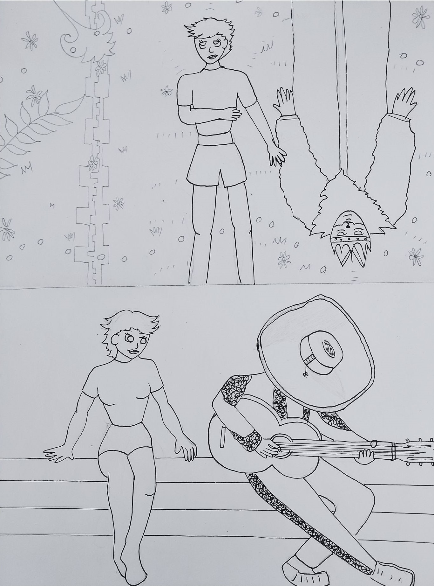
Después hizo una pregunta muy sencilla.
—Si tuvieras que confiar esta responsabilidad a una sola persona...
—¿En quién pensarías?
Gloria levantó la cabeza.
Los dos permanecieron en silencio.
Un instante después sonrieron exactamente al mismo tiempo.
—Estamos pensando en la misma persona... —dijeron los dos.
Ella soltó una pequeña risa.
—Mi hermano.
156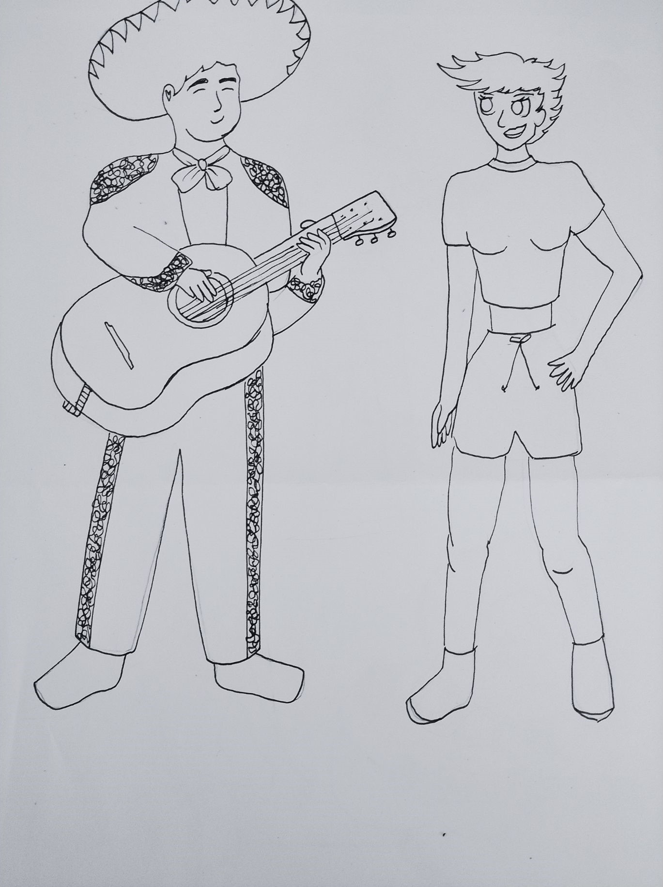
Él es quien sigue.
Por jerarquía le corresponde ocupar ese lugar.
Pero más importante aún...
Es una buena persona.
El abuelo asintió con orgullo.
—Eso mismo pensaba.
Después tomó ambas manos de Gloria.
—Escúchame bien, hijita.
Tú y tu hermano comparten algo que nadie puede recibir como un regalo.
Comparten una historia.
Un linaje.
Una familia que, durante generaciones, ha luchado para que ustedes no pierdan el lugar que les corresponde por nacimiento.
No hablo de privilegios.
Hablo de responsabilidad.
De cuidar a quienes vienen detrás.
158Eso no se hereda con un documento.
Se demuestra con los actos.
El anciano acarició la cabeza de Gloria como cuando era niña.
—Tú, por ser la mayor, tuviste que recorrer el camino más difícil.
Viviste injusticias.
Aprendiste a reconocer la envidia, el orgullo y el abuso.
Muchas veces te preguntaste por qué.
Hoy ya conoces la respuesta.
Todo lo que viviste forma parte de la memoria de nuestro linaje.
Cuando una generación aprende una lección con mucho dolor...
Las siguientes ya no necesitan tropezar con la misma piedra.
159Eso es la memoria colectiva.
No consiste en cargar el sufrimiento.
Consiste en transformarlo en sabiduría.
Gloria permanecía completamente en silencio.
El abuelo continuó.
—Por eso debes decir siempre la verdad, aunque incomode.
La verdad puede dividir por un momento.
Pero una mentira destruye familias durante generaciones.
No permitan que el orgullo decida por ustedes.
Si entregan el liderazgo a quien solo busca controlar...
La familia volverá a repetir los mismos errores.
160Busquen siempre a quien tenga el corazón dispuesto a servir.
No al que quiera mandar.
Ese es el verdadero heredero.
No quien levanta más la voz.
Sino quien mantiene unida a la familia cuando todo parece romperse.
Las lágrimas volvieron a aparecer en los ojos de Gloria.
—Entonces...
—¿Crees que él podrá hacerlo?
El abuelo sonrió.
—No estará solo.
Mientras recuerde quién es...
161Siempre caminaré a su lado.
Y tú también.
Después volvió a tomar la guitarra.
Una melodía comenzó a llenar nuevamente el lugar.
—Estoy muy orgulloso de ti.
Porque elegiste decir la verdad.
Y decir la verdad, cuando hacerlo tiene un precio, es uno de los actos más valientes que existen.
No te desanimes.
Lo mejor todavía está por venir.
Ahora sabes dónde encontrarme.
Puedes buscarme siempre que tu corazón necesite una respuesta.
162Gloria volvió a abrazarlo.
No quería soltarlo.
Antes de desaparecer, el abuelo sonrió una última vez.
—Y cuando regreses...
Dales un abrazo a todos mis nietos.
Y a mi viejita...
Dile que la amo.
Que la extraño todos los días.
Pero que nunca ha dormido sola.
Porque cada noche descanso junto a ella, aunque no pueda verme.
La luz comenzó a envolverlo lentamente.
163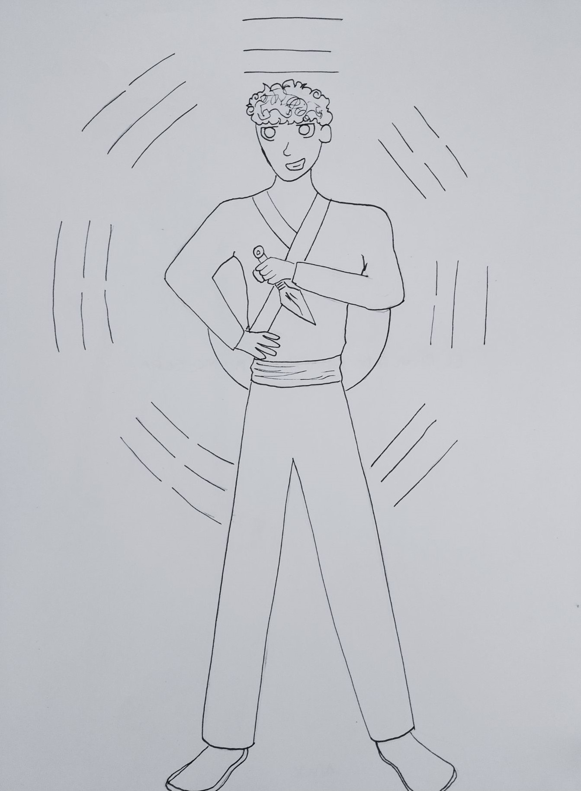
La melodía de la guitarra siguió sonando incluso cuando su figura ya se había desvanecido.
Y Gloria despertó de nuevo sobre el campo de flores, con una lágrima todavía recorriendo su mejilla.
El hombre misterioso seguía acostado a su lado, mirando el cielo.
Sin girar la cabeza, preguntó con una sonrisa:
—¿Pudiste encontrar las respuestas que buscabas?
Gloria cerró los ojos por un instante.
Luego sonrió.
—No.
Encontré algo mucho más importante.
Encontré el camino.
165La última revelación
Gloria todavía sentía el abrazo de su abuelo cuando una fuerza desconocida atravesó el paisaje.
El cielo dorado comenzó a agrietarse.
La melodía de la guitarra se detuvo de golpe.
166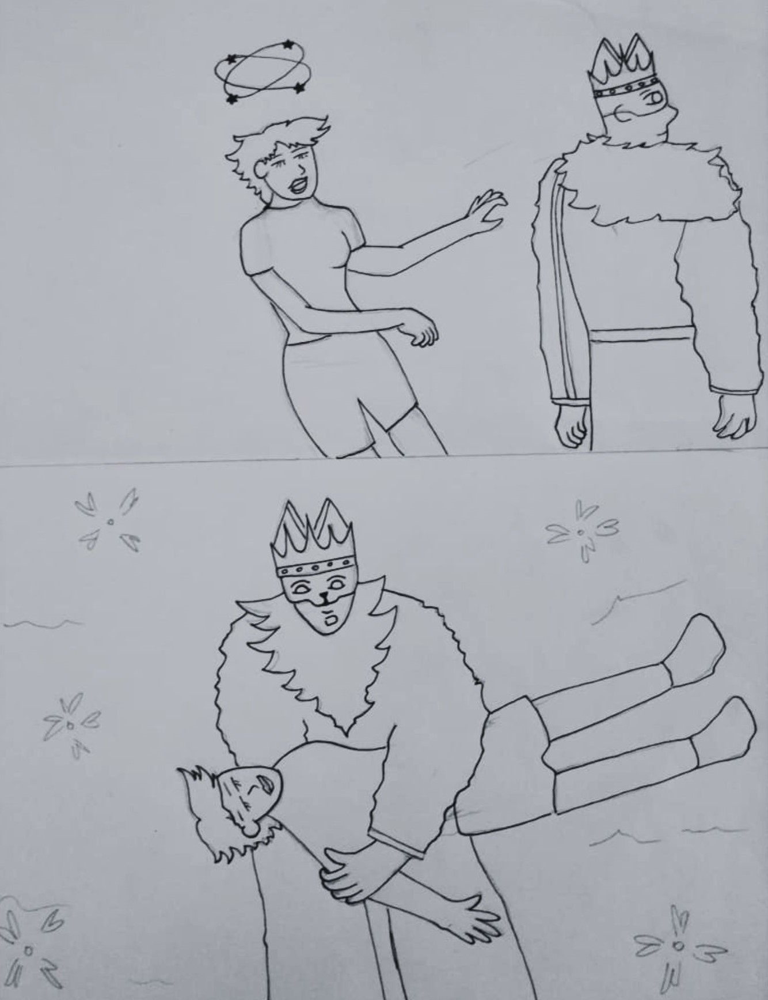
Un estruendo sacudió todo el lugar.
Antes de poder reaccionar, algo la golpeó en el pecho.
No era un enemigo.
Era una presencia.
Sintió que alguien la arrancaba del mundo de los ancestros.
Cayó hacia atrás.
Y todo desapareció.
168En medio de la oscuridad apareció un único ojo.
Violeta.
Silencioso.
Observándola.
Después apareció una sonrisa.
—Hace mucho que no nos vemos...
Gloria sintió que el corazón dejaba de latir por un instante.
Conocía esa voz.
—...¿Damian?
170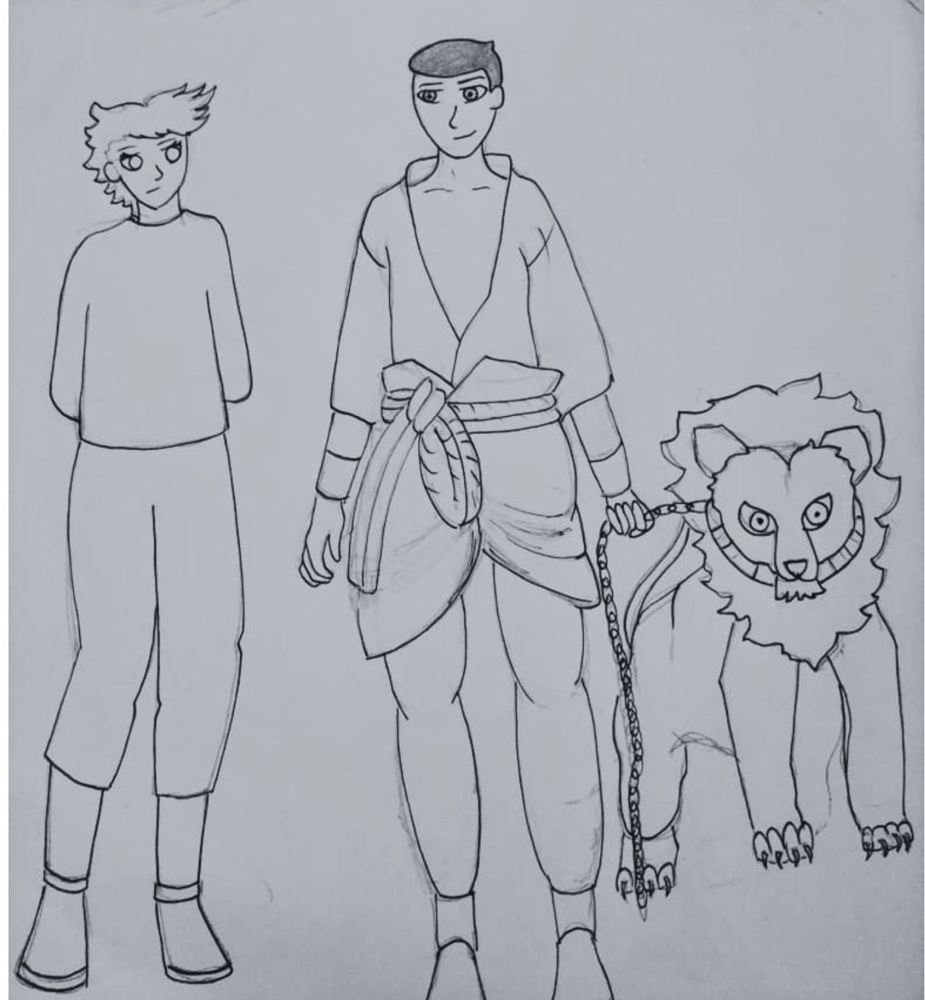
—Solo alguien que realmente me conoce habría entendido cuál era el regalo que más deseaba.
Ni el dinero...
Ni la fama...
Ni siquiera un reino.
Gloria permaneció en silencio.
Damian levantó lentamente la mirada.
—Tú me devolviste el derecho a decidir quién quería ser.
...dejé de vivir la historia que otros habían escrito para mí.
Comprendí que no necesitaba pedir permiso para descubrir mi verdadero camino.
Fue entonces cuando este poder despertó.
Damian señaló lentamente su ojo violeta.
Y eso nadie podía regalármelo.
Ni siquiera mi propio padre.
Damian extendió su mano.
Le estaba entregando el león.
172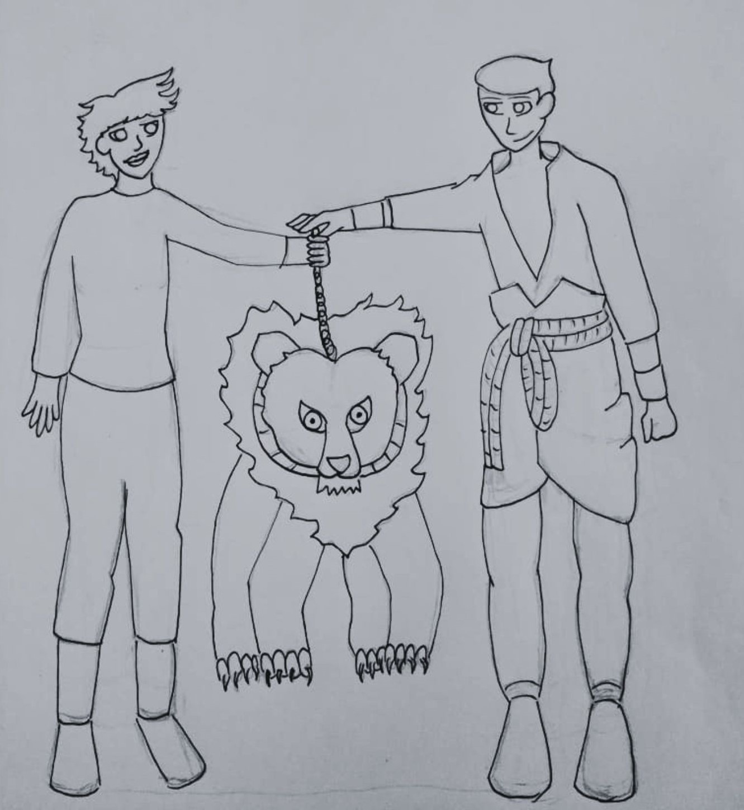
Ella lo observó sin comprender.
—Llévaselo.
—Él es el verdadero heredero.
—El abuelo del hombre misterioso fue el Rey de los Siete Reinos.
Su padre era el heredero legítimo.
Pero antes de que pudiera ocupar el trono, una rebelión cambió la historia.
Eso significa que él...
Es el verdadero rey.
Damian comenzó a alejarse lentamente.
Gloria dio un paso hacia él.
—¿Y tú...? ¿Qué vas a hacer ahora?
Damian se detuvo.
No se dio la vuelta de inmediato.
Guardó silencio unos segundos antes de responder.
—No te sientas mal.
—Quiero aprender a controlar este nuevo poder.
174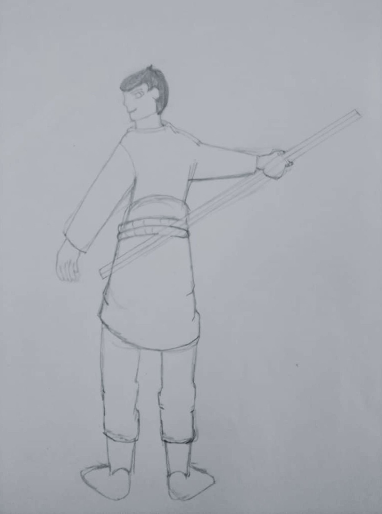
Finalmente volvió la cabeza.
Una sonrisa tranquila apareció en su rostro.
—Siempre te he admirado.
—Y sé que has dado la vida por mí muchas más veces de las que podría imaginar.
—Gracias por nunca rendirte conmigo.
Gloria sintió un nudo en la garganta.
Damian sonrió una vez más.
—Ah...
—Y, mamá...
—Recupera tu estilo.
Eres mucho más bonita de lo que imaginas.
Gloria no encontró palabras para responder.
Damian bajó la mirada con una pequeña sonrisa.
—Dicen que uno siempre termina llevándose peor con el padre al que más se parece.
Levantó nuevamente la vista.
—Y tú y yo nos parecemos mucho más de lo que imaginábamos.
176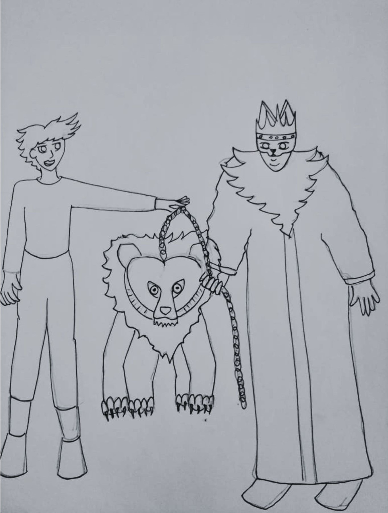
Gloria sintió que las lágrimas volvían a llenar sus ojos.
Le dedicó una sonrisa apenas visible.
—Adiós, Santi...
Lo dijo tan bajito que el viento estuvo a punto de llevarse sus palabras.
En el fondo de su corazón deseaba que Damian no tuviera que marcharse.
Pero comprendía que aquel también era su camino.
Damian levantó una mano a modo de despedida.
Después continuó caminando.
Poco a poco, su figura se perdió entre la luz.
Gloria abrió los ojos de golpe.
El bosque había regresado.
178—¿Qué ocurrió? —preguntó el hombre misterioso.
Gloria respiró con dificultad.
Miró sus manos.
Allí estaba.
El león.
El mismo que Damian acababa de entregarle.
El hombre misterioso observó el animal sin comprender cómo había aparecido.
Gloria sonrió con serenidad.
—Ahora lo entiendo todo.
Se levantó lentamente.
Después colocó el león entre sus manos.
—Damian ya conoce la verdad.
El hombre misterioso permaneció en silencio.
—Descubrió quién eres realmente.
Gloria levantó la mirada.
—Tu abuelo fue el Rey de los Siete Reinos.
Tu padre era el heredero legítimo del trono.
179Pero antes de que pudiera ocupar su lugar, una rebelión cambió el destino de toda la familia.
Guardó unos segundos de silencio.
Por eso me pidió que te lo devolviera.
El hombre misterioso bajó lentamente la vista hacia el león.
Durante años había intentado olvidar aquella historia.
Durante años creyó que su linaje había desaparecido.
Pero, por primera vez, alguien más conocía la verdad.
Gloria sonrió.
—También me pidió que te diera las gracias.
Dice que solo quiere que le reconozcas haber ayudado a derrotar a Kristal.
El hombre misterioso dejó escapar una pequeña risa.
Tomó el león entre sus manos.
Después levantó la vista hacia el horizonte.
El viento volvió a recorrer el bosque.
Una nueva historia estaba a punto de comenzar.
← Volver al índice 180La Corona que No Queríamos
Gloria permanecía suspendida en el aire.
Su mano se sujetaba mientras su cuerpo giraba lentamente. Cada movimiento parecía natural, preciso y completamente controlado.
No parecía estar luchando contra la gravedad.
Parecía libre de ella.
Abajo, Krista permanecía sobre el suelo.
Estaba encadenada.
Su postura recordaba a la de un león cautivo. Un animal poderoso que aún conservaba toda su fuerza, pero que ya no podía decidir hacia dónde caminar.
181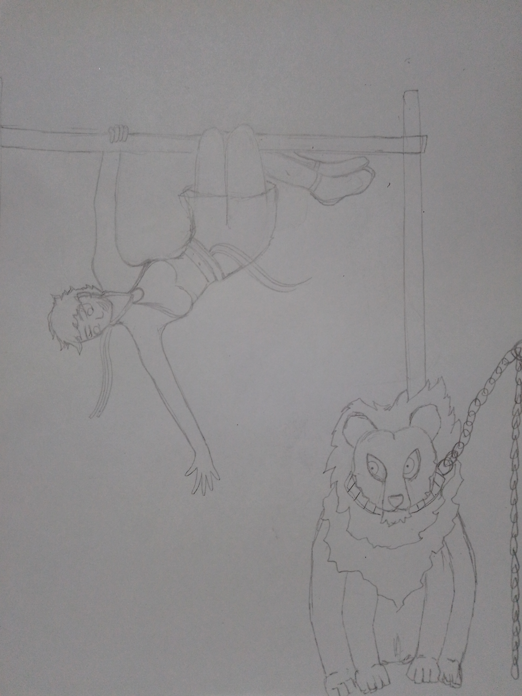
Ninguna de las dos hablaba en voz alta.
Aquella conversación ocurría únicamente dentro de sus mentes.
Krista levantó lentamente la mirada.
—No lo entiendo.
Gloria continuó girando.
—¿Qué cosa?
Krista guardó silencio durante unos segundos.
—Después de todo lo que te ha pasado...
Sus ojos permanecieron sobre Gloria.
—Después de todo lo que les hice...
Las cadenas produjeron un leve sonido.
—¿Cómo puedes seguir teniendo tanta fe?
Gloria dejó de girar.
Durante unos segundos permaneció suspendida en el aire.
Después sonrió.
183—Krista...
Su voz era tranquila.
—Yo, a diferencia de ti, utilizo mi día para hacer cosas productivas.
Krista frunció el ceño.
—Nunca estoy de vaga.
Gloria hizo una pequeña pausa.
—Y cuando parece que lo estoy...
Cerró los ojos.
—Estoy descansando.
Krista permaneció en silencio.
Gloria continuó.
—No tengo tiempo para pasarme la vida alimentando aquello que me destruye.
—Tengo cosas que hacer. Personas que quiero. Personas que proteger. Cosas que aprender y errores que corregir.
Gloria abrió los ojos.
—Tengo una vida que vivir.
184Krista bajó la mirada.
—Tú no entiendes...
Gloria descendió lentamente del tubo hasta tocar el suelo.
—¿Qué es lo que no entiendo?
Krista levantó las manos.
Las cadenas volvieron a sonar.
—No entiendo por qué me encadenaste?
Gloria la observó sin comprender.
—No entiendo por qué me convertiste en un león?
Gloria permaneció inmóvil durante unos segundos.
Después soltó una pequeña carcajada.
—¿Disculpa?
Krista levantó la mirada.
—¿Tú de verdad crees que yo te convertí en esto?
185Gloria la observaba.
—Tú creaste una ideología alrededor de mi venado.
Krista permaneció en silencio.
—Desde hace años me vienen preparando para esto.
—Tú comenzaste a humillarnos.
—Tú nos separaste.
—Tú mentiste sobre nuestra historia.
—Tú mentiste sobre nuestras vidas.
—Tú mentiste sobre nuestra reputación.
Gloria se detuvo frente a ella.
—Todo lo que tienes lo construiste a base de hipocresía.
Krista solo la miraba.
Gloria continuó.
—No te gustó lo que te hice porque la presa se convirtió en cazador.
Una sonrisa apareció en el rostro de Gloria.
186—Y tú caíste en tu propia trampa.
Krista miró las cadenas que rodeaban su cuerpo.
Gloria señaló hacia ellas.
—Yo no te convertí en león, Krista.
Una pausa.
—Tú te convertiste en aquello que tanto deseabas.
Krista levantó la cabeza.
—¡Ustedes querían el poder!
Gloria se quedó mirándola.
Entonces comenzó a reír.
—¿Nosotros?
Su risa se hizo más evidente.
—¿Tú juras que nosotros queríamos el poder?
Gloria negó lentamente con la cabeza.
187—Ni siquiera sabíamos quiénes éramos hasta que comenzaste a humillarnos.
—Nos separaste.
—Nos mentiste.
—Nos hiciste creer que debíamos defendernos de personas que nunca habían sido nuestros enemigos.
Gloria respiró profundamente.
—Yo no quiero una corona.
Krista no respondió.
—Y ellos tampoco.
Gloria levantó la mirada.
—Pero dime algo, Krista.
—¿Cómo se supone que debemos protegernos de una persona que añora el poder más que cualquier otra cosa?
Krista permaneció inmóvil.
—¿Cómo protegemos a nuestras familias?
—¿A nuestros amigos?
—¿A nosotros mismos?
188Gloria volvió a girar.
—A veces necesitas poder para enfrentarte a alguien que solamente entiende el lenguaje del poder.
Krista observó cómo Gloria comenzaba a elevarse nuevamente.
—Pero existe una diferencia entre tú y yo.
Gloria quedó suspendida sobre ella.
—Mírame, Krista.
Krista levantó lentamente la cabeza.
Gloria sonrió.
—Soy libre.
Comenzó a girar.
—Mis amigos son libres.
—Mi familia es libre.
Las cadenas de Krista golpearon el suelo.
—A pesar de que durante años nos has hecho la vida imposible...
189Gloria se detuvo.
—Somos libres de verdad.
Krista observó a Gloria desde el suelo.
Gloria estaba arriba.
Krista estaba abajo.
Una estaba suspendida en el aire.
La otra estaba encadenada.
Gloria la miró durante unos segundos.
—Tú tienes todo ese poder...
Su mirada descendió hacia las cadenas.
—Y eres tú la que está encadenada.
Krista no respondió.
200Por primera vez comprendió que Gloria no estaba intentando quitarle las cadenas.
Tampoco estaba intentando liberarla.
Gloria solamente estaba mostrándole algo que Krista llevaba demasiado tiempo negándose a mirar.
Las cadenas no eran la razón por la que se había convertido en un león.
Eran la consecuencia.
Y quizá...
las había construido ella misma.
← Volver al índice 201El heredero del Halcón — Parte 1
Una extensa nube de arena se extiende sobre el país.
Nunca antes se había visto una tormenta semejante.
El cielo desaparece bajo una inmensa cortina de polvo y arena, mientras el viento atraviesa las tierras con una fuerza desconocida.
Y con aquella tormenta...
llega alguien.
202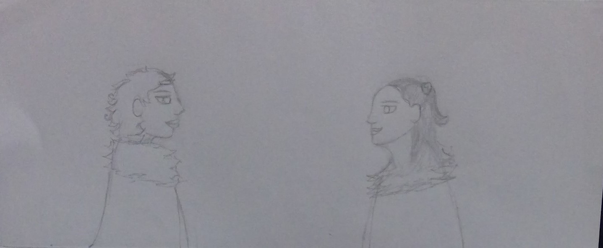
Mon se encuentra frente a frente con Gloria.
Durante unos segundos, ninguna de las dos dice una palabra.
Simplemente se observan.
Había pasado demasiado tiempo desde la última vez que se habían visto.
Ninguna sabe qué decir.
Ninguna sabe cómo comenzar.
Entonces hacen lo único que recuerdan haber hecho cuando eran niñas.
Se abrazan.
Por primera vez en mucho tiempo, ambas pueden sentirse felices de estar nuevamente juntas.
204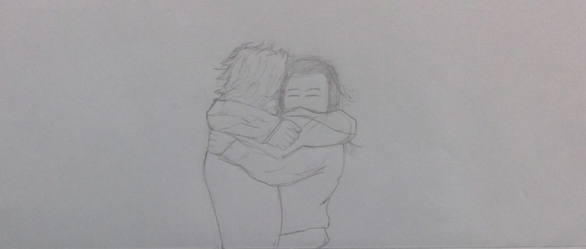
Pero no son las únicas que han vuelto a encontrarse.
La extraña tormenta ha reunido también a los otros.
Los cuatro están juntos.
Y el Hombre Misterioso.
Gloria.
Mon.
Damian.
206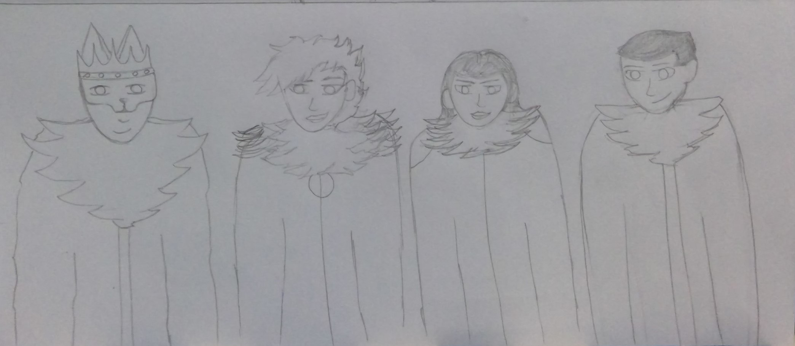
Sin embargo, hay algo extraño en aquella tormenta.
Algo que ninguno logra comprender.
Entonces...
un halcón aparece en el cielo.
El ave vuela sobre ellos.
Da una vuelta.
Después otra.
Los cuatro levantan la mirada y permanecen observándolo.
Durante unos instantes, el animal consigue mantener completamente su atención.
208Ninguno se da cuenta de lo que ocurre.
Una figura se acerca lentamente entre la tormenta.
Cada vez está más cerca.
Hasta que finalmente...
está demasiado cerca para ignorarlo.
Los cuatro voltean.
Un hombre se encuentra frente a ellos.
Viste una larga capa negra.
Su ropa parece especialmente preparada para atravesar aquella tormenta de arena.
Permanece inmóvil.
No dice una sola palabra.
209Los cuatro lo observan.
Y entonces recuerdan a Krista.
Krista.
La mujer que había robado la identidad de la líder de una banda conocida como el Halcón.
La mujer que había convertido aquella identidad en una obsesión.
Una obsesión que llegó al extremo de querer convertirse en Gloria.
Quería ser como ella.
Quería ocupar su lugar.
Quería tenerlo todo.
210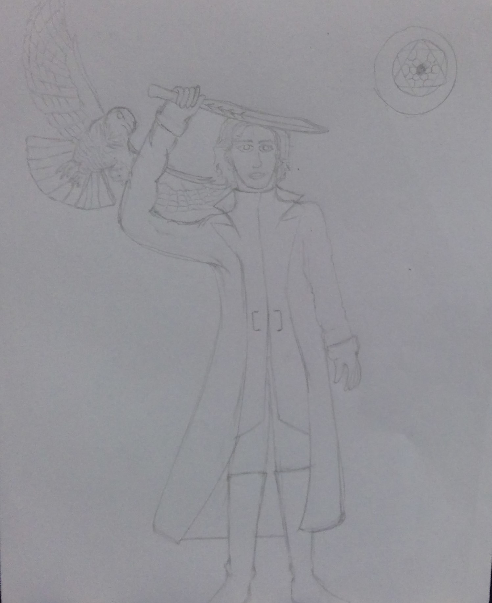
Incluso llegó a engañar a Damian para conseguir que la siguiera.
Pero su obsesión terminó consumiéndola.
Krista había dejado de ser quien era.
Se había convertido en León.
Y ahora estaba derrotada.
Su historia había terminado.
Sin embargo...
el hombre que estaba frente a ellos llevaba algo que Krista nunca había llevado.
Un halcón.
212No un símbolo.
No una imagen.
No un emblema.
Un halcón real.
Los cuatro vuelven a mirar al animal que continúa volando sobre ellos.
Después miran al desconocido.
Nadie habla.
Una sola pregunta aparece en la mente de todos.
¿Era posible que Krista nunca hubiera sido el verdadero Halcón?
El viento vuelve a soplar.
La arena cubre nuevamente el horizonte.
Y aquel hombre permanece frente a ellos.
Tal vez...
después de tantos años...
el verdadero heredero del Halcón finalmente había llegado.
← Volver al índice 213El Heredero del Halcón II — El Eclipse de los Destinos
Damian había decidido marcharse por un tiempo.
Ninguno de ellos sabía que sus caminos volverían a cruzarse.
Hasta que algo apareció en el cielo.
Un extraño fenómeno.
Una señal que ninguno de ellos había visto antes.
Los cuatro la observaron desde lugares diferentes.
Y sin saber por qué...
comenzaron a dirigirse hacia el mismo lugar.
Como si algo los estuviera llamando.
Como si sus caminos estuvieran siendo reunidos por una fuerza que ninguno podía comprender.
204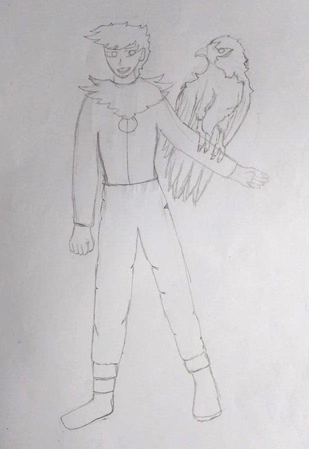
Los cuatro estaban nuevamente juntos.
Pero no estaban solos.
Aquel hombre había llegado justo cuando había llegado la arena.
No sabían quién era.
No sabían de dónde venía.
Y tampoco sabían qué quería.
Pero había algo diferente en él.
Algo que podían sentir incluso antes de verlo.
Una energía que se extendía alrededor de su cuerpo.
Arena que se movía a su alrededor como si obedeciera a su voluntad.
Y ahora estaba frente a ellos.
Sin decir una palabra.
El halcón voló sobre los cuatro.
Hasta que descendió lentamente.
Gloria levantó el brazo.
El ave se posó sobre ella.
Sus garras se aferraron suavemente a su brazo.
Gloria lo miró.
El halcón también la miró.
206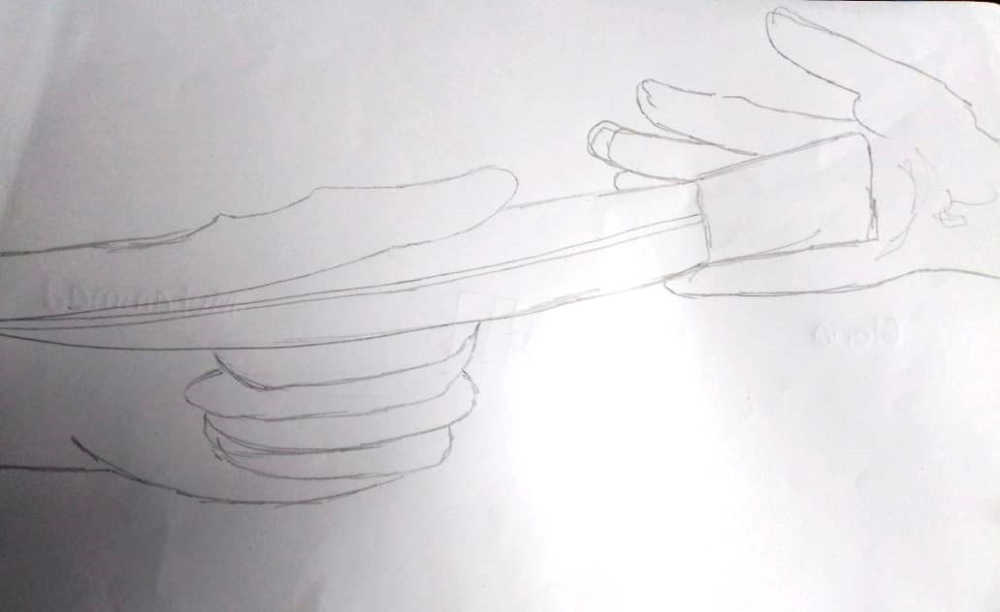
Y entonces Gloria sintió algo que no podía explicar.
El hombre comenzó a acercarse a ella.
Gloria observó sus ojos.
Sentía algo extraño.
Algo que no podía comprender.
Tranquilidad.
Paz.
Pero también había dolor.
Mucho dolor.
Sus ojos eran nobles.
Pero cargaban con algo que no podían esconder.
Un dolor que parecía haber viajado con él durante años.
El dolor de un pueblo.
El dolor de aquellos que habían visto morir a los suyos.
De aquellos que habían perdido sus hogares.
De aquellos que habían aprendido a mirar la muerte no como un final, sino como el regreso a la Fuente.
Y que, aun así, sufrían.
Porque aceptar el destino no significaba dejar de amar a quienes se habían perdido.
Gloria pudo verlo en sus ojos.
Aquel hombre no estaba vacío de dolor.
Estaba lleno de él.
Y, sin embargo...
Gloria no podía sentir odio.
Tampoco sintió temor.
Se quedó allí.
Observándolo.
Hasta que finalmente...
208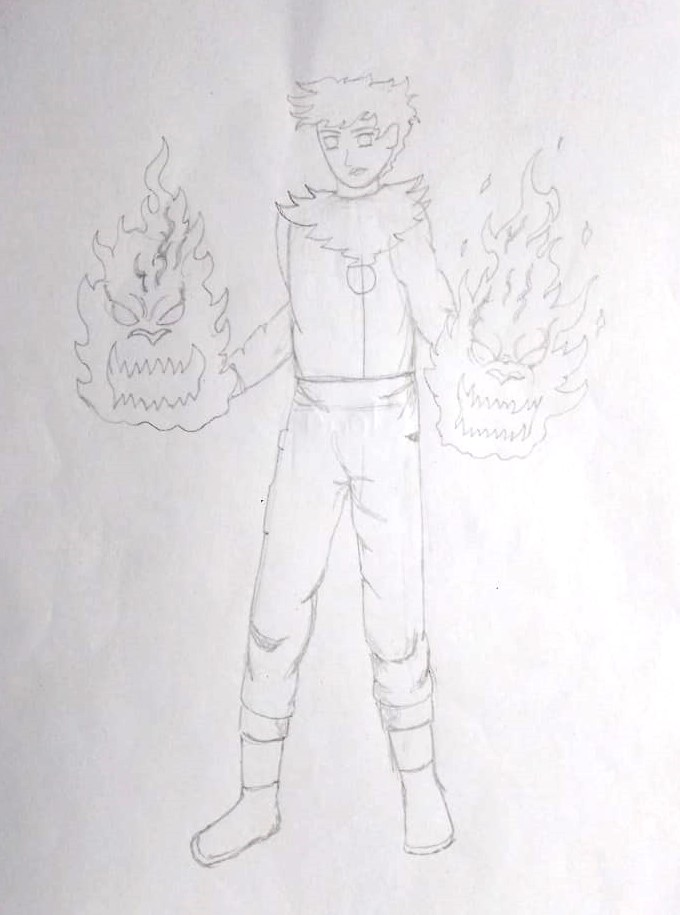
el hombre extendió la mano.
En su mano llevaba un cuchillo.
No parecía un arma común.
Era antiguo y extraño.
Cuando llegó frente a Gloria...
extendió la mano.
Y se lo entregó.
Gloria observó el cuchillo.
No entendía lo que estaba pasando.
¿Por qué se lo entregaba?
¿Por qué a ella?
Entonces levantó la mirada.
Y observó al hombre.
No se parecía en nada a Krista, quien había llevado el nombre del Halcón como una máscara.
Su odio.
Su ira.
Su resentimiento.
Su maldad.
Su hipocresía.
Todo parecía escapársele por los poros.
Pero aquel hombre...
era diferente.
Gloria no sentía odio en él.
Ni crueldad.
Ni siquiera sentía peligro.
Había algo extraño.
Algo que no podía comprender.
Tranquilidad.
Paz.
210Pero había algo más.
Por alguna razón, aquel hombre le resultaba familiar.
Como si una parte de ella lo reconociera.
Como si, detrás de aquella mirada, hubiera algo que pertenecía a su propia historia.
Entonces Gloria volvió a mirar el cuchillo.
¿Por qué?
Si aquel hombre no era malo...
¿Por qué le estaba entregando un arma?
¿Realmente quería luchar contra ella?
El hombre permaneció en silencio.
Había visto algo en Gloria que los demás no podían ver.
Sabía que ella llevaba tiempo siendo perseguida por algo.
Algo que todavía no comprendía.
Algo que había seguido sus pasos desde mucho antes de que él llegara.
Pero también sabía otra cosa.
Aquello que perseguía a Gloria terminaría encontrándolo a él.
Tal vez por eso sus caminos habían sido reunidos.
Tal vez por eso aquel halcón había escogido aquel momento.
Tal vez por eso estaban allí.
El hombre levantó lentamente la mirada hacia el cielo.
Durante toda su vida había aprendido que no todo aquello que ocurre puede ser comprendido de inmediato.
A veces, la Fuente permite que una persona vea solamente lo necesario para reconocer el camino que tiene delante.
Y también sabía que nada en la vida es coincidencia.
211Ese hombre había observado los entrenamientos de Gloria.
También había observado al Hombre Misterioso de la Nieve.
Había visto cómo luchaban.
Había visto cómo utilizaban sus poderes.
Había visto aquello que todavía permanecía dormido dentro de Gloria.
Sabía algo que Gloria todavía ignoraba.
Aún le faltaba despertar un poder.
Y sabía que ningún entrenamiento sería suficiente.
Ese poder solamente podía aparecer cuando Gloria se encontrara frente a algo que realmente la obligara a superarse.
Por eso le había entregado el cuchillo.
No porque quisiera enfrentarla.
Sino porque necesitaba desafiarla.
El hombre finalmente habló.
—Te entregué ese cuchillo para desafiarte.
Gloria permaneció inmóvil.
—¿Por qué a mí?
El hombre miró al halcón.
—Porque él te escogió.
Gloria volvió la mirada hacia el ave.
—Solo puede existir un heredero.
Aquellas palabras hicieron que el corazón de Gloria se detuviera por un instante.
El hombre continuó:
—Por eso estoy aquí.
212Gloria no respondió.
Por primera vez comenzó a preguntarse si se había equivocado.
Tal vez había interpretado mal sus intenciones.
Tal vez aquel hombre realmente era su enemigo.
O tal vez...
él tampoco quería aquella batalla.
Pero el hombre sabía que estaba haciéndole daño.
Sabía que aquellas palabras podían destruir la confianza que Gloria había comenzado a sentir.
Y aun así...
continuó.
Porque creía que era la única manera de despertar aquello que permanecía dormido dentro de ella.
Gloria bajó la mirada.
No sabía qué pensar.
No sabía si debía confiar en él.
No sabía si debía luchar.
Pero había algo que sí sabía.
Si aquel hombre decía la verdad...
Si realmente existía un heredero...
entonces debía proteger a su familia.
Una vez más.
Sus manos comenzaron a temblar.
La energía empezó a concentrarse.
El suelo vibró.
El aire cambió.
Y entonces...
algo apareció entre sus manos.
213Una energía que tomó dos formas.
Dos presencias.
Sus cuerpos estaban hechos de energía.
Sus ojos brillaban.
Sus colmillos estaban descubiertos.
Y ambos parecían enfurecidos.
El hombre observó las criaturas.
Por primera vez...
sus ojos cambiaron.
—Dos lobos...
Los cuatro retrocedieron.
La presión de aquella energía comenzó a extenderse por todo el lugar.
Gloria levantó la mirada.
El hombre hizo lo mismo.
Los dos comprendieron que ya no había vuelta atrás.
Se posicionaron.
Uno frente al otro.
Dos personas que habían aprendido desde siempre a verse como enemigos.
Dos destinos que habían sido separados antes incluso de conocerse.
Y ahora...
estaban a punto de enfrentarse.
Entonces ocurrió algo imposible.
El cielo cambió.
215La Luna comenzó a cubrirse lentamente bajo la sombra de la Tierra.
Poco a poco...
su luz desapareció.
Hasta que su superficie comenzó a teñirse de rojo.
Una Luna de sangre.
El mundo quedó en silencio.
La oscuridad descendió sobre el lugar.
Por un instante...
parecía que el cielo entero había dejado de pertenecer a los hombres.
Y entonces...
el eclipse alcanzó su punto máximo.
El mundo pareció detenerse.
Nadie habló.
Nadie entendía lo que estaba sucediendo.
Pero algo más estaba ocurriendo.
La energía de ambos comenzó a aumentar.
Como si aquel fenómeno hubiera abierto una puerta.
Como si el cielo estuviera respondiendo al encuentro de aquellos dos poderes.
216Gloria abrió los ojos.
Y todos pudieron verlo.
Su Byakugan había cambiado.
Ya no era el mismo.
Alrededor de sus ojos apareció una nueva estructura.
Diez tomoes.
Tenmeigan — El Ojo de los Destinos había despertado.
Una evolución que nadie había visto antes.
El hombre también cambió.
La arena comenzó a elevarse.
Se concentró lentamente sobre su rostro.
Y entonces...
un tercer ojo se abrió.
El hombre levantó la mirada.
La arena comenzó a girar a su alrededor.
ʿAyn al-Kuthbah.
Un poder que había permanecido oculto...
acababa de despertar.
Un ojo creado completamente a partir de la arena.
Los dos poderes se encontraban frente a frente.
218El cielo estaba oscuro.
La tierra comenzaba a vibrar.
Como si algo gigantesco se estuviera moviendo debajo de ellos.
Parecía que el mundo entero estaba esperando el primer golpe.
Y por un instante...
Una grieta apareció en la tierra.
Desde las profundidades...
comenzó a emerger algo.
Primero fue el sonido.
Metal contra piedra.
Después, otro.
De la tierra comenzaron a surgir estructuras.
Tubos.
Placas de metal.
Engranajes.
Cables.
Columnas.
Una enorme estructura industrial comenzó a elevarse desde las profundidades.
Parecía una ciudad.
Pero no lo era.
Era una máquina.
Una máquina gigantesca.
Una máquina que parecía haber estado enterrada durante siglos.
219Aquello no se sentía como chakra.
No era magia.
No era energía espiritual.
Era algo completamente diferente.
Algo frío.
Algo antiguo.
Algo que parecía haber estado esperando.
Y entonces...
ambos lo comprendieron.
Habían sido divididos.
Habían crecido creyendo que debían enfrentarse.
Habían heredado una enemistad.
Pero ahora, frente a aquella fuerza desconocida, comprendían algo diferente.
Su encuentro no había sido una coincidencia.
Sus caminos habían sido reunidos por algo mucho más grande que ellos.
La Fuente.
Aquella fuerza que regía la vida más allá de todo entendimiento.
Tal vez había sido su voluntad la que había hecho que sus caminos se cruzaran.
Tal vez había sido la razón por la que ambos habían llegado hasta aquel lugar.
221El hombre observó la maquinaria.
Después miró a Gloria.
Gloria no lo comprendía.
Ella miró al hombre que tenía frente a ella.
Había algo en su mirada.
Algo que no había visto antes.
Porque aquel hombre había conseguido despertar en ella un poder que ni siquiera ella sabía que poseía.
Y quizás...
él sabía mucho más de lo que estaba dispuesto a revelar.
Aquello no era simplemente una construcción.
Era una civilización industrial enterrada.
Y en algún lugar, detrás de aquella maquinaria...
alguien estaba esperando.
El eclipse continuaba sobre ellos.
Y la máquina seguía despertando.
Dos destinos que habían sido obligados a enfrentarse habían sido reunidos por algo mucho más grande que ellos.
El verdadero enemigo acababa de revelarse.
222Mientras tanto...
En el océano...
todo estaba completamente oscuro.
No había luz.
No había sonido.
Solo el movimiento de las aguas profundas.
Una enorme criatura atravesó la oscuridad.
Después...
otra.
Las profundidades comenzaron a iluminarse.
Y finalmente pudimos ver qué estaba ocurriendo.
224El monstruo marino estaba luchando contra un calamar colosal.
Sus tentáculos rodeaban el cuerpo de la criatura.
El agua se desplazaba violentamente.
El monstruo marino intentaba liberarse.
Pero el calamar no cedía.
Y entonces...
el monstruo marino finalmente comprendió.
Por más que había intentado aislar a Dominic...
por más que había intentado mantenerlo solo...
indefenso...
débil...
sin esperanza...
225había cometido un error.
Aquel niño había utilizado todo su poder.
Todo su sufrimiento.
Toda su desesperanza.
Para llamar a alguien.
Para llamar a un ser que pudiera ayudarlo.
Pero no era cualquier ser, era un reino.
Era una criatura igual de grande...
pero incluso más poderosa...
que aquel monstruo marino que lo mantenía cautivo.
Los dos monstruos volvieron a chocar.
El océano entero tembló.
Y la batalla continuó.
← Volver al índice 226EL HEREDERO DEL HALCÓN — PARTE III
La Tormenta del Emperador
El océano continúa agitado.
Las aguas están cubiertas por los restos de la batalla.
Enormes olas golpean la superficie.
Entonces...
Una gigantesca sombra comienza a elevarse desde las profundidades.
El calamar gigante emerge lentamente del océano.
Sus enormes tentáculos rodean al monstruo marino y lo elevan sobre la superficie.
227El monstruo intenta liberarse.
No puede.
Los enormes ojos del calamar observan fijamente al monstruo.
—Revela tu verdadero nombre.
El monstruo permanece en silencio.
Los tentáculos se tensan.
—Diles cómo te llaman.
Silencio.
Finalmente, el monstruo levanta la cabeza.
—Al-Masih ad-Dajjal.
Silencio.
A lo lejos...
El Hombre de la Arena se queda completamente inmóvil.
Sus ojos cambian ligeramente.
La arena que giraba alrededor de sus pies parece detenerse por un instante.
229Ese nombre...
Lo conoce.
No es un nombre cualquiera.
—Dajjal...
Lo pronuncia apenas en un susurro.
Nadie parece escucharlo.
El Hombre de la Arena vuelve la mirada hacia el monstruo.
Hay algo en aquel nombre que ha despertado un recuerdo.
Algo que viene de un lugar cercano.
Algo que él conoce demasiado bien, un nombre asociado con engaños, con destrucción
Con alguien que se presenta ante los demás como aquello que nunca fue.
El Hombre de la Arena aprieta lentamente los puños.
Entonces el calamar vuelve a hablar.
—Dilo de una forma que todos puedan entender.
El monstruo permanece en silencio durante unos segundos.
Finalmente responde:
—Soy...
Una pausa.
—El falso mesías.
El océano parece detenerse.
El calamar observa al monstruo.
—Te has estado haciendo pasar por alguien que no eres en realidad.
230Entonces...
El suelo comienza a temblar.
La máquina, que había salido de la tierra, comienza a moverse.
Sus mecanismos comienzan a activarse.
El Emperador, sin decir una palabra...
entra en su interior.
231El Hombre de la Arena observa la máquina.
Su expresión permanece seria.
Sabe lo que tiene que hacer.
Extiende lentamente una mano.
Unos cuantos granos de arena comienzan a levantarse.
La arena comienza a girar alrededor de él violentamente.
La tormenta crece.
El viento aumenta.
La arena comienza a desplazarse hacia la máquina.
La tormenta golpea la estructura.
El viento cambia de dirección.
El Hombre de la Arena levanta la mirada.
El suelo tiembla.
El Hombre de la Arena mira hacia la máquina.
Dentro de la máquina...
El Emperador permanece inmóvil.
Sus sistemas comienzan a responder.
El cielo cambia nuevamente.
Un rayo atraviesa las nubes.
233El Hombre de la Arena comprende algo.
El Emperador no está simplemente utilizando la máquina.
Está controlando el clima.
Una serie de imágenes atraviesa la mente del Hombre de la Arena.
Una ciudad destruida por un terremoto.
El océano elevándose sobre una costa.
Un huracán atravesando una ciudad.
Un bosque consumido por las llamas.
Otra ciudad.
Otra catástrofe.
Otra.
Y otra.
Los ojos del Hombre de la Arena cambian.
Ahora comprende.
Todos aquellos desastres...
No eran acontecimientos aislados.
Eran parte de algo mucho mayor.
234Su mirada vuelve hacia la máquina.
El Emperador está detrás de todo.
Terremotos.
Maremotos.
Huracanes.
Incendios.
El mundo entero ha estado sufriendo.
Y ahora sabe quién está provocándolo.
El Hombre de la Arena aprieta los puños.
La arena comienza a levantarse nuevamente.
Mucho más rápido.
Mucho más violenta.
235El viento atraviesa todo el campo.
La tormenta crece hasta cubrirlo todo.
Los demás tienen que protegerse el rostro.
La arena golpea la máquina.
Pero esta vez...
no solamente la rodea.
Pequeños granos comienzan a introducirse por sus estructuras.
Entre las conexiones.
Entre los mecanismos.
En espacios diminutos.
La máquina continúa funcionando.
Pero la arena sigue entrando.
Más.
Y más.
Y más.
Primer plano de una pequeña abertura.
Un grano de arena atraviesa.
Luego otro.
Luego cientos.
Los sistemas continúan funcionando.
Pero algo está ocurriendo en su interior.
El Hombre de la Arena permanece en medio de la tormenta.
237Su furia aumenta.
La arena se eleva alrededor de su cuerpo.
El cielo se vuelve cada vez más oscuro.
Entonces...
La tormenta se detiene durante un instante.
Silencio.
Todos levantan la mirada.
La luna aparece entre las nubes.
Una luz blanca comienza a iluminar el cielo.
La luna continúa revelándose...
hasta convertirse en una enorme luna llena.
Hermosa.
Imponente.
Su luz cubre el campo de batalla.
Entre la tormenta...
una silueta aparece.
Una figura.
La silueta avanza lentamente.
Entonces se detiene.
IAN.
239Ha regresado.
Pero algo es diferente.
Su apariencia ha cambiado.
Cuatro ojos observan el campo de batalla.
Una sonrisa aparece en su rostro.
Su nuevo poder se hace evidente.
Pero Ian sigue siendo Ian.
Mira alrededor.
Observa la tormenta.
Observa la máquina.
Observa al Hombre de la Arena.
Entonces encuentra a Gloria.
Ian sonríe.
Le guiña un ojo.
—Mira quién sigue metiéndose en problemas...
Gloria lo mira durante unos segundos.
241Casi parece no poder creer que haya aparecido precisamente ahora.
Ella le contesta:
—¿Y tú todavía sigues corriendo hacia el peligro?
—¿En serio vas a bromear en este momento?
Ian mantiene su sonrisa.
No responde.
Una nueva ráfaga de arena atraviesa el lugar.
Gloria se cubre inmediatamente el rostro.
243Mira de reojo a Ian.
—Será mejor que te cubras.
La arena golpea con mayor fuerza.
—La arena se está poniendo pesada.
Ian observa la tormenta.
Gloria vuelve la mirada hacia el campo de batalla.
Ian finalmente habla.
Su tono sigue siendo tranquilo.
—No vine por ti.
Gloria lo mira.
Ian dirige sus cuatro ojos hacia otro punto.
Hacia Damian.
—Vine a proteger a Damian.
Gloria permanece en silencio.
No había tiempo para preguntar. Sabía que, si Ian había dicho aquello, era por una razón.
245Otra ráfaga golpea con violencia.
Gloria se cubre completamente el rostro.
Después...
se interna en la tormenta de arena.
Su silueta desaparece lentamente entre el viento.
Ian permanece afuera.
Observándola desaparecer.
Ian vuelve lentamente la mirada hacia Damian.
Su sonrisa desaparece.
Por primera vez desde que apareció...
parece completamente serio.
246La tormenta continúa rugiendo.
La máquina continúa funcionando.
El Hombre de la Arena permanece frente al Emperador.
Y en algún lugar dentro de aquella máquina...
la arena continúa avanzando.
La luna llena ilumina todo el escenario.
Dentro de la máquina...
Un pequeño grano de arena cae sobre uno de sus sistemas.
Silencio.
Pantalla negra.
CONTINUARÁ...
247El heredero del Halcón — Parte IIII: La última revelación
La luz en la oscuridad
La tormenta de arena cubre todo.
Gloria se adentra en la tormenta de arena.
No busca al enemigo.
Busca algo.
Finalmente lo encuentra.
Lo toma y se mueve mientras intenta distinguir una figura entre la tormenta, lo encuentra.
—¡Fantasma!
A lo lejos aparece él.
Cubierto por la arena, casi irreconocible.
Gloria llega hasta él y le entrega el salveque.
248—Toma.
El fantasma la mira sin comprender.
—¿Qué hay dentro?
—Adentro encontrarás la luz cuando llegue la oscuridad.
Hace una pausa.
—Pero recuerda algo: nadie más puede hacerlo por ti.
El fantasma levanta la mirada.
Gloria lo observa directamente.
—Te quiero mucho.
El viento aumenta.
—Y quiero que recuerdes algo de cuando llegaste, le dice Gloria.
—Llegaste con la nieve.
Gloria sonríe ligeramente.
—Parecías un fantasma. Estabas completamente cubierto de blanco.
250La arena comienza a envolverlos.
—Pero no venías solamente con la nieve.
Él la mira.
—Venías con un caballo.
Pausa.
—Y estabas rodeado de árboles.
—Lo que encuentres ahí dentro será tu decisión.
—Puedes usarlo...
—O puedes dejarlo ahí.
Pero para comprender lo que ocurrió después, debemos detenernos un momento en los pensamientos del Fantasma de la Nieve.
Aquel hombre había llegado con una misión clara: entrenarlos a todos, ayudarlos a descubrir sus capacidades y llevar sus habilidades más allá de los límites que ellos mismos creían tener.
Había observado sus movimientos, corregido sus errores, reconocido sus fortalezas y señalado aquello que todavía no eran capaces de ver en sí mismos.
251Había pasado tanto tiempo enseñándoles a mirar hacia dentro que hacía mucho tiempo no se había detenido a hacer lo mismo consigo.
Y entonces Gloria no le estaba mostrando algo completamente desconocido. Eso era precisamente lo que más le inquietaba.
Aquello que Gloria había despertado en él ya estaba allí.
Él lo sabía.
Había sentido esa fuerza antes. Había percibido sus señales, había rozado sus límites, incluso había sospechado que existía algo dentro de él que todavía no comprendía.
Pero nunca había conseguido verlo con claridad. Nunca había sabido cómo alcanzarlo. Y, quizá, en el fondo, nunca se había permitido intentarlo.
Había dedicado su vida a desarrollar el potencial de otros mientras dejaba el suyo propio en silencio.
Hasta ese momento.
Por primera vez, alguien no estaba pidiéndole que enseñara.
Alguien le estaba mostrando algo sobre sí mismo.
252Y esa revelación lo obligó a enfrentarse a una verdad que había permanecido frente a él durante años: no había llegado hasta allí únicamente para entrenarlos a ellos. Él también tenía algo que despertar.
Gloria no le había dado una nueva habilidad.
Le había mostrado una puerta que siempre había estado dentro de él.
Y ahora él tenía que decidir si finalmente se atrevía a cruzarla.
Siempre había existido un límite.
Un punto donde un ser humano debía decidir hasta dónde podía llegar.
Qué podía soportar.
Qué podía hacer.
Y qué jamás debería hacer.
Pero...
¿Qué ocurría cuando finalmente tenías el poder para destruir aquello que te había destruido?
¿Qué ocurría cuando dejabas de huir?
253¿Cuando descubrías que las agallas que necesitabas para sobrevivir no habían aparecido de repente...
siempre habían estado dentro de ti?
¿Qué ocurría cuando el poder que habías temido durante toda tu vida finalmente despertaba?
El Fantasma de la Nieve está en el punto exacto.
No porque su pasado hubiera sido falso.
Sino porque ya no podía seguir escondiéndose detrás de él.
Pero ahora tenía que elegir.
Mucho antes de comprenderlo, el Fantasma de la Nieve ya había escuchado aquella historia.
Una noche, años atrás, su abuelo lo había llamado a solas.
—Hay algo que debes saber —le dijo.
Él permaneció en silencio.
—Durante años has creído que te trajimos aquí solo para protegerte. No era así.
254El anciano caminó lentamente hasta una antigua mesa de piedra. Sobre ella había un símbolo que él había visto innumerables veces, aunque nunca había comprendido su significado.
—Entonces, ¿por qué me trajeron?
—Porque tú no eres quien crees ser.
—¿Quién soy? —preguntó, sin entender nada.
—Eres el séptimo.
El Fantasma de la Nieve miró el símbolo.
—¿El séptimo qué?
—El último de una línea que debía haber terminado hace mucho tiempo.
El silencio llenó la habitación.
—Tu nombre fue borrado. Tu historia fue ocultada. Y aquellos que te protegieron lo hicieron para que nadie pudiera encontrarte.
El fantasma negó lentamente con la cabeza.
El anciano sostuvo su mirada.
255—¿Y qué soy? —preguntó finalmente el Fantasma de la Nieve.
—Eres el heredero de una sangre que muchos creyeron extinguida.
—La sangre del dragón.
El Fantasma de la Nieve no dijo nada.
Aquellas palabras quedaron suspendidas en el aire.
Por primera vez, el Fantasma de la Nieve comprendió que su pasado no había sido borrado.
Había sido ocultado.
Y entonces recordó aquel número.
VII.
No era un rango.
No era una designación.
Era una herencia.
El último.
El Fantasma de la Nieve había escuchado la verdad.
Había recibido las respuestas.
256Pero no las había comprendido.
Hasta ahora.
Porque el anciano le había revelado quién era.
Gloria le había mostrado lo que significaba serlo.
Ella había despertado algo que él llevaba toda su vida intentando ignorar. Algo que siempre había estado allí, esperando ser reconocido.
Por primera vez, las palabras del anciano dejaron de parecer una historia sobre un hombre del pasado.
Eran sobre él.
Sobre sus capacidades.
Sobre su sangre.
Sobre aquello que había intentado esconder detrás del nombre de Fantasma de la Nieve.
Cerró los ojos.
Ahora lo entendía.
Su abuelo le había entregado la verdad.
Gloria había sido quien consiguió que pudiera verla.
257Y ahora, frente a todo lo que acababa de descubrir sobre sí mismo, comprendía que el Fantasma de la Nieve nunca había sido su verdadera identidad.
Había sido el nombre que utilizó para esconderla.
Ahora tenía que decidir si continuaría viviendo detrás de ese nombre...
o si finalmente aceptaría al hombre que había existido desde el principio.
El Fantasma de la Nieve abre el salveque, por curiosidad.
Dentro encuentra unas prendas.
Las toma lentamente.
Durante unos segundos las observa.
Después comienza a colocárselas.
La capa.
La ropa.
Los detalles que Gloria había dejado para él.
Y finalmente encuentra el último elemento.
Un emblema.
Un dragón.
258Pero no es el símbolo que conocía.
Él lo observa.
Durante generaciones, el dragón había sido representado con tres cabezas.
Tres voluntades.
Tres figuras unidas por el mismo poder.
Pero este símbolo solamente tiene una cabeza.
Por primera vez, no necesitaba que nadie completara aquello que era.
Pasa los dedos sobre el emblema.
Y comprende.
No necesita convertirse en otra persona.
Había luchado contra los demás, pero también contra sí mismo. Había enfrentado el miedo, la soledad, la duda y el dolor.
Y en cada batalla se había hecho más valiente, más inteligente, más fuerte, más capaz, más resistente y más consciente del poder que llevaba dentro.
259Y entonces lo entendió.
Ese lugar siempre había sido suyo.
No porque alguien se lo hubiera entregado.
No porque alguien hubiera decidido que era digno.
Sino porque había llegado hasta allí por sí mismo.
La revelación había llegado al fin.
Él solo tenía que aceptar que la sangre del dragón siempre había corrido por sus venas.
260La tormenta
La tormenta de arena cubría todo.
Gloria avanzaba entre la arena, intentando distinguir el camino mientras el viento golpeaba con fuerza su manto.
Su objetivo era claro.
Encontrar al Emperador.
Pero en medio de la tormenta, apenas podía ver unos metros delante de ella.
Entonces distinguió una figura.
Se detuvo.
Era el Hombre de la Arena.
Gloria bajó lentamente el manto que cubría su rostro para que pudiera reconocerla.

Él la observó durante unos segundos.
—¿Qué haces aquí?
—Busco al Emperador.
El Hombre de la Arena miró hacia la tormenta.
—Es peligroso.
Gloria no apartó la mirada.
—Precisamente por eso deberías buscar un lugar seguro antes de que sea demasiado tarde.
Ella estaba a punto de continuar cuando él volvió a hablar.
—Hay algo que quiero mostrarte.
Gloria se detuvo.
—¿Qué cosa?
—Si estás segura de que quieres ir a buscar al Emperador... hay algo que debes saber antes.
El Hombre de la Arena extendió una mano.
—Toma mi mano. Si seguimos caminando así, podemos perdernos en la tormenta.
Gloria lo miró.
Durante unos segundos no hizo nada.
Finalmente, la tomó.
Ambos comenzaron a caminar entre la arena.
El viento hacía desaparecer sus huellas casi inmediatamente.
Avanzaron hasta encontrar un lugar protegido de la tormenta.
Era una pequeña zona resguardada entre las rocas.
Allí el ruido del viento disminuía.
Ambos se sentaron frente a frente.
El Hombre de la Arena se quitó lentamente los guantes.
Después retiró el pañuelo que cubría parte de su rostro.
Gloria también bajó su manto.
Por primera vez podían verse directamente.
Él permaneció en silencio durante unos segundos.
Entonces preguntó:
—¿Alguna vez te preguntaste por qué siempre nos obligaron a odiarnos?
Gloria frunció ligeramente el ceño.
—No.
Hizo una pausa.
—Nunca lo había pensado.
Bajó la mirada durante un instante.
—Realmente no lo entiendo. No sé si nos hicieron odiarnos... o simplemente desconfiar el uno del otro.
Volvió a mirarlo.
—¿Por qué?
El Hombre de la Arena sostuvo su mirada.
—¿Qué crees que pasaría si un poder como el tuyo y uno como el mío se unieran?
Gloria no respondió.
No entendía la pregunta.
Él lo sabía.
Sabía que Gloria todavía desconocía la verdadera naturaleza de su propio poder.
Sabía que aún no comprendía muchas de las cosas que ocurrían a su alrededor.
Y también sabía que, hasta ese momento, ella había visto su propio poder como algo separado del suyo.
Pero quizá nunca habían sido tan diferentes como les hicieron creer.
—Todavía no lo entiendes —dijo él.
Gloria lo observó en silencio.
—¿Entender qué?
El Hombre de la Arena no respondió inmediatamente.
La miró como si estuviera intentando decidir cuánto podía revelarle.
Porque aquello que estaba a punto de mostrarle podía cambiar para siempre la forma en que Gloria entendía su propio poder...
y la razón por la que ambos habían sido enfrentados desde el principio.
El Hombre de la Arena extendió nuevamente la mano.
—Dame tu mano.
—¿Para qué? —preguntó Gloria.
—Para mostrarte de lo que estoy hablando.
Sabía que aquel hombre conocía algo que todavía no le había dicho. Quizá aquello que quería mostrarle tenía que ver precisamente con eso.
Finalmente acercó su mano.
Él tomó la suya.
Un simple toque.
Nada más.
Y entonces ocurrió.
Una sensación.
Como si, durante un instante, algo hubiera atravesado la distancia que siempre había existido entre ellos.
El Hombre de la Arena cerró los ojos.
Y respiró lentamente.
—Puedo sentirla.
Gloria frunció el ceño.
—¿Sentir qué?
Él abrió los ojos.
La estaba mirando de una manera diferente.
—Tu soledad.
Gloria se quedó inmóvil.
—¿Qué?
—Puedo sentirla.
Su voz era tranquila.
—La has llevado contigo durante mucho tiempo.
Gloria intentó retirar la mano, pero él no la sujetó con fuerza. Simplemente dejó que permaneciera allí.
—No sabes lo que estás diciendo.
—Sí lo sé.
La miró directamente.
—Porque también puedo sentir que intentas esconderla.
Gloria guardó silencio.
Él continuó.
—Has aprendido a luchar con ella. A vivir con ella. Incluso a hacer que los demás crean que no existe.
Una pausa.
—Pero sigue ahí.
Gloria no respondió.
Por primera vez, no sabía qué decir.
Porque aquello no era algo que él pudiera haber descubierto observándola desde fuera.
Lo estaba sintiendo la primera vez que la vio.
Había sentido su dolor.
El peso de sus palabras.
Aquello que había detrás de su silencio.
Pero entonces no había entendido qué era.
Porque no era algo que pudiera atribuir a sus palabras, a su mirada o a la forma en que se comportaba.
El Hombre de la Arena bajó ligeramente la mirada hacia sus manos.
—Ahora entiendes por qué nos hicieron desconfiar el uno del otro.
Gloria lo observó.
—No.
Él levantó nuevamente los ojos.
—Porque si hubiéramos descubierto esto antes...
Dejó la frase incompleta.
Gloria sintió un extraño vacío en el pecho.
—¿Qué habría pasado?
El Hombre de la Arena respondió:
—Nos habríamos encontrado mucho antes.
Gloria permaneció en silencio durante unos segundos.
Entonces preguntó:
—¿Y qué habría pasado si nos hubiéramos encontrado antes?
El Hombre de la Arena la observó.
Esta vez tardó en responder.
—Quizá nunca habríamos aprendido a odiarnos.
Gloria no apartó la mirada.
—Quizá habríamos descubierto que no éramos tan diferentes.
Una pausa.
—Quizá habríamos entendido antes lo que ahora apenas comenzamos a comprender.
Gloria miró sus manos.
Seguían unidas.
Hay cosas que pueden atravesar cualquier distancia.
Quizá nuestros poderes nunca estuvieron destinados a enfrentarse.
El Hombre de la Arena la observó durante unos segundos.
—Si de verdad quieres encontrar al Emperador...
Hizo una pausa.
—Entonces ya no tienes que hacerlo sola.
Gloria levantó la mirada.
Él volvió a ponerse los guantes y tomó su pañuelo.
—Yo también voy para allá.
Gloria lo miró en silencio.
Después de todo lo que acababa de descubrir, aquella era quizá la primera vez que ambos tomaban una decisión en la misma dirección.
La tormenta continuaba rugiendo a su alrededor.
Pero esta vez no tendrían que atravesarla por separado.
Sin que ninguno de los dos lo supiera, algo más estaba ocurriendo.
El contacto entre ellos había hecho que sus poderes se cruzaran.
A kilómetros de distancia, en medio de la tormenta, la nave del Emperador comenzó a estremecerse.
Dos caminos que jamás deberían haberse encontrado.
Ahora estaban unidos.
Y durante un instante...
ambos vieron lo mismo.
El tiempo pareció detenerse.
La tormenta desapareció.
El mundo dejó de existir a su alrededor.
Ya no había arena.
Ya no había cielo.
Ya no había distancia.
Solo una inmensa extensión de posibilidades.
Gloria podía ver aquello que él veía.
Él podía ver aquello que ella veía.
Era una nueva forma de percepción.
La capacidad de contemplar las posibilidades antes de que se convirtieran en realidad.
Y en aquel instante comprendieron algo.
Sus poderes podían coexistir.
Muy lejos de ellos, en la nave del Emperador, una grieta atravesó su estructura.
Después otra.
El metal comenzó a separarse.
Y finalmente...
la nave se partió en dos.
Una nueva forma de percepción.
No destruye aquello que mira.
Encuentra aquello que puede ser destruido.
Al principio, creyeron que aquel ojo simplemente les permitía ver más lejos.
Sin saber todavía qué habían creado: El Ojo que alcanza la Raíz del Qadar.
El sueño de Damian
El poder del Tenseigan era uno de los poderes menos comprendidos.
Quizá porque era el ojo del poder divino, entregado a aquellos que habían recibido una misión celestial.
Había cosas que Dios hacía de maneras que ningún ser humano podría llegar a comprender por completo.
Y quizá por eso el Tenseigan había concedido a Damian algo que nadie más podía entender.
La capacidad de proteger sus propios sueños.
Damian dormía.
Pero su sueño no estaba indefenso.
El Rey de la Noche no lo sabía.
Creyó que podía alcanzarlo mientras dormía. Creyó que, entrando en su sueño, Damian estaría completamente expuesto.
Pero se equivocaba.
Había alguien más protegiéndolo.
El Rey de la Noche avanzó hacia Damian.
Entonces, antes de que pudiera alcanzarlo, algo lo sujetó por detrás.
Ian.
Lo tomó con ambas manos y comenzó a arrastrarlo hacia abajo.
—Atacar por detrás a alguien que está durmiendo...
—Esto no es algo que te hayamos enseñado.
El Rey de la Noche forcejeó.
Ian apretó con más fuerza.
Y lo hizo caer.
—Antes de ser esto, eras un hombre.
El Rey de la Noche se quedó inmóvil por un instante.
—Los Hijos del Bosque te convirtieron en un arma para luchar contra los hombres.
Ian lo sujetó con más fuerza.
—Pero después no te detuviste. Te volviste contra ellos también.
El Rey de la Noche volvió a forcejear.
—Y desde entonces solo has sabido hacer una cosa: destruir.
Damian había subido hasta la rama de un árbol.
Desde allí observaba al Rey de la Noche con absoluta tranquilidad.
—Sé quién eres.
El Rey de la Noche levantó la mirada.
—Sé lo que fuiste... y sé en qué te convertiste.
Damian hizo una pausa.
—He visto tus movimientos antes de que los hagas. Sé cómo piensas. Sé qué buscas.
Sus ojos se fijaron en él.
—Y aun así no pudiste distinguir un clon de sombras de mí.
Una leve sonrisa apareció en su rostro.
—¿Y tú te haces llamar... el Rey de la Noche?
Aún sobre el árbol, Damian miró a Ian.
Durante unos segundos no dijo nada.
—¿Por qué?
Ian lo observó en silencio.
—¿Por qué haces esto?
Damian entrecerró los ojos.
—No es la primera vez que apareces cuando estoy en peligro.
Su mirada se volvió más seria.
—Incluso ahora... apareciste en mi propio sueño para protegerme.
Lo miró directamente.
—¿Por qué me proteges tanto, Ian?
Ian no respondió inmediatamente.
Damian continuó:
—No me digas que es porque tienes una misión.
Hizo una pausa.
—Quiero saber qué sabes de mí.
Ian sonrió ligeramente.
—Sabía que algún día me preguntarías eso.
Damian no apartó la mirada.
—Entonces responde.
Ian sujetó al Rey de la Noche y comenzó a llevárselo.
Damian lo observó.
—¿A dónde lo llevas?
Ian miró por encima del hombro.
—Esto me pertenece.
Hizo una breve pausa.
—Así que me lo llevo.
Damian frunció el ceño.
Ian continuó caminando.
—Y tú deberías empezar a aprender artes marciales.
Damian lo miró con sorpresa.
—Los que vienen por ti no siempre van a atacarte dentro de tus sueños. La próxima vez podrían venir preparados.
Ian siguió avanzando con el Rey de la Noche.
Ian se detuvo.
Durante unos segundos permaneció de espaldas.
Entonces respondió:
—Tú ya sabes la respuesta.
Y siguió caminando.
La última revelación.
El precio de una identidad
Krista apareció frente a Gloria.
—¿Tú crees que esa era la última revelación?
Gloria levantó la mirada.
—¿Qué hay de la mía?, dijo Krista.
Entonces Gloria bajó los ojos.
Entre sus dos manos sostenía la cadena de Krista.
La observó durante unos segundos.
No entendía cómo había llegado hasta ahí.
¿Cómo había podido llegar en ese momento?
¿Y cómo había terminado sosteniendo su cadena?
291Gloria la sujetó con más fuerza.
Krista no opuso resistencia.
—Hay algo que todavía no sabes sobre tu pasado.
Gloria no respondió.
Krista esperó.
—¿Es que acaso no quieres saber?
Gloria continuó en silencio.
Seguía pensando en cómo había llegado Krista hasta allí.
En cómo había aparecido.
En cómo ella estaba sosteniendo aquella cadena.
Entonces Krista gritó:
—¡Tú eres judía!
292Gloria levantó lentamente la mirada.
—¡La familia que te adoptó te crió como una judía porque ellos eran judíos! —continuó Krista—. ¡Ustedes son judíos!
Gloria permaneció en silencio.
Krista siguió hablando, cada vez más alterada.
Hasta que, finalmente, Gloria respondió con absoluta tranquilidad.
—¿Crees que no lo sabía?
Krista se quedó callada.
—Soy un libro abierto, Krista. ¿No lo recuerdas?
Gloria sostuvo la cadena entre sus manos.
293—¿Cómo no habría de saber algo así?
Hizo una pausa.
—La pregunta es otra.
Levantó la mirada.
—¿Por qué me lo dices precisamente ahora?
Krista no respondió.
Gloria continuó.
—¿Crees que porque soy judía debo inclinarme por una nación? ¿Por un partido político? ¿Por un país?
Su voz permaneció tranquila.
—Krista, por si no lo recuerdas, las personas que me criaron eran maestras o trabajaban en salud.
294—Mis tías trabajaron toda su vida con todo tipo de personas. Personas de distintos países. Distintas culturas.
—Viajaron. Conocieron el mundo.
Gloria hizo una pausa.
—Una de mis tías, la microbióloga, tuvo que atender a una persona que había llegado con radiación después de la Segunda Guerra Mundial.
—También viajó a Estados Unidos cuando todavía existían las filas separadas para personas de color y personas blancas.
Gloria apretó ligeramente la cadena.
295—Y me crió fuerte porque sabía que, por mi sangre indígena, lo más probable era que algún día tuviera que enfrentar acoso.
—Por eso me civilizó.
Una pausa.
—Aunque ella misma me dejó ser libre.
—Me dejó tener una infancia normal.
Gloria levantó los ojos hacia Krista.
—Y además, Krista...
Su expresión cambió.
296—Yo he visto los horrores que puede esconder la mente humana.
—Las perversiones más atroces.
—Las he visto.
—Y las he vivido en carne propia.
El silencio volvió a caer.
—Por eso no entiendo a qué viene todo esto.
Gloria respiró profundamente.
—Ahora bien...
Su tono cambió.
—Ya que estamos hablando de revelaciones, aclaremos algo.
297Krista permaneció inmóvil.
—¿Cuándo piensas decir que tu familia viene de Medio Oriente?
Gloria dio un paso hacia ella.
—¿Cuándo vas a decir que odias tu propia ascendencia y a tus antepasados?
—¿Cuándo vas a decir que por eso te vendiste a Estados Unidos y a Londres?
Krista apretó la mandíbula.
—¿Cuándo vas a decir que tu familia y tú se han dedicado a robar las identidades de mi familia adoptiva y la mía para aparentar que los judíos son ustedes?
298Gloria la señaló.
—¿Para dejarnos a nosotros en mal?
—¡En mal, Krista!
Su voz se elevó.
—¿Has visto lo que está pasando en Medio Oriente?
—¿Has visto lo que está pasando en África?
—¿Has visto lo que Estados Unidos les está haciendo a los inmigrantes?
Gloria avanzó otro paso.
—¿Y aun así decidiste meterte en política para convertirte en la cara del país y acercarlo a Estados Unidos?
—Dime algo, Krista.
—¿Desde cuándo nosotros tomamos partido automáticamente por lo que ocurre en otro lugar?
—Costa Rica ha mantenido una política exterior que históricamente ha defendido la paz, el derecho internacional y la solución diplomática de los conflictos.
299—Y cuando el Consejo de Seguridad no logra aprobar un alto el fuego porque uno de sus miembros permanentes utiliza el veto...
Gloria la miró fijamente.
—¿De verdad crees que eso significa que nosotros tenemos que convertirnos en parte de la guerra?
Hizo una pausa.
—¿Has visto al presidente palestino hablar sobre la imposibilidad de detener esta guerra y romper en llanto?
—¿Has visto el dolor de quienes llevan años intentando detenerla?
300—Dime, Krista...
—¿Tú crees que hoy me enorgullezco de ser judía?
Krista no respondió.
—¿Acaso lo crees?
La voz de Gloria se volvió más dura.
—¿Cuando fui criada por personas que no dependían de quién era judío y quién no?
—Personas que conocieron el Holocausto!.
—Personas que entendieron perfectamente lo que ocurre cuando empiezas a convertir una identidad en una excusa para odiar a los demás.
Gloria la miró directamente.
—¿Estás demente?
Krista apretó la mandíbula.
—¿De verdad crees que por ser parte de ellos no van a lastimarte, Krista?
Gloria levantó la mirada.
—¡Fueron ellos quienes lastimaron a tu hermano!
301La voz de Gloria volvió a elevarse.
—¡¿Cuándo vas a quitarte la maldita venda de los ojos?!
—¿Por qué no lo entiendes?
El silencio cayó entre las dos.
Gloria respiró profundamente.
Krista la observó durante unos segundos.
Entonces preguntó:
—¿Quién eres ahora que tienes un poder que ni siquiera entiendes?
Gloria la miró.
—¿Que no lo entiendo?
302Una pequeña sonrisa apareció en su rostro.
—Quieres que diga otra parte de la historia.
Su expresión se volvió seria.
—Sé que estás detrás de mi herencia.
—Sé que todos ustedes lo están.
Gloria levantó ligeramente la cadena.
—Y por eso los he dejado acercarse.
—Para que sigan alimentándose de algo que no les pertenece.
Krista permaneció inmóvil.
Gloria continuó:
—Mientras tanto...
Hizo una pausa.
—Ya viste a Damian.
—Ya viste al Hombre de la Nieve.
—Y con Dominic es solo cuestión de tiempo.
Gloria sostuvo su mirada.
—Mientras ustedes han estado entretenidos con todo ese dinero, fama y poder que creen tener...
—Nosotros hemos estado trabajando.
303Su expresión se volvió completamente seria.
—Unos caminan con Dios de su lado.
—Otros no.
Silencio.
—Nada está hecho al azar.
—Nada de lo que hacemos, Krista, está hecho al azar.
Gloria apretó la cadena.
—Este es el juego.
Krista intentó responder.
Pero Gloria continuó.
304—Yo no ocupo un lugar en este mundo como tú.
—Yo tomé la decisión de no elegir.
—Me quedé en el medio.
Gloria sostuvo su mirada.
—Y eso me dio la oportunidad de observar.
—De aprender.
—De elegir por mí misma.
Hizo una pausa.
—Por eso, eso no me convierte en una cosa ni en la otra.
305Su voz se endureció.
—Y eso es precisamente lo que nos diferencia a ti y a mí, Krista.
Gloria no apartó la mirada.
—Tú sacrificaste a todos por lo que querías.
—Y por eso nunca vas a conocer la verdadera libertad.
—¿Y qué?, respondió Krista.
—Tú no estarías dispuesta a pagar el precio.
—Por eso nunca tendrás lo que yo tengo.
306Gloria dio un último paso.
—¿De verdad crees que por ser parte de ellos no van a lastimarte?
Una pausa.
—¿De verdad crees que el Capitolio va a ayudarte para siempre?
Krista no respondió.
Gloria seguía sosteniendo la cadena.
Krista levantó lentamente la mirada.
Por primera vez, su expresión cambió.
—Tú no sabes lo que viene.
Gloria permaneció en silencio.
Krista la observó durante unos segundos.
—No tienes ni idea.
307El despertar de las profundidades
El Hombre de la Arena utilizó el poder del Ojo que alcanza la Raíz del Qadar.
Por primera vez, no intentó simplemente observar el futuro.
Su visión alcanzó la de Gloria.
Y logró entrar.
Allí estaba ella.
Gloria sostenía entre sus manos la raíz de Krista.
El Hombre de la Arena podía verla.
Podía escuchar lo que hablaban.
Y podía sentir la energía que se concentraba alrededor de aquella raíz.
Durante unos segundos permaneció en silencio.
Entonces miró a Gloria.
—Descubramos qué es lo que en realidad va a pasar.
Gloria levantó la mirada.
El Hombre de la Arena acercó lentamente una de sus manos hacia la frente de Krista.
313
La apoyó sobre ella.
Por un momento, los dos concentraron toda su energía.
El Ojo que alcanza la Raíz del Qadar volvió a manifestarse.
La visión comenzó a avanzar.
Pero esta vez no los llevó hacia un lugar conocido.
Todo comenzó a oscurecerse.
Descendieron.
Cada vez más.
Más allá de la superficie.
Más allá de las capas que podían imaginar.
Hasta llegar a un lugar completamente oscuro.
Gloria observó a su alrededor.
—¿Estamos entrando al interior de la Tierra?
315El Hombre de la Arena no respondió inmediatamente.
Él tampoco sabía qué estaba ocurriendo.
Pero podía sentir algo.
Algo que nunca habían sentido antes.
No era simplemente oscuridad.
Había movimiento.
Había presión.
Había energía acumulada.
Entonces aparecieron.
Grietas.
Una detrás de otra.
Extendidas en diferentes direcciones.
El Hombre de la Arena las observó.
—Parecen grietas —dijo.
Gloria permaneció mirando la oscuridad.
—Hay algo ahí.
316El Hombre de la Arena también lo sintió.
Algo se estaba moviendo.
Primero fue un sonido.
Después una vibración.
Y finalmente, desde el interior de la Tierra, algo comenzó a emerger.
Una enorme criatura apareció frente a ellos.
Los rodeó.
Era un Gusano de Fuego.
Ninguno de los dos dijo nada.
La criatura era demasiado grande.
Demasiado rápida.
Y completamente desconocida.
Krista permanecía inmóvil.
Sus ojos se movían siguiendo el movimiento de la criatura mientras esta los rodeaba.
317Entonces gritó:
—¿Qué está pasando?
Gloria no respondió.
El Hombre de la Arena tampoco.
Nunca habían visto aquella criatura.
No sabían qué era.
No sabían de dónde provenía exactamente.
Y, sobre todo...
No sabían por qué no los había atacado.
La criatura simplemente continuó moviéndose alrededor de ellos.
Como si estuviera buscando algo.
Como si estuviera mostrando algo.
La visión terminó.
318Durante unos segundos ninguno habló.
Finalmente, él dijo:
—Salió del interior de la Tierra.
Gloria lo miró.
—Y eso es precisamente lo que no entiendo.
Hizo una pausa.
—Una criatura que vive en las profundidades de la Tierra no debería estar saliendo de ahí sin una razón.
El Hombre de la Arena recordó las grietas.
Después recordó los terremotos.
—¿Y si las grietas que vimos fueron causadas por los terremotos?
Gloria levantó la mirada.
—Sabemos que los terremotos normalmente están relacionados con el movimiento de las placas tectónicas.
319—Las placas se mueven lentamente unas respecto de otras. Pueden separarse, chocar o deslizarse lateralmente.
—Y cuando el esfuerzo acumulado supera la resistencia de una falla, ocurre una ruptura y se libera energía en forma de ondas sísmicas.
El Hombre de la Arena permaneció atento.
—Entonces, si alguien está provocando artificialmente esos movimientos...
Gloria continuó:
—No solamente está provocando temblores.
—Está alterando el equilibrio de las fuerzas que actúan sobre la corteza.
—Y esto es justo lo que está haciendo el Emperador.
320El Hombre de la Arena volvió a pensar en las grietas que habían visto.
—Y si esa alteración ocurre repetidamente...
—Podría provocar nuevas fracturas —respondió Gloria— o reactivar fallas que ya existen.
El silencio volvió a caer.
Gloria miró hacia el suelo.
—¿Qué tipo de daño podría causarle a la Tierra algo tan invasivo que no es natural?
El Hombre de la Arena no respondió.
Sabía que la pregunta era mucho más grande que los terremotos que habían experimentado.
Gloria continuó:
—Recuerda algo que nos contaban hace mucho tiempo.
—La Tierra no siempre tuvo la forma que conocemos hoy.
—Los continentes estuvieron unidos en el pasado.
—Después comenzaron a separarse.
321El Hombre de la Arena la observó.
Gloria continuó explicando:
—Eso no ocurrió de un día para otro.
—La tectónica de placas funciona durante millones de años.
—Los continentes se desplazan porque forman parte de placas tectónicas que se mueven lentamente sobre la astenosfera, una región del manto superior que puede deformarse a lo largo de enormes períodos de tiempo.
—Es un proceso natural.
El Hombre de la Arena asintió.
—Y los terremotos forman parte de esa dinámica.
—Sí —respondió Gloria—. Pero los terremotos que hemos estado viviendo no son parte de un proceso normal.
Su expresión cambió.
322—Han sido provocados.
—Y eso significa que alguien está introduciendo energía y movimiento en un sistema que normalmente cambia a escalas geológicas.
El Hombre de la Arena comprendió la idea.
Gloria lo miró.
—¿Qué pasaría si alguien estuviera intentando reorganizar la Tierra?
El Hombre de la Arena permaneció pensativo.
Una ruptura.
Un desplazamiento.
Una alteración de las placas.
Y después otra.
El problema no era solamente provocar el movimiento.
Era no poder controlar lo que ocurriría después.
323—Aunque el Emperador tuviera el poder para provocar esos movimientos —dijo finalmente—, no podría controlar completamente el resultado.
Gloria asintió.
—Exactamente.
—Una cosa es provocar una ruptura.
—Otra muy distinta es controlar cómo se propaga.
El Hombre de la Arena recordó las grietas que habían visto.
—Y si una falla libera una cantidad enorme de energía...
—Puede afectar otras fallas —continuó Gloria.
—Puede cambiar las condiciones de presión.
—Puede producir desplazamientos.
—Y dependiendo del lugar, también puede desencadenar tsunamis o deslizamientos.
324Gloria hizo una pausa.
—Y en regiones volcánicamente activas, una alteración importante de las condiciones del sistema podría afectar otros procesos geológicos.
El Hombre de la Arena la observó.
La idea comenzaba a adquirir una dimensión mucho mayor.
Gloria recordó algo más.
—Hay una zona de la Tierra que se llama el Cinturón de Fuego del Pacífico.
El Hombre de la Arena levantó la mirada.
—Una enorme zona alrededor del océano Pacífico donde se concentra gran parte de la actividad sísmica y volcánica del planeta.
—Allí se encuentran los límites de varias placas tectónicas.
—Hay zonas de subducción, donde una placa oceánica se introduce debajo de otra.
—Por eso hay tantos terremotos y volcanes en esa región.
325El Hombre de la Arena la miró.
—Quiero verlo en un mapa.
Gloria buscó el mapa.
Lo colocó frente a ellos.
Ambos comenzaron a observarlo.
La forma.
La trayectoria.
La criatura que habían visto.
Gloria recordó inmediatamente su cuerpo.
—Espera...
Señaló el mapa.
326
—Mira la forma.
El Hombre de la Arena se acercó.
Compararon el mapa con lo que habían visto durante la visión.
La forma de la criatura seguía una trayectoria inquietantemente parecida a la del Cinturón de Fuego.
El Cinturón de Fuego rodeaba el Pacífico siguiendo una enorme cadena de límites tectónicos, volcanes y zonas sísmicamente activas.
El Hombre de la Arena permaneció mirando el mapa.
Entonces dijo:
—Creo que ya sé por qué no nos atacó.
Gloria lo miró.
—¿Por qué?
328Él volvió a observar la forma del Gusano de Fuego.
—Nos estaba alertando.
En ese momento, Krista habló.
—¿Qué pasa?
Gloria la miró.
Krista seguía intentando comprender lo que acababan de descubrir.
—El Emperador está haciendo algo terrible.
—¿Qué?
Gloria señaló el mapa.
—La Tierra, tal como la conocemos, podría llegar a desaparecer.
Krista permaneció inmóvil.
329—Probablemente pensabas que todo esto era solamente algo que el Emperador estaba planeando contra nosotros.
Gloria negó lentamente con la cabeza.
—No.
—Su plan también te incluye.
Krista abrió los ojos.
—Incluye a toda la humanidad.
—Porque si está intentando provocar una ruptura y una reorganización de la Tierra...
—No va a tener control sobre lo que pase después.
Krista miró nuevamente el mapa.
330Gloria permaneció en silencio durante unos segundos.
Entonces preguntó:
—Cuando todo comience a descontrolarse...
Hizo una pausa.
—¿Sabes a dónde se va a ir el Emperador?
Krista no respondió.
Gloria miró hacia arriba.
—A la Luna.
Silencio.
—Mientras nosotros nos quedamos aquí.
—Viviendo con la tormenta que él mismo provocó.
331El Hombre de la Arena observó nuevamente el mapa.
Ahora entendía por qué la criatura había aparecido.
No habían encontrado una respuesta.
Habían encontrado una advertencia.
Gloria permaneció mirando las líneas que recorrían el mapa.
—Los terremotos no son el objetivo.
El Hombre de la Arena la miró.
—Entonces... ¿qué está intentando hacer?
Gloria guardó silencio.
—Separar la Tierra.
332El Hombre de la Arena volvió a mirar el mapa.
—¿Pero para qué?
Gloria no respondió.
No tenían la respuesta.
Solo sabían que el Emperador estaba intentando alterar la estructura de la Tierra.
Y todavía no sabían qué esperaba encontrar cuando lo consiguiera.
333La puerta hacia lo desconocido
Escena I. La puerta hacia lo desconocido
El Hombre de la Arena, Gloria y Krista habían sido sorprendidos por el gusano de fuego, que había aparecido justo debajo de ellos y se había abalanzado sobre los tres con una intensidad aterradora.
De pronto, se encontraron ante una situación que les abrió una puerta hacia lo desconocido.
Por un instante, todo pareció detenerse. Al mismo tiempo, experimentaron algo extraño en sus cuerpos, o quizá en sus espíritus. No podían saberlo con certeza.
334Gloria todavía sostenía a Krista con ambas manos. Sabía que, para salvarlas a las dos, debía soltarla y permitir que cada una luchara por sobrevivir. Sin embargo, tampoco quería que Krista muriera.
Finalmente, la soltó.
El tiempo, que parecía haberse detenido, se mezcló con una luz tan intensa que les arrebató la visión durante unos instantes. Sin comprender lo que sucedía, de pronto se vieron envueltos en una oscuridad que, extrañamente, les transmitía seguridad.
Un sonido lejano pareció liberarlos de aquel peligro.
Entonces, el tiempo volvió a correr, aunque de una forma completamente extraña.
335Escena II. Los ojos que observaban al Fantasma de la Nieve
El Fantasma de la Nieve continuaba entrenando. Su destreza parecía haber aumentado, su concentración estaba más afilada que nunca y su espíritu había madurado.
337A lo largo de su vida había experimentado cosas muy extrañas. Había tenido sueños tan vívidos que parecían reales y había visto cosas de las que prefería no hablar. A veces, simplemente no sabía cómo explicarlas.
Sus poderes eran completamente nuevos para él, aunque siempre hubieran estado allí. Aquel poder que recorría su cuerpo le provocaba un calor que lo llenaba de energía y lo impulsaba a mejorar cada vez más.
Pero lo que vio aquel día fue todavía más asombroso.
Había ojos por todas partes.
Mirara hacia donde mirara, encontraba ojos que lo observaban. Ninguno lo atacaba. Todos lo miraban, y cada uno parecía mostrarle un mensaje diferente.
Aquellos símbolos le resultaban familiares. Sabía que los había visto de alguna manera, pero no lograba recordar dónde.
339¿Qué eran?
¿Por qué lo estaban mirando a él?
Se preparó para atacar mientras observaba a su alrededor, intentando descubrir de dónde provenían aquellas presencias.
341Entonces comenzó a escuchar una conversación.
PRIMERA VOZ:
—Dicen que solo quienes han estado cerca de la muerte pueden ver a Dios. También dicen que no puedes verlo, que es una luz muy luminosa y que, si la ves...
AMBAS VOCES, AL MISMO TIEMPO:
—¡Que si la ves, te puedes quedar ciego!
SEGUNDA VOZ:
—Sí, ya lo sé. Pero si después de que pasa esa luz esperas lo suficiente, te das cuenta de que Dios es como tú o como yo. Es simpático. Es un ser altruista y bondadoso, excepto cuando se enoja, porque cuando se enoja podemos sentir su furia: la furia de Dios.
343Las voces continuaron hablando, mientras los ojos permanecían a su alrededor.
LA VOZ:
—Suceden cosas que no podemos entender. El ser humano se ha contaminado con la mala energía que rodea al mundo. Pero las personas pueden recuperar la fe, el amor, la bondad, la memoria y la conexión.
—Dicen que, por cada ser de luz, existe también la oscuridad que debe equilibrarse. Es por eso que los he hecho pasar por todo esto: porque nadie más habría podido llegar hasta aquí.
344—El camino de Dios es muy duro, y ustedes lo han vivido en carne propia. Han decidido caminar el camino de Jesús, el camino de Santiago, y ayudar a quienes lo necesitan.
—El mundo es injusto y, para vivir en él, ustedes deben aprender a mezclarse con él. Aun así, han logrado mantener su alma limpia.
—Los ángeles fueron creados para cuidar a la humanidad, pero había ángeles especiales encargados de luchar contra el mal. Por eso, ustedes recibirán ahora un poder más fuerte que el de cualquier ser humano.
345—Así como hay ángeles de luz, también existen ángeles de oscuridad. Pero los ángeles de oscuridad deben ser regresados al cielo para ser transformados.
La presencia continuó revelándose a través de aquellas voces.
—Al Hombre de la Arena le otorgo el poder del Sol y a Gloria le otorgo el poder de la Luna.
LAS VOCES:
—¿Pero qué podemos hacer con estos poderes?
LA VOZ:
—Eso tendrán que descubrirlo por ustedes mismos, como cuando descubrieron el Ojo que alcanza la raíz del Qadar.
346Escena III. Los mensajeros celestiales
Entonces, el Fantasma de la Nieve los vio.
Eran dos figuras: un hombre y una mujer.
Ángeles, pensó.
Dos ángeles.
Los ojos que lo habían rodeado habían desaparecido, pero ahora distinguía ojos en las alas de uno de aquellos seres.
347ÁNGEL:
—Estamos aquí para ayudarte.
EL ÁNGEL CONTINUÓ:
—El Rey Fantasma vendrá. Te busca porque tienes sangre de dragón.
—Sabemos que tienes talento para luchar y que podrás defenderte. Pero, aun así, el poder de ese ser es algo que a un ser humano le resultaría difícil derrotar por su propia cuenta.
—Es un ser que no pertenece a este planeta. Utiliza poderes que probablemente nunca hayamos visto.
350—Sabemos que este ser se ha acercado a otros seres que estuvieron aquí incluso antes que los ángeles. Provienen de otras galaxias, de las que sabemos muy poco.
—Pero en la Tierra, su poder radica en la energía nuclear.
El Fantasma de la Nieve escuchaba en silencio.
Aquello que oía le parecía una historia. ¿Estaba soñando?
Se pellizcó y comprendió que lo que veía era real. Dos seres angelicales habían venido a explicarle algo que los tres tendrían que hacer.
Había escuchado a Dios hablar. Había visto cientos de ojos con símbolos que reconocía, aunque no supiera de dónde.
¿Qué le estaba pasando?
La pregunta permanecía en su mente mientras intentaba asimilar lo ocurrido.
351Escena IV. El pacto con el Rey Fantasma
Por otro lado, Ian vio a Krista correr y la tomó.
352Se preguntaba por qué Krista estaba suelta y qué había sucedido.
Krista, que sabía lo que estaba ocurriendo, le dijo:
KRISTA:
—El Rey Fantasma está a punto de llegar.
Ian se sostuvo el sombrero.
Que el Rey Fantasma estuviera a punto de llegar solo podía significar una cosa: buscaba algo o a alguien.
¿A quién busca?
Al Fantasma de la Nieve.
354Pero esta vez tendría que enfrentarse a la Mano de Dios.
Ian no entendía nada.
KRISTA:
—Lo he visto. La luz...
Krista no podía hablar con claridad. Aquel recuerdo la había dejado conmocionada.
IAN:
—¿De qué hablas?
Pero Krista siguió corriendo.
Ian no sabía si lo estaba llevando hacia algún lugar o si simplemente intentaba escapar.
355De pronto, frente a ellos, apareció el Rey Fantasma.
Krista se detuvo.
KRISTA:
—Yo te puedo ayudar, si me transformas.
El Rey Fantasma la observó.
REY FANTASMA:
—Para tener un motivo para ayudarte, debes poseer algo que sea muy valioso para mí.
KRISTA:
—Lo tengo. Sé algo que tú no sabes, y eso puede cambiar el rumbo de la historia.
356El Rey Fantasma no le creyó del todo, pero aceptó hacer el trato.
REY FANTASMA:
—Está bien. Haremos un trato. Mantendrás tu libertad, siempre y cuando regreses a mí cuando te conjure.
KRISTA:
—Acepto.
El Rey Fantasma se acercó a ella.
REY FANTASMA:
—Entonces, dime qué sabes. Dime lo que sabes.
357Krista lo miró y reveló su secreto.
KRISTA:
—Gloria es Anastasia, la Romanov que sobrevivió. Ella es quien puede romper el hechizo, no él. Aunque ya sabes quién es él: es el verdadero heredero de los Romanov.
—Pero, si quieres eliminar la causa desde la raíz, debes comenzar por Gloria.
REY FANTASMA:
—Los Romanov.
Su voz se extendió por todo el lugar.
El Rey Fantasma había escuchado lo que necesitaba.
358REY FANTASMA:
—Has cumplido tu parte del trato.
359—Te devolveré tu forma, pero también conservarás la forma del inframundo, porque ahora perteneces a él.
361Entonces, Krista mostró su nueva apariencia.
Había perdido su corona. En su lugar, ahora tenía cuernos y alas.
Pero había algo más: ahora pertenecía con el inframundo.
Ya no era exactamente la misma.
363Incluso aunque me olvides
Después de la transformación de Krista, el Rey de la Noche la observa con curiosidad.
—¿Quién eres tú?
—Soy Talia al Ghul —responde Krista.
El Rey de la Noche se sorprende al escuchar ese nombre. La observa durante unos instantes y, poco a poco, parece comprender algo. Entonces sonríe.
—Ahora lo entiendo.
De pronto, Krista hace algo inesperado: se vuelve hacia Ian y lo besa. El gesto es tan sorprendente que incluso Ian queda desconcertado.
333Mientras tanto, Gloria y el Hombre de la Arena los ven.
Gloria decide probar sus nuevos poderes y comienza a volar. El Hombre de la Arena la observa y la sigue, pero cuando ve que continúa ascendiendo, intenta advertirle:
—¡No subas tanto! ¡No sabemos nada sobre los nuevos poderes!
Pero Gloria sigue volando. Atraviesa las nubes y desaparece de su vista.
335Continúa ascendiendo hasta abandonar la Tierra y llegar al espacio. Allí ve un punto a lo lejos y vuela hacia él, hasta descubrir que es la Luna.
El Hombre de Arena espera su regreso, pero Gloria no vuelve. Preocupado, decide subir para buscarla. Para su sorpresa, descubre que también puede ascender hasta salir al espacio.
Una vez allí, se maravilla ante la inmensidad de aquel lugar, la oscuridad que lo cubre y, al mismo tiempo, los hermosos colores del planeta Tierra.
Se pregunta dónde está Gloria, pero no consigue verla. Entonces comienza a volar en busca de ella.
337Mientras avanza, siente una lluvia. Sigue su rastro hasta que finalmente la encuentra: Gloria está sentada en la Luna.
El Hombre de Arena se detiene al verla. Comprende lo que sucede, pero no le pregunta nada. Gloria tampoco dice una palabra.
Él piensa en cómo hacerla sentir mejor. Entonces reúne unas estrellas y con su poder las hace brillar.
Las estrellas comienzan a brillar, iluminando la oscuridad que los rodea.
338Mientras tanto, cuando Krista besa a Ian, puede ver fragmentos de sus recuerdos. Ve a dos niños que pelean, se ríen y se toman de la mano. No comprende quiénes son hasta que ve al unicornio.
Entonces lo entiende: aquella niña es Gloria.
Ian se aparta de Krista y, con una enorme sonrisa despreocupada y enigmática, la mira.
—Has cambiado, Krista. ¿No se supone que me odiabas?
Pero Krista parece molesta.
340—¡Lo que viste cuando eran niños fue el unicornio! Pero ¿sabés qué, Ian? Ella ya te olvidó. Siguió con su vida, es feliz y no te necesita. Ya no piensa en ti.
Entonces ocurre algo inusual.
Ian comienza a transformarse. Una nueva energía lo envuelve y su presencia cambia. Su poder es diferente, más intenso y mucho más fuerte que antes.
Cuando la transformación termina, se vuelve hacia Krista.
342—Ahora que ya sabés que lo que vimos fue el unicornio, deberías entender que una conexión alquímica como la que el universo decidió entre Gloria y yo no puede romperse por nada ni por nadie.
Hace una pausa antes de añadir:
—Ni aunque escribas nuestros nombres en piedra.
Ian mantiene su sonrisa y la observa.
—Y si de verdad eres Talia al Ghul, entonces no es a mí a quien buscas.
344Krista le da la razón.
—No es a ti a quien busco. Pero a quien busco también los busca a ustedes…
Su expresión cambia.
—Y espero que él no la encuentre primero.
En el espacio, Gloria permanece sentada en la Luna, rodeada por las estrellas que ahora brillan gracias al poder del Hombre de la Arena.
345Mientras Gloria esta en la Luna, un recuerdo de Dominic aparece en su mente.
Recuerda una pregunta que él le había hecho:
—¿Sabés qué animal nacería si un dragón y un unicornio juntaran sus poderes?
Gloria se había quedado pensando. Había intentado encontrar una respuesta.
346Ahora, mientras aquel recuerdo regresa, vuelve a hacerse la misma pregunta.
¿Qué animal nacería de la unión de un dragón y un unicornio?
Entonces ya lo sabe.
Sería un dinosaurio con alas.
347Créditos
Obra: Nacimos para ser Héroes
Autora y creadora: Gloria Martínez
Concepto original, universo narrativo, personajes, historias y dirección creativa.
Una obra independiente creada en Costa Rica, nacida de la imaginación, la creatividad y el amor por el arte.
Creado con imaginación y esperanza.
349